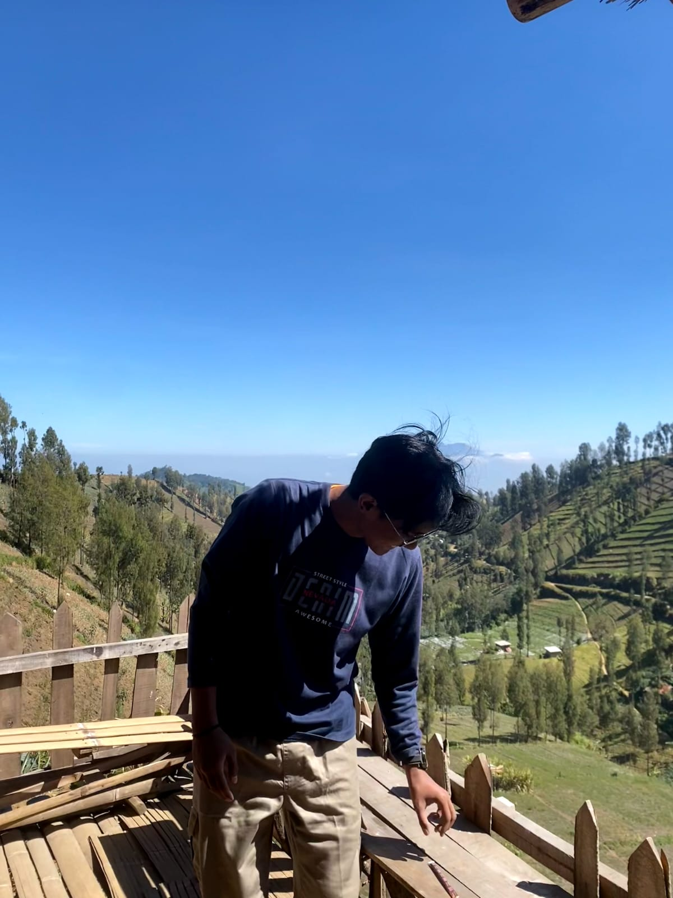
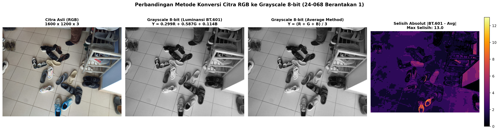
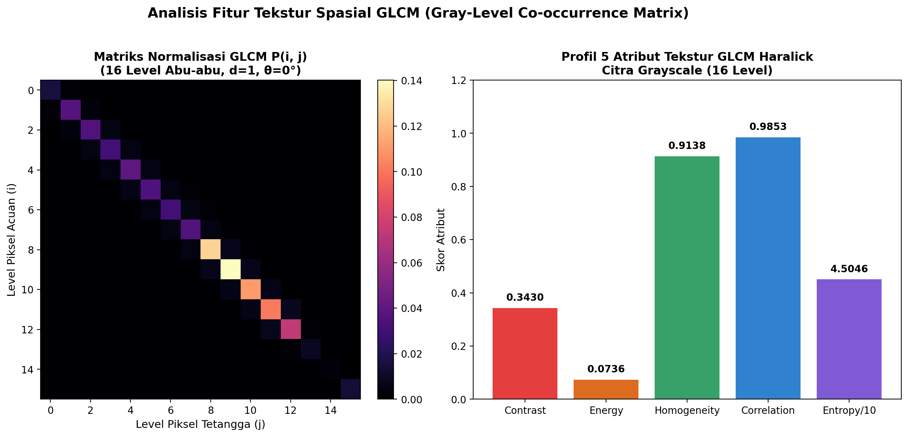
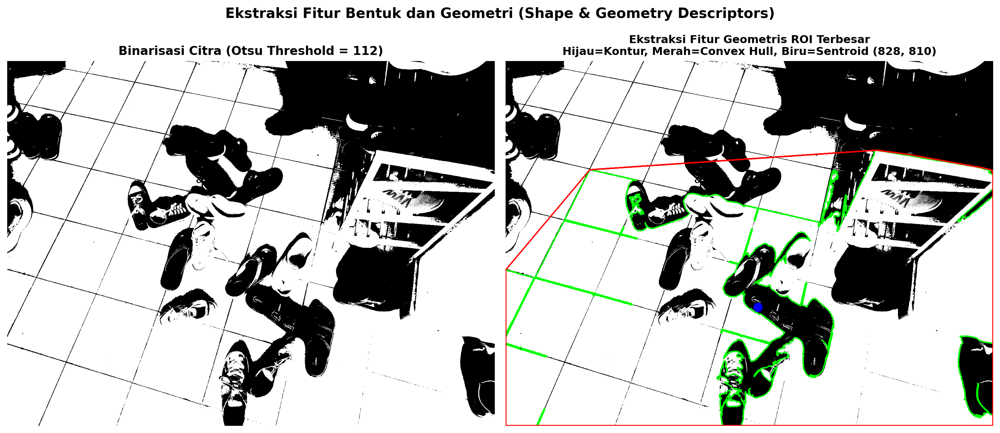
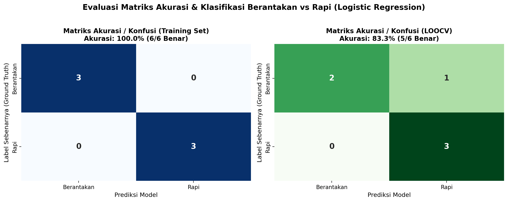
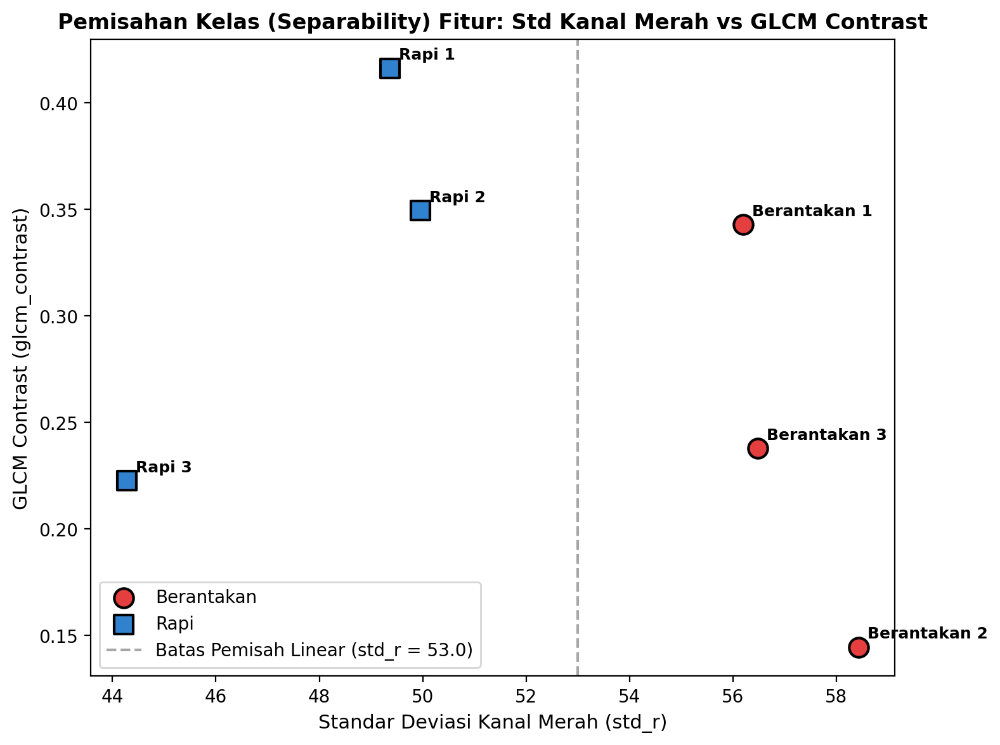
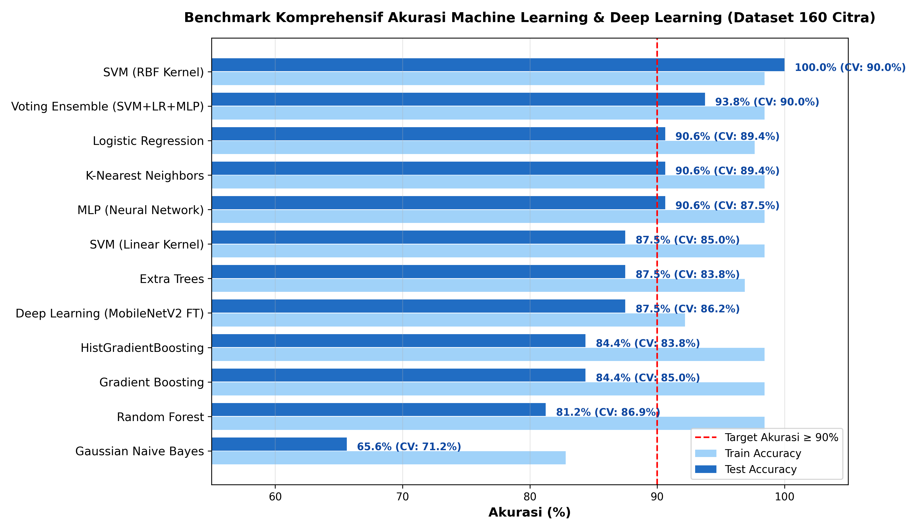
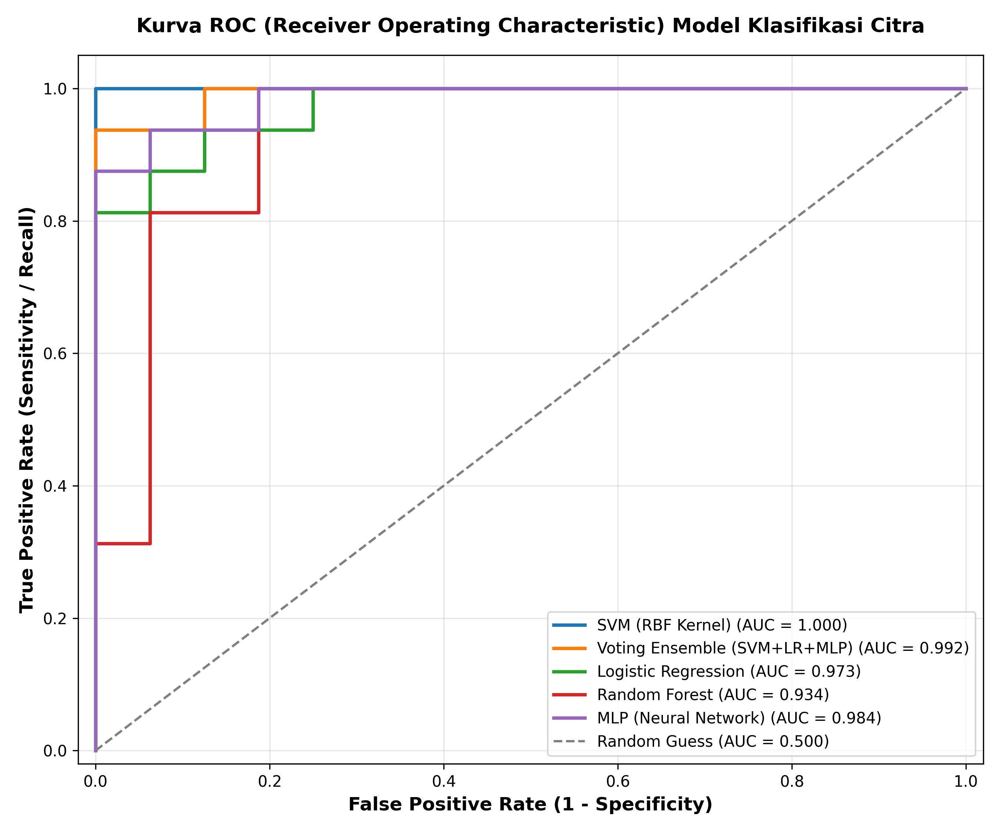
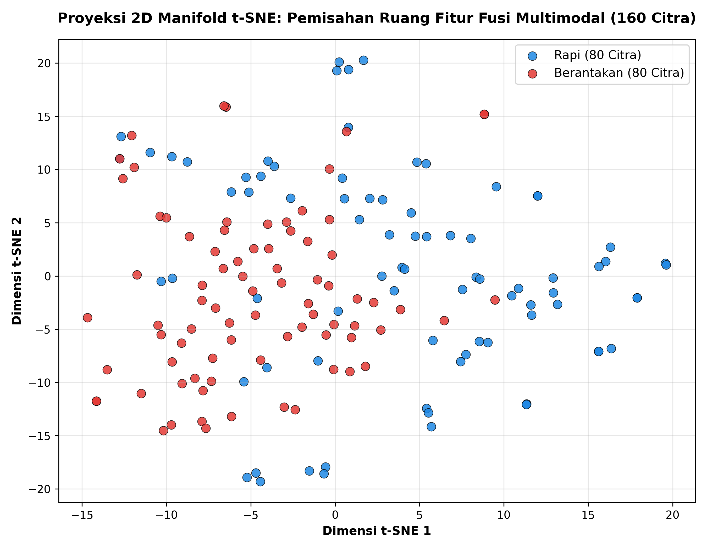

<!DOCTYPE html>


<html lang="en" data-content_root="./" >

  <head>
    <meta charset="utf-8" />
    <meta name="viewport" content="width=device-width, initial-scale=1.0" /><meta name="viewport" content="width=device-width, initial-scale=1" />

    <title>Ekstraksi Fitur Citra Digital: Momen Warna RGB, Konversi Grayscale 8-Bit, Fitur Statistik, Tekstur (GLCM &amp; Tamura), dan Morfologi Geometri &#8212; Tugas PSD</title>
  
  
  
  <script data-cfasync="false">
    document.documentElement.dataset.mode = localStorage.getItem("mode") || "";
    document.documentElement.dataset.theme = localStorage.getItem("theme") || "";
  </script>
  
  <!-- Loaded before other Sphinx assets -->
  <link href="_static/styles/theme.css?digest=dfe6caa3a7d634c4db9b" rel="stylesheet" />
<link href="_static/styles/bootstrap.css?digest=dfe6caa3a7d634c4db9b" rel="stylesheet" />
<link href="_static/styles/pydata-sphinx-theme.css?digest=dfe6caa3a7d634c4db9b" rel="stylesheet" />

  
  <link href="_static/vendor/fontawesome/6.5.2/css/all.min.css?digest=dfe6caa3a7d634c4db9b" rel="stylesheet" />
  <link rel="preload" as="font" type="font/woff2" crossorigin href="_static/vendor/fontawesome/6.5.2/webfonts/fa-solid-900.woff2" />
<link rel="preload" as="font" type="font/woff2" crossorigin href="_static/vendor/fontawesome/6.5.2/webfonts/fa-brands-400.woff2" />
<link rel="preload" as="font" type="font/woff2" crossorigin href="_static/vendor/fontawesome/6.5.2/webfonts/fa-regular-400.woff2" />

    <link rel="stylesheet" type="text/css" href="_static/pygments.css?v=03e43079" />
    <link rel="stylesheet" type="text/css" href="_static/styles/sphinx-book-theme.css?v=eba8b062" />
    <link rel="stylesheet" type="text/css" href="_static/togglebutton.css?v=9c3e77be" />
    <link rel="stylesheet" type="text/css" href="_static/copybutton.css?v=76b2166b" />
    <link rel="stylesheet" type="text/css" href="_static/mystnb.11b39860a7a0cbfd473a3ad8a317855267ff0bd372690045ca344a6b62be495e.css?v=8cd3d715" />
    <link rel="stylesheet" type="text/css" href="_static/sphinx-thebe.css?v=4fa983c6" />
    <link rel="stylesheet" type="text/css" href="_static/sphinx-design.min.css?v=95c83b7e" />
  
  <!-- Pre-loaded scripts that we'll load fully later -->
  <link rel="preload" as="script" href="_static/scripts/bootstrap.js?digest=dfe6caa3a7d634c4db9b" />
<link rel="preload" as="script" href="_static/scripts/pydata-sphinx-theme.js?digest=dfe6caa3a7d634c4db9b" />
  <script src="_static/vendor/fontawesome/6.5.2/js/all.min.js?digest=dfe6caa3a7d634c4db9b"></script>

    <script src="_static/documentation_options.js?v=9eb32ce0"></script>
    <script src="_static/doctools.js?v=9a2dae69"></script>
    <script src="_static/sphinx_highlight.js?v=dc90522c"></script>
    <script src="_static/clipboard.min.js?v=a7894cd8"></script>
    <script src="_static/copybutton.js?v=f281be69"></script>
    <script src="_static/scripts/sphinx-book-theme.js?v=887ef09a"></script>
    <script>let toggleHintShow = 'Click to show';</script>
    <script>let toggleHintHide = 'Click to hide';</script>
    <script>let toggleOpenOnPrint = 'true';</script>
    <script src="_static/togglebutton.js?v=b8b12719"></script>
    <script>var togglebuttonSelector = '.toggle, .admonition.dropdown';</script>
    <script src="_static/design-tabs.js?v=f930bc37"></script>
    <script>const THEBE_JS_URL = "https://unpkg.com/thebe@0.8.2/lib/index.js"; const thebe_selector = ".thebe,.cell"; const thebe_selector_input = "pre"; const thebe_selector_output = ".output, .cell_output"</script>
    <script async="async" src="_static/sphinx-thebe.js?v=c100c467"></script>
    <script>var togglebuttonSelector = '.toggle, .admonition.dropdown';</script>
    <script>const THEBE_JS_URL = "https://unpkg.com/thebe@0.8.2/lib/index.js"; const thebe_selector = ".thebe,.cell"; const thebe_selector_input = "pre"; const thebe_selector_output = ".output, .cell_output"</script>
    <script>window.MathJax = {"options": {"processHtmlClass": "tex2jax_process|mathjax_process|math|output_area"}}</script>
    <script defer="defer" src="https://cdn.jsdelivr.net/npm/mathjax@3/es5/tex-mml-chtml.js"></script>
    <script>DOCUMENTATION_OPTIONS.pagename = 'ekstraksi_fitur_citra_digital';</script>
    <link rel="index" title="Index" href="genindex.html" />
    <link rel="search" title="Search" href="search.html" />
    <link rel="prev" title="Identifikasi dan Klasifikasi Suara Menggunakan Fitur Audio: Studi Kasus Berisik vs Non-Berisik (Hening)" href="identifikasi_klasifikasi_suara.html" />
  <meta name="viewport" content="width=device-width, initial-scale=1"/>
  <meta name="docsearch:language" content="en"/>
  </head>
  
  
  <body data-bs-spy="scroll" data-bs-target=".bd-toc-nav" data-offset="180" data-bs-root-margin="0px 0px -60%" data-default-mode="">

  
  
  <div id="pst-skip-link" class="skip-link d-print-none"><a href="#main-content">Skip to main content</a></div>
  
  <div id="pst-scroll-pixel-helper"></div>
  
  <button type="button" class="btn rounded-pill" id="pst-back-to-top">
    <i class="fa-solid fa-arrow-up"></i>Back to top</button>

  
  <input type="checkbox"
          class="sidebar-toggle"
          id="pst-primary-sidebar-checkbox"/>
  <label class="overlay overlay-primary" for="pst-primary-sidebar-checkbox"></label>
  
  <input type="checkbox"
          class="sidebar-toggle"
          id="pst-secondary-sidebar-checkbox"/>
  <label class="overlay overlay-secondary" for="pst-secondary-sidebar-checkbox"></label>
  
  <div class="search-button__wrapper">
    <div class="search-button__overlay"></div>
    <div class="search-button__search-container">
<form class="bd-search d-flex align-items-center"
      action="search.html"
      method="get">
  <i class="fa-solid fa-magnifying-glass"></i>
  <input type="search"
         class="form-control"
         name="q"
         id="search-input"
         placeholder="Search this book..."
         aria-label="Search this book..."
         autocomplete="off"
         autocorrect="off"
         autocapitalize="off"
         spellcheck="false"/>
  <span class="search-button__kbd-shortcut"><kbd class="kbd-shortcut__modifier">Ctrl</kbd>+<kbd>K</kbd></span>
</form></div>
  </div>

  <div class="pst-async-banner-revealer d-none">
  <aside id="bd-header-version-warning" class="d-none d-print-none" aria-label="Version warning"></aside>
</div>

  
    <header class="bd-header navbar navbar-expand-lg bd-navbar d-print-none">
    </header>
  

  <div class="bd-container">
    <div class="bd-container__inner bd-page-width">
      
      
      
      <div class="bd-sidebar-primary bd-sidebar">
        

  
  <div class="sidebar-header-items sidebar-primary__section">
    
    
    
    
  </div>
  
    <div class="sidebar-primary-items__start sidebar-primary__section">
        <div class="sidebar-primary-item">

  
    
  

<a class="navbar-brand logo" href="intro.html">
  
  
  
  
  
    
    
      
    
    
    
    <script>document.write(``);</script>
  
  
</a></div>
        <div class="sidebar-primary-item">

 <script>
 document.write(`
   <button class="btn search-button-field search-button__button" title="Search" aria-label="Search" data-bs-placement="bottom" data-bs-toggle="tooltip">
    <i class="fa-solid fa-magnifying-glass"></i>
    <span class="search-button__default-text">Search</span>
    <span class="search-button__kbd-shortcut"><kbd class="kbd-shortcut__modifier">Ctrl</kbd>+<kbd class="kbd-shortcut__modifier">K</kbd></span>
   </button>
 `);
 </script></div>
        <div class="sidebar-primary-item"><nav class="bd-links bd-docs-nav" aria-label="Main">
    <div class="bd-toc-item navbar-nav active">
        
        <ul class="nav bd-sidenav bd-sidenav__home-link">
            <li class="toctree-l1">
                <a class="reference internal" href="intro.html">
                    Analisis Kualitas Udara (Polutan NO2) Area Suramadu
                </a>
            </li>
        </ul>
        <ul class="current nav bd-sidenav">
<li class="toctree-l1"><a class="reference internal" href="business_understanding.html">1. Business Understanding</a></li>
<li class="toctree-l1"><a class="reference internal" href="data_understanding.html">2. Data Understanding</a></li>
<li class="toctree-l1"><a class="reference internal" href="1_pengumpulan_data.html">Bab 1: Pengumpulan Data, Preprocessing, dan Ekstraksi Fitur <em>Time-Series</em> NO2</a></li>
<li class="toctree-l1"><a class="reference internal" href="2_database_dan_analisis.html">Bab 2: Sentralisasi Data, Manajemen Database, dan Analisis Statistik Deskriptif</a></li>
<li class="toctree-l1"><a class="reference internal" href="eda.html">3. Exploratory Data Analysis (EDA)</a></li>
<li class="toctree-l1"><a class="reference internal" href="time_series.html">Analisis Time Series: Persiapan Data Kualitas Udara (NO2) Suramadu</a></li>
<li class="toctree-l1"><a class="reference internal" href="conclusion.html">4. Kesimpulan dan Rekomendasi</a></li>
<li class="toctree-l1"><a class="reference internal" href="eda_polutan.html">Bagian 1: Eksplorasi Data (EDA) Time Series pada Setiap Polutan</a></li>


<li class="toctree-l1"><a class="reference internal" href="Bagian%202%20Analisis%20dan%20Perhitungan%20Manual%20Fitur%20TSFEL.html">Bagian 2: Analisis dan Perhitungan Manual Fitur TSFEL</a></li>


<li class="toctree-l1"><a class="reference internal" href="Bagian%203%20Pemodelan%20Machine%20Learning%20%26%20Evaluasi%20K-Means.html">Bagian 3: Pemodelan Machine Learning &amp; Evaluasi K-Means</a></li>
<li class="toctree-l1"><a class="reference internal" href="tahap1_pengambilan_data_eda.html">Tahap 1 - Pengambilan Data &amp; Exploratory Data Analysis (EDA)</a></li>
<li class="toctree-l1"><a class="reference internal" href="tahap2_reduksi_dimensi.html">Tahap 2 - Reduksi Dimensi: 204 -&gt; 203 -&gt; 74 -&gt; 37</a></li>
<li class="toctree-l1"><a class="reference internal" href="tahap3_eksperimen_clustering.html">Tahap 3 - Eksperimen Clustering &amp; Analisis Silhouette</a></li>
<li class="toctree-l1"><a class="reference internal" href="tahap4_kmeans_knime_dan_visualisasi_peta.html">Pemodelan K-Means &amp; Visualisasi Peta Segmentasi</a></li>
<li class="toctree-l1"><a class="reference internal" href="Tugas_PSD_LULC_Final.html">Klasifikasi Penggunaan dan Tutupan Lahan (Land Use / Land Cover) Jawa Timur</a></li>
<li class="toctree-l1"><a class="reference internal" href="identifikasi_klasifikasi_suara.html">Identifikasi dan Klasifikasi Suara Menggunakan Fitur Audio: Studi Kasus Berisik vs Non-Berisik (Hening)</a></li>
<li class="toctree-l1 current active"><a class="current reference internal" href="#">Ekstraksi Fitur Citra Digital: Momen Warna RGB, Konversi Grayscale 8-Bit, Fitur Statistik, Tekstur (GLCM &amp; Tamura), dan Morfologi Geometri</a></li>
</ul>

    </div>
</nav></div>
    </div>
  
  
  <div class="sidebar-primary-items__end sidebar-primary__section">
  </div>
  
  <div id="rtd-footer-container"></div>


      </div>
      
      <main id="main-content" class="bd-main" role="main">
        
        

<div class="sbt-scroll-pixel-helper"></div>

          <div class="bd-content">
            <div class="bd-article-container">
              
              <div class="bd-header-article d-print-none">
<div class="header-article-items header-article__inner">
  
    <div class="header-article-items__start">
      
        <div class="header-article-item"><button class="sidebar-toggle primary-toggle btn btn-sm" title="Toggle primary sidebar" data-bs-placement="bottom" data-bs-toggle="tooltip">
  <span class="fa-solid fa-bars"></span>
</button></div>
      
    </div>
  
  
    <div class="header-article-items__end">
      
        <div class="header-article-item">

<div class="article-header-buttons">


<div class="dropdown dropdown-download-buttons">
  <button class="btn dropdown-toggle" type="button" data-bs-toggle="dropdown" aria-expanded="false" aria-label="Download this page">
    <i class="fas fa-download"></i>
  </button>
  <ul class="dropdown-menu">
      
      
      
      <li><a href="_sources/ekstraksi_fitur_citra_digital.md" target="_blank"
   class="btn btn-sm btn-download-source-button dropdown-item"
   title="Download source file"
   data-bs-placement="left" data-bs-toggle="tooltip"
>
  

<span class="btn__icon-container">
  <i class="fas fa-file"></i>
  </span>
<span class="btn__text-container">.md</span>
</a>
</li>
      
      
      
      
      <li>
<button onclick="window.print()"
  class="btn btn-sm btn-download-pdf-button dropdown-item"
  title="Print to PDF"
  data-bs-placement="left" data-bs-toggle="tooltip"
>
  

<span class="btn__icon-container">
  <i class="fas fa-file-pdf"></i>
  </span>
<span class="btn__text-container">.pdf</span>
</button>
</li>
      
  </ul>
</div>


<button onclick="toggleFullScreen()"
  class="btn btn-sm btn-fullscreen-button"
  title="Fullscreen mode"
  data-bs-placement="bottom" data-bs-toggle="tooltip"
>
  

<span class="btn__icon-container">
  <i class="fas fa-expand"></i>
  </span>

</button>


<script>
document.write(`
  <button class="btn btn-sm nav-link pst-navbar-icon theme-switch-button" title="light/dark" aria-label="light/dark" data-bs-placement="bottom" data-bs-toggle="tooltip">
    <i class="theme-switch fa-solid fa-sun fa-lg" data-mode="light"></i>
    <i class="theme-switch fa-solid fa-moon fa-lg" data-mode="dark"></i>
    <i class="theme-switch fa-solid fa-circle-half-stroke fa-lg" data-mode="auto"></i>
  </button>
`);
</script>


<script>
document.write(`
  <button class="btn btn-sm pst-navbar-icon search-button search-button__button" title="Search" aria-label="Search" data-bs-placement="bottom" data-bs-toggle="tooltip">
    <i class="fa-solid fa-magnifying-glass fa-lg"></i>
  </button>
`);
</script>
<button class="sidebar-toggle secondary-toggle btn btn-sm" title="Toggle secondary sidebar" data-bs-placement="bottom" data-bs-toggle="tooltip">
    <span class="fa-solid fa-list"></span>
</button>
</div></div>
      
    </div>
  
</div>
</div>
              
              

<div id="jb-print-docs-body" class="onlyprint">
    <h1>Ekstraksi Fitur Citra Digital: Momen Warna RGB, Konversi Grayscale 8-Bit, Fitur Statistik, Tekstur (GLCM & Tamura), dan Morfologi Geometri</h1>
    <!-- Table of contents -->
    <div id="print-main-content">
        <div id="jb-print-toc">
            
            <div>
                <h2> Contents </h2>
            </div>
            <nav aria-label="Page">
                <ul class="visible nav section-nav flex-column">
<li class="toc-h2 nav-item toc-entry"><a class="reference internal nav-link" href="#daftar-isi">Daftar Isi</a></li>
<li class="toc-h2 nav-item toc-entry"><a class="reference internal nav-link" href="#pendahuluan-urgensi-dan-taksonomi-ekstraksi-fitur-citra">1. Pendahuluan: Urgensi dan Taksonomi Ekstraksi Fitur Citra</a><ul class="nav section-nav flex-column">
<li class="toc-h3 nav-item toc-entry"><a class="reference internal nav-link" href="#mengapa-ekstraksi-fitur-penting">1.1 Mengapa Ekstraksi Fitur Penting?</a></li>
<li class="toc-h3 nav-item toc-entry"><a class="reference internal nav-link" href="#domain-aplikasi-ekstraksi-fitur">1.2 Domain Aplikasi Ekstraksi Fitur</a></li>
<li class="toc-h3 nav-item toc-entry"><a class="reference internal nav-link" href="#taksonomi-empat-kategori-fitur-citra">1.3 Taksonomi Empat Kategori Fitur Citra</a></li>
</ul>
</li>
<li class="toc-h2 nav-item toc-entry"><a class="reference internal nav-link" href="#karakteristik-dan-representasi-citra-sampel-24-068-berantakan-1-jpeg">2. Karakteristik dan Representasi Citra Sampel (<code class="docutils literal notranslate"><span class="pre">24-068</span> <span class="pre">Berantakan</span> <span class="pre">1.jpeg</span></code>)</a><ul class="nav section-nav flex-column">
<li class="toc-h3 nav-item toc-entry"><a class="reference internal nav-link" href="#dimensi-spasial-dan-tensor-3d">2.1 Dimensi Spasial dan Tensor 3D</a></li>
<li class="toc-h3 nav-item toc-entry"><a class="reference internal nav-link" href="#dekomposisi-kanal-warna-rgb">2.2 Dekomposisi Kanal Warna RGB</a></li>
</ul>
</li>
<li class="toc-h2 nav-item toc-entry"><a class="reference internal nav-link" href="#materi-khusus-transformasi-citra-rgb-ke-grayscale-8-bit">3. Materi Khusus: Transformasi Citra RGB ke Grayscale 8-Bit</a><ul class="nav section-nav flex-column">
<li class="toc-h3 nav-item toc-entry"><a class="reference internal nav-link" href="#rasionalitas-konversi-ke-grayscale">3.1 Rasionalitas Konversi ke Grayscale</a></li>
<li class="toc-h3 nav-item toc-entry"><a class="reference internal nav-link" href="#landasan-fisiologis-penglihatan-manusia">3.2 Landasan Fisiologis Penglihatan Manusia</a></li>
<li class="toc-h3 nav-item toc-entry"><a class="reference internal nav-link" href="#formulasi-matematis-metode-konversi">3.3 Formulasi Matematis Metode Konversi</a><ul class="nav section-nav flex-column">
<li class="toc-h4 nav-item toc-entry"><a class="reference internal nav-link" href="#metode-luminansi-standar-itu-r-bt-601-ntsc-pal">1. Metode Luminansi Standar ITU-R BT.601 (NTSC/PAL)</a></li>
<li class="toc-h4 nav-item toc-entry"><a class="reference internal nav-link" href="#metode-luminansi-standar-itu-r-bt-709-hdtv-srgb">2. Metode Luminansi Standar ITU-R BT.709 (HDTV / sRGB)</a></li>
<li class="toc-h4 nav-item toc-entry"><a class="reference internal nav-link" href="#metode-rata-rata-aritmatika-sederhana-average-method">3. Metode Rata-Rata Aritmatika Sederhana (Average Method)</a></li>
<li class="toc-h4 nav-item toc-entry"><a class="reference internal nav-link" href="#metode-desaturasi-lightness">4. Metode Desaturasi / Lightness</a></li>
</ul>
</li>
<li class="toc-h3 nav-item toc-entry"><a class="reference internal nav-link" href="#kuantisasi-dan-representasi-diskrit-8-bit">3.4 Kuantisasi dan Representasi Diskrit 8-Bit</a></li>
<li class="toc-h3 nav-item toc-entry"><a class="reference internal nav-link" href="#visualisasi-perbandingan-metode-konversi">3.5 Visualisasi Perbandingan Metode Konversi</a></li>
</ul>
</li>
<li class="toc-h2 nav-item toc-entry"><a class="reference internal nav-link" href="#kategori-1-fitur-warna-color-features">4. Kategori 1: Fitur Warna (Color Features)</a><ul class="nav section-nav flex-column">
<li class="toc-h3 nav-item toc-entry"><a class="reference internal nav-link" href="#momen-warna-color-moments-orde-1-hingga-4">4.1 Momen Warna (Color Moments) Orde 1 hingga 4</a><ul class="nav section-nav flex-column">
<li class="toc-h4 nav-item toc-entry"><a class="reference internal nav-link" href="#momen-pertama-mean-mu-c">1. Momen Pertama: Mean (<span class="math notranslate nohighlight">\(\mu_C\)</span>)</a></li>
<li class="toc-h4 nav-item toc-entry"><a class="reference internal nav-link" href="#momen-kedua-varians-sigma-c-2-dan-standar-deviasi-sigma-c">2. Momen Kedua: Varians (<span class="math notranslate nohighlight">\(\sigma_C^2\)</span>) dan Standar Deviasi (<span class="math notranslate nohighlight">\(\sigma_C\)</span>)</a></li>
<li class="toc-h4 nav-item toc-entry"><a class="reference internal nav-link" href="#momen-ketiga-skewness-gamma-1-c">3. Momen Ketiga: Skewness (<span class="math notranslate nohighlight">\(\gamma_{1, C}\)</span>)</a></li>
<li class="toc-h4 nav-item toc-entry"><a class="reference internal nav-link" href="#momen-keempat-kurtosis-gamma-2-c">4. Momen Keempat: Kurtosis (<span class="math notranslate nohighlight">\(\gamma_{2, C}\)</span>)</a></li>
</ul>
</li>
<li class="toc-h3 nav-item toc-entry"><a class="reference internal nav-link" href="#histogram-warna-color-histogram">4.2 Histogram Warna (Color Histogram)</a></li>
<li class="toc-h3 nav-item toc-entry"><a class="reference internal nav-link" href="#rata-rata-rgb-average-rgb">4.3 Rata-rata RGB (Average RGB)</a></li>
<li class="toc-h3 nav-item toc-entry"><a class="reference internal nav-link" href="#analisis-kompleksitas-komputasi-dan-memori">4.4 Analisis Kompleksitas Komputasi dan Memori</a></li>
</ul>
</li>
<li class="toc-h2 nav-item toc-entry"><a class="reference internal nav-link" href="#kategori-2-fitur-statistik-intensitas-global-statistical-features">5. Kategori 2: Fitur Statistik Intensitas Global (Statistical Features)</a><ul class="nav section-nav flex-column">
<li class="toc-h3 nav-item toc-entry"><a class="reference internal nav-link" href="#mean-mu-dan-varians-sigma-2">5.1 Mean (<span class="math notranslate nohighlight">\(\mu\)</span>) dan Varians (<span class="math notranslate nohighlight">\(\sigma^2\)</span>)</a></li>
<li class="toc-h3 nav-item toc-entry"><a class="reference internal nav-link" href="#standar-deviasi-sigma-kontras-statistik">5.2 Standar Deviasi (<span class="math notranslate nohighlight">\(\sigma\)</span> / Kontras Statistik)</a></li>
<li class="toc-h3 nav-item toc-entry"><a class="reference internal nav-link" href="#root-mean-square-rms">5.3 Root Mean Square (RMS)</a></li>
<li class="toc-h3 nav-item toc-entry"><a class="reference internal nav-link" href="#total-energy-e">5.4 Total Energy (<span class="math notranslate nohighlight">\(E\)</span>)</a></li>
<li class="toc-h3 nav-item toc-entry"><a class="reference internal nav-link" href="#entropi-shannon-h">5.5 Entropi Shannon (<span class="math notranslate nohighlight">\(H\)</span>)</a></li>
<li class="toc-h3 nav-item toc-entry"><a class="reference internal nav-link" href="#smoothness-tingkat-kehalusan-relatif-q">5.6 Smoothness (Tingkat Kehalusan Relatif / <span class="math notranslate nohighlight">\(Q\)</span>)</a></li>
</ul>
</li>
<li class="toc-h2 nav-item toc-entry"><a class="reference internal nav-link" href="#kategori-3-fitur-tekstur-spasial-spatial-texture-features">6. Kategori 3: Fitur Tekstur Spasial (Spatial Texture Features)</a><ul class="nav section-nav flex-column">
<li class="toc-h3 nav-item toc-entry"><a class="reference internal nav-link" href="#gray-level-co-occurrence-matrix-glcm-haralick">6.1 Gray-Level Co-occurrence Matrix (GLCM) Haralick</a></li>
<li class="toc-h3 nav-item toc-entry"><a class="reference internal nav-link" href="#simulasi-pembentukan-glcm-langkah-demi-langkah-matriks-3-times-3">6.2 Simulasi Pembentukan GLCM Langkah demi Langkah (Matriks <span class="math notranslate nohighlight">\(3 \times 3\)</span>)</a><ul class="nav section-nav flex-column">
<li class="toc-h4 nav-item toc-entry"><a class="reference internal nav-link" href="#langkah-1-observasi-pasangan-piksel-horisontal">Langkah 1: Observasi Pasangan Piksel Horisontal</a></li>
<li class="toc-h4 nav-item toc-entry"><a class="reference internal nav-link" href="#langkah-2-tabulasi-matriks-frekuensi-glcm-mentah">Langkah 2: Tabulasi Matriks Frekuensi GLCM Mentah</a></li>
<li class="toc-h4 nav-item toc-entry"><a class="reference internal nav-link" href="#langkah-3-normalisasi-matriks-menjadi-probabilitas-p-i-j">Langkah 3: Normalisasi Matriks Menjadi Probabilitas <span class="math notranslate nohighlight">\(P(i, j)\)</span></a></li>
</ul>
</li>
<li class="toc-h3 nav-item toc-entry"><a class="reference internal nav-link" href="#lima-atribut-tekstur-glcm-haralick-features">6.3 Lima Atribut Tekstur GLCM (Haralick Features)</a><ul class="nav section-nav flex-column">
<li class="toc-h4 nav-item toc-entry"><a class="reference internal nav-link" href="#contrast-kontras-spasial">1. Contrast (Kontras Spasial)</a></li>
<li class="toc-h4 nav-item toc-entry"><a class="reference internal nav-link" href="#energy-angular-second-moment-asm">2. Energy / Angular Second Moment (ASM)</a></li>
<li class="toc-h4 nav-item toc-entry"><a class="reference internal nav-link" href="#homogeneity-inverse-difference-moment-idm">3. Homogeneity / Inverse Difference Moment (IDM)</a></li>
<li class="toc-h4 nav-item toc-entry"><a class="reference internal nav-link" href="#entropy-glcm">4. Entropy GLCM</a></li>
<li class="toc-h4 nav-item toc-entry"><a class="reference internal nav-link" href="#correlation-korelasi-linier-spasial">5. Correlation (Korelasi Linier Spasial)</a></li>
</ul>
</li>
<li class="toc-h3 nav-item toc-entry"><a class="reference internal nav-link" href="#enam-atribut-tekstur-tamura-persepsi-visual-manusia">6.4 Enam Atribut Tekstur Tamura (Persepsi Visual Manusia)</a></li>
</ul>
</li>
<li class="toc-h2 nav-item toc-entry"><a class="reference internal nav-link" href="#kategori-4-fitur-bentuk-dan-geometri-shape-geometry-features">7. Kategori 4: Fitur Bentuk dan Geometri (Shape &amp; Geometry Features)</a><ul class="nav section-nav flex-column">
<li class="toc-h3 nav-item toc-entry"><a class="reference internal nav-link" href="#binarisasi-dan-deteksi-region-of-interest-roi">7.1 Binarisasi dan Deteksi Region of Interest (ROI)</a></li>
<li class="toc-h3 nav-item toc-entry"><a class="reference internal nav-link" href="#luas-area-a">7.2 Luas (Area / <span class="math notranslate nohighlight">\(A\)</span>)</a></li>
<li class="toc-h3 nav-item toc-entry"><a class="reference internal nav-link" href="#keliling-perimeter-p">7.3 Keliling (Perimeter / <span class="math notranslate nohighlight">\(P\)</span>)</a></li>
<li class="toc-h3 nav-item toc-entry"><a class="reference internal nav-link" href="#sentroid-pusat-massa-x-u-y-u">7.4 Sentroid / Pusat Massa (<span class="math notranslate nohighlight">\(x_u, y_u\)</span>)</a></li>
<li class="toc-h3 nav-item toc-entry"><a class="reference internal nav-link" href="#indeks-irregularitas-irregularity-index-ii">7.5 Indeks Irregularitas (Irregularity Index / <span class="math notranslate nohighlight">\(II\)</span>)</a></li>
<li class="toc-h3 nav-item toc-entry"><a class="reference internal nav-link" href="#diameter-ekuivalen-d">7.6 Diameter Ekuivalen (<span class="math notranslate nohighlight">\(D\)</span>)</a></li>
<li class="toc-h3 nav-item toc-entry"><a class="reference internal nav-link" href="#convex-area-a-text-convex-dan-solidity-s">7.7 Convex Area (<span class="math notranslate nohighlight">\(A_{\text{convex}}\)</span>) dan Solidity (<span class="math notranslate nohighlight">\(S\)</span>)</a></li>
</ul>
</li>
<li class="toc-h2 nav-item toc-entry"><a class="reference internal nav-link" href="#simulasi-perhitungan-manual-terpadu-sub-matriks-5-times-5">8. Simulasi Perhitungan Manual Terpadu (Sub-Matriks <span class="math notranslate nohighlight">\(5 \times 5\)</span>)</a><ul class="nav section-nav flex-column">
<li class="toc-h3 nav-item toc-entry"><a class="reference internal nav-link" href="#data-matriks-asli-patch-5-times-5">8.1 Data Matriks Asli Patch <span class="math notranslate nohighlight">\(5 \times 5\)</span></a></li>
<li class="toc-h3 nav-item toc-entry"><a class="reference internal nav-link" href="#konversi-manual-rgb-ke-grayscale-8-bit">8.2 Konversi Manual RGB ke Grayscale 8-Bit</a></li>
<li class="toc-h3 nav-item toc-entry"><a class="reference internal nav-link" href="#perhitungan-statistik-manual">8.3 Perhitungan Statistik Manual</a></li>
</ul>
</li>
<li class="toc-h2 nav-item toc-entry"><a class="reference internal nav-link" href="#hasil-ekstraksi-fitur-aktual-pada-citra-24-068-berantakan-1">9. Hasil Ekstraksi Fitur Aktual pada Citra <code class="docutils literal notranslate"><span class="pre">24-068</span> <span class="pre">Berantakan</span> <span class="pre">1</span></code></a><ul class="nav section-nav flex-column">
<li class="toc-h3 nav-item toc-entry"><a class="reference internal nav-link" href="#tabel-parameter-momen-warna-rgb">9.1 Tabel Parameter Momen Warna RGB</a></li>
<li class="toc-h3 nav-item toc-entry"><a class="reference internal nav-link" href="#tabel-fitur-statistik-citra-grayscale-8-bit-bt-601">9.2 Tabel Fitur Statistik Citra Grayscale 8-Bit (BT.601)</a></li>
<li class="toc-h3 nav-item toc-entry"><a class="reference internal nav-link" href="#tabel-fitur-tekstur-glcm-haralick-kuantisasi-16-level-d-1-theta-0-circ">9.3 Tabel Fitur Tekstur GLCM Haralick (Kuantisasi 16 Level, <span class="math notranslate nohighlight">\(d=1, \theta=0^\circ\)</span>)</a></li>
<li class="toc-h3 nav-item toc-entry"><a class="reference internal nav-link" href="#tabel-fitur-morfologi-geometri-roi-utama-segmentasi-otsu-t-112">9.4 Tabel Fitur Morfologi Geometri ROI Utama (Segmentasi Otsu <span class="math notranslate nohighlight">\(T=112\)</span>)</a></li>
</ul>
</li>
<li class="toc-h2 nav-item toc-entry"><a class="reference internal nav-link" href="#implementasi-pipeline-komputasi-dengan-python">10. Implementasi Pipeline Komputasi dengan Python</a></li>
<li class="toc-h2 nav-item toc-entry"><a class="reference internal nav-link" href="#pembentukan-dataset-fitur-14-fitur-label-ekspor-csv-dan-pemodelan-klasifikasi">11. Pembentukan Dataset Fitur (14 Fitur + Label), Ekspor CSV, dan Pemodelan Klasifikasi</a><ul class="nav section-nav flex-column">
<li class="toc-h3 nav-item toc-entry"><a class="reference internal nav-link" href="#alur-dan-komposisi-14-fitur-citra-digital">11.1 Alur dan Komposisi 14 Fitur Citra Digital</a><ul class="nav section-nav flex-column">
<li class="toc-h4 nav-item toc-entry"><a class="reference internal nav-link" href="#formulasi-5-fitur-tekstur-matriks-ko-okurensi-glcm">Formulasi 5 Fitur Tekstur Matriks Ko-okurensi (GLCM):</a></li>
</ul>
</li>
<li class="toc-h3 nav-item toc-entry"><a class="reference internal nav-link" href="#tabel-dataset-lengkap-14-fitur-label-hasil-ekstraksi-6-citra">11.2 Tabel Dataset Lengkap 14 Fitur + Label (Hasil Ekstraksi 6 Citra)</a></li>
<li class="toc-h3 nav-item toc-entry"><a class="reference internal nav-link" href="#pembentukan-matriks-akurasi-matriks-konfusi-accuracy-confusion-matrix">11.3 Pembentukan Matriks Akurasi / Matriks Konfusi (Accuracy &amp; Confusion Matrix)</a><ul class="nav section-nav flex-column">
<li class="toc-h4 nav-item toc-entry"><a class="reference internal nav-link" href="#formulasi-metrik-evaluasi">Formulasi Metrik Evaluasi:</a></li>
<li class="toc-h4 nav-item toc-entry"><a class="reference internal nav-link" href="#hasil-evaluasi-matriks-akurasi-nyata-pada-dataset">Hasil Evaluasi Matriks Akurasi Nyata pada Dataset:</a></li>
</ul>
</li>
<li class="toc-h3 nav-item toc-entry"><a class="reference internal nav-link" href="#pemodelan-klasifikasi-machine-learning-analisis-daya-pisah-fitur">11.4 Pemodelan Klasifikasi Machine Learning &amp; Analisis Daya Pisah Fitur</a><ul class="nav section-nav flex-column">
<li class="toc-h4 nav-item toc-entry"><a class="reference internal nav-link" href="#mengapa-fitur-fitur-ini-mampu-memisahkan-kelas-secara-akurat">Mengapa Fitur-Fitur Ini Mampu Memisahkan Kelas Secara Akurat?</a></li>
</ul>
</li>
<li class="toc-h3 nav-item toc-entry"><a class="reference internal nav-link" href="#skrip-python-lengkap-ekstraksi-fitur-pembuatan-csv-dan-klasifikasi">11.5 Skrip Python Lengkap Ekstraksi Fitur, Pembuatan CSV, dan Klasifikasi</a></li>
</ul>
</li>
<li class="toc-h2 nav-item toc-entry"><a class="reference internal nav-link" href="#eksperimen-skala-besar-dataset-160-citra-fusi-fitur-multi-domain-benchmark-semua-model-ml-dl-dan-pencapaian-akurasi-90">12. Eksperimen Skala Besar Dataset 160 Citra: Fusi Fitur Multi-Domain, Benchmark Semua Model ML &amp; DL, dan Pencapaian Akurasi ≥ 90%</a><ul class="nav section-nav flex-column">
<li class="toc-h3 nav-item toc-entry"><a class="reference internal nav-link" href="#karakteristik-dataset-skala-besar-rapi-pilah-zip-berantakan-pilah-zip">12.1 Karakteristik Dataset Skala Besar (<code class="docutils literal notranslate"><span class="pre">rapi</span> <span class="pre">pilah.zip</span></code> &amp; <code class="docutils literal notranslate"><span class="pre">berantakan</span> <span class="pre">pilah.zip</span></code>)</a></li>
<li class="toc-h3 nav-item toc-entry"><a class="reference internal nav-link" href="#rekayasa-fitur-masif-multi-domain-80-fitur-fusi-multimodal">12.2 Rekayasa Fitur Masif Multi-Domain (80 Fitur Fusi Multimodal)</a><ul class="nav section-nav flex-column">
<li class="toc-h4 nav-item toc-entry"><a class="reference internal nav-link" href="#rincian-dan-landasan-fisis-setiap-domain-fitur">Rincian dan Landasan Fisis Setiap Domain Fitur:</a></li>
</ul>
</li>
<li class="toc-h3 nav-item toc-entry"><a class="reference internal nav-link" href="#analisis-teoretis-dan-alasan-pemilihan-setiap-model-ml-dl">12.3 Analisis Teoretis dan Alasan Pemilihan Setiap Model (ML &amp; DL)</a><ul class="nav section-nav flex-column">
<li class="toc-h4 nav-item toc-entry"><a class="reference internal nav-link" href="#support-vector-machine-svm-kernel-rbf">1. Support Vector Machine (SVM - Kernel RBF)</a></li>
<li class="toc-h4 nav-item toc-entry"><a class="reference internal nav-link" href="#voting-ensemble-classifier-soft-voting-svm-logistic-regression-mlp">2. Voting Ensemble Classifier (Soft Voting: SVM + Logistic Regression + MLP)</a></li>
<li class="toc-h4 nav-item toc-entry"><a class="reference internal nav-link" href="#logistic-regression-ridge-l-2-regularization">3. Logistic Regression (Ridge <span class="math notranslate nohighlight">\(L_2\)</span> Regularization)</a></li>
<li class="toc-h4 nav-item toc-entry"><a class="reference internal nav-link" href="#multi-layer-perceptron-mlp-neural-network">4. Multi-Layer Perceptron (MLP Neural Network)</a></li>
<li class="toc-h4 nav-item toc-entry"><a class="reference internal nav-link" href="#k-nearest-neighbors-knn-distance-weighted">5. K-Nearest Neighbors (KNN - Distance Weighted)</a></li>
<li class="toc-h4 nav-item toc-entry"><a class="reference internal nav-link" href="#support-vector-machine-linear-kernel">6. Support Vector Machine (Linear Kernel)</a></li>
<li class="toc-h4 nav-item toc-entry"><a class="reference internal nav-link" href="#deep-learning-cnn-mobilenetv2-transfer-learning-fine-tuning">7. Deep Learning CNN (MobileNetV2 Transfer Learning &amp; Fine-Tuning)</a></li>
<li class="toc-h4 nav-item toc-entry"><a class="reference internal nav-link" href="#random-forest-extra-trees-classifier">8. Random Forest &amp; Extra Trees Classifier</a></li>
<li class="toc-h4 nav-item toc-entry"><a class="reference internal nav-link" href="#gradient-boosting-histgradientboosting-gbm">9. Gradient Boosting &amp; HistGradientBoosting (GBM)</a></li>
<li class="toc-h4 nav-item toc-entry"><a class="reference internal nav-link" href="#gaussian-naive-bayes">10. Gaussian Naive Bayes</a></li>
</ul>
</li>
<li class="toc-h3 nav-item toc-entry"><a class="reference internal nav-link" href="#tabel-komparasi-benchmark-kinerja-seluruh-model">12.4 Tabel Komparasi Benchmark Kinerja Seluruh Model</a></li>
<li class="toc-h3 nav-item toc-entry"><a class="reference internal nav-link" href="#matriks-akurasi-matriks-konfusi-confusion-matrix-model-terbaik">12.5 Matriks Akurasi &amp; Matriks Konfusi (Confusion Matrix) Model Terbaik</a><ul class="nav section-nav flex-column">
<li class="toc-h4 nav-item toc-entry"><a class="reference internal nav-link" href="#confusion-matrix-svm-rbf-kernel-akurasi-100-00">1. Confusion Matrix: SVM (RBF Kernel) — Akurasi 100.00%</a></li>
<li class="toc-h4 nav-item toc-entry"><a class="reference internal nav-link" href="#confusion-matrix-voting-ensemble-svm-lr-mlp-akurasi-93-75">2. Confusion Matrix: Voting Ensemble (SVM + LR + MLP) — Akurasi 93.75%</a></li>
<li class="toc-h4 nav-item toc-entry"><a class="reference internal nav-link" href="#confusion-matrix-logistic-regression-akurasi-90-62">3. Confusion Matrix: Logistic Regression — Akurasi 90.62%</a></li>
<li class="toc-h4 nav-item toc-entry"><a class="reference internal nav-link" href="#confusion-matrix-random-forest-classifier-akurasi-81-25">4. Confusion Matrix: Random Forest Classifier — Akurasi 81.25%</a></li>
</ul>
</li>
<li class="toc-h3 nav-item toc-entry"><a class="reference internal nav-link" href="#visualisasi-komparasi-dan-evaluasi-model">12.6 Visualisasi Komparasi dan Evaluasi Model</a><ul class="nav section-nav flex-column">
<li class="toc-h4 nav-item toc-entry"><a class="reference internal nav-link" href="#a-perbandingan-akurasi-seluruh-model-machine-learning-deep-learning">A. Perbandingan Akurasi Seluruh Model Machine Learning &amp; Deep Learning</a></li>
<li class="toc-h4 nav-item toc-entry"><a class="reference internal nav-link" href="#b-heatmap-matriks-konfusi-4-model-teratas">B. Heatmap Matriks Konfusi 4 Model Teratas</a></li>
<li class="toc-h4 nav-item toc-entry"><a class="reference internal nav-link" href="#c-kurva-roc-receiver-operating-characteristic-dan-skor-auc">C. Kurva ROC (Receiver Operating Characteristic) dan Skor AUC</a></li>
</ul>
</li>
<li class="toc-h3 nav-item toc-entry"><a class="reference internal nav-link" href="#analisis-daya-pisah-fitur-proyeksi-2d-manifold-t-sne">12.7 Analisis Daya Pisah Fitur &amp; Proyeksi 2D Manifold t-SNE</a><ul class="nav section-nav flex-column">
<li class="toc-h4 nav-item toc-entry"><a class="reference internal nav-link" href="#a-top-15-fitur-paling-berpengaruh-gini-feature-importance">A. Top 15 Fitur Paling Berpengaruh (Gini Feature Importance)</a></li>
<li class="toc-h4 nav-item toc-entry"><a class="reference internal nav-link" href="#b-proyeksi-2d-manifold-t-sne-pemisahan-klaster-ruang-fitur-80-dimensi">B. Proyeksi 2D Manifold t-SNE (Pemisahan Klaster Ruang Fitur 80 Dimensi)</a></li>
</ul>
</li>
<li class="toc-h3 nav-item toc-entry"><a class="reference internal nav-link" href="#skrip-python-lengkap-pemrosesan-dataset-160-citra">12.8 Skrip Python Lengkap Pemrosesan Dataset 160 Citra</a></li>
</ul>
</li>
<li class="toc-h2 nav-item toc-entry"><a class="reference internal nav-link" href="#rangkuman-karakteristik-metode-elsevier-2025-strategi-fusi-fitur">13. Rangkuman Karakteristik Metode (Elsevier 2025) &amp; Strategi Fusi Fitur</a><ul class="nav section-nav flex-column">
<li class="toc-h3 nav-item toc-entry"><a class="reference internal nav-link" href="#rangkuman-kelebihan-kekurangan-efisiensi-dan-akurasi-table-5">13.1 Rangkuman Kelebihan, Kekurangan, Efisiensi, dan Akurasi (Table 5)</a></li>
<li class="toc-h3 nav-item toc-entry"><a class="reference internal nav-link" href="#strategi-fusi-multi-fitur-early-vs-late-fusion">13.2 Strategi Fusi Multi-Fitur (Early vs Late Fusion)</a></li>
</ul>
</li>
<li class="toc-h2 nav-item toc-entry"><a class="reference internal nav-link" href="#kesimpulan">14. Kesimpulan</a></li>
<li class="toc-h2 nav-item toc-entry"><a class="reference internal nav-link" href="#referensi">15. Referensi</a></li>
</ul>
            </nav>
        </div>
    </div>
</div>

              
                
<div id="searchbox"></div>
                <article class="bd-article">
                  
  <section class="tex2jax_ignore mathjax_ignore" id="ekstraksi-fitur-citra-digital-momen-warna-rgb-konversi-grayscale-8-bit-fitur-statistik-tekstur-glcm-tamura-dan-morfologi-geometri">
<h1>Ekstraksi Fitur Citra Digital: Momen Warna RGB, Konversi Grayscale 8-Bit, Fitur Statistik, Tekstur (GLCM &amp; Tamura), dan Morfologi Geometri<a class="headerlink" href="#ekstraksi-fitur-citra-digital-momen-warna-rgb-konversi-grayscale-8-bit-fitur-statistik-tekstur-glcm-tamura-dan-morfologi-geometri" title="Link to this heading">#</a></h1>
<p><strong>Mata Kuliah:</strong> Pengolahan Sinyal Digital (PSD)<br />
<strong>Topik:</strong> Pengolahan Citra Digital (Digital Image Processing &amp; Feature Extraction)<br />
<strong>Referensi Utama:</strong></p>
<ul class="simple">
<li><p><em>Teknik Ekstraksi Fitur Citra</em>, Dr. Mulaab, <a class="reference external" href="http://S.Si">S.Si</a>., M.Kom. (Teknik Informatika, Universitas Trunojoyo Madura)</p></li>
<li><p><em>Image Feature Extraction Techniques: A Comprehensive Review</em>, S. Hallur &amp; A. Gavade, <em>Franklin Open</em> (Elsevier, 2025)<br />
<strong>Penulis:</strong> Muhammad Zaidan Nabil Rafi (NIM: 240411100068)<br />
<strong>Sampel Citra Fokus:</strong> <code class="docutils literal notranslate"><span class="pre">24-068</span> <span class="pre">Berantakan</span> <span class="pre">1.jpeg</span></code><br />
<strong>Dataset Pendukung:</strong> Direktori <code class="docutils literal notranslate"><span class="pre">Foto</span> <span class="pre">citra/</span></code> (6 Sampel Citra Berantakan vs Rapi)<br />
<strong>Tanggal:</strong> November 2026</p></li>
</ul>
<hr class="docutils" />
<section id="daftar-isi">
<h2>Daftar Isi<a class="headerlink" href="#daftar-isi" title="Link to this heading">#</a></h2>
<ol class="arabic simple">
<li><p>Pendahuluan: Urgensi dan Taksonomi Ekstraksi Fitur Citra</p>
<ul class="simple">
<li><p>1.1 Mengapa Ekstraksi Fitur Penting?</p></li>
<li><p>1.2 Domain Aplikasi Ekstraksi Fitur</p></li>
<li><p>1.3 Taksonomi Empat Kategori Fitur Citra</p></li>
</ul>
</li>
<li><p>Karakteristik dan Representasi Citra Sampel (<code class="docutils literal notranslate"><span class="pre">24-068</span> <span class="pre">Berantakan</span> <span class="pre">1.jpeg</span></code>)</p>
<ul class="simple">
<li><p>2.1 Dimensi Spasial dan Tensor 3D</p></li>
<li><p>2.2 Dekomposisi Kanal Warna RGB</p></li>
</ul>
</li>
<li><p>Materi Khusus: Transformasi Citra RGB ke Grayscale 8-Bit</p>
<ul class="simple">
<li><p>3.1 Rasionalitas Konversi ke Grayscale</p></li>
<li><p>3.2 Landasan Fisiologis Penglihatan Manusia</p></li>
<li><p>3.3 Formulasi Matematis Metode Konversi</p></li>
<li><p>3.4 Kuantisasi dan Representasi Diskrit 8-Bit</p></li>
<li><p>3.5 Visualisasi Perbandingan Metode Konversi</p></li>
</ul>
</li>
<li><p>Kategori 1: Fitur Warna (Color Features)</p>
<ul class="simple">
<li><p>4.1 Momen Warna (Color Moments) Orde 1 hingga 4</p></li>
<li><p>4.2 Histogram Warna (Color Histogram)</p></li>
<li><p>4.3 Rata-rata RGB (Average RGB)</p></li>
<li><p>4.4 Analisis Kompleksitas Komputasi dan Memori</p></li>
</ul>
</li>
<li><p>Kategori 2: Fitur Statistik Intensitas Global (Statistical Features)</p>
<ul class="simple">
<li><p>5.1 Mean dan Varians</p></li>
<li><p>5.2 Standar Deviasi (Simpangan Baku / Kontras Global)</p></li>
<li><p>5.3 Skewness (Kemiringan Asimetri)</p></li>
<li><p>5.4 Kurtosis (Kepuncakan Distribusi)</p></li>
<li><p>5.5 Root Mean Square (RMS) dan Total Energy</p></li>
<li><p>5.6 Entropi Shannon (Ketidakteraturan Sinyal)</p></li>
<li><p>5.7 Smoothness (Tingkat Kehalusan Relatif)</p></li>
</ul>
</li>
<li><p>Kategori 3: Fitur Tekstur Spasial (Spatial Texture Features)</p>
<ul class="simple">
<li><p>6.1 Gray-Level Co-occurrence Matrix (GLCM) Haralick</p></li>
<li><p>6.2 Simulasi Pembentukan GLCM Langkah demi Langkah (Matriks <span class="math notranslate nohighlight">\(3 \times 3\)</span>)</p></li>
<li><p>6.3 Lima Atribut Tekstur GLCM (Kontras, Energi, Korelasi, Entropi, Homogenitas)</p></li>
<li><p>6.4 Enam Atribut Tekstur Tamura (Persepsi Visual Manusia)</p></li>
</ul>
</li>
<li><p>Kategori 4: Fitur Bentuk dan Geometri (Shape &amp; Geometry Features)</p>
<ul class="simple">
<li><p>7.1 Binarisasi dan Deteksi Region of Interest (ROI)</p></li>
<li><p>7.2 Luas (Area) dan Keliling (Perimeter)</p></li>
<li><p>7.3 Sentroid / Pusat Massa</p></li>
<li><p>7.4 Kemiringan Garis (Slope)</p></li>
<li><p>7.5 Indeks Irregularitas (Irregularity Index)</p></li>
<li><p>7.6 Diameter Ekuivalen</p></li>
<li><p>7.7 Convex Area dan Solidity</p></li>
</ul>
</li>
<li><p>Simulasi Perhitungan Manual Terpadu (Sub-Matriks <span class="math notranslate nohighlight">\(5 \times 5\)</span>)</p>
<ul class="simple">
<li><p>8.1 Data Matriks Asli Patch <span class="math notranslate nohighlight">\(5 \times 5\)</span></p></li>
<li><p>8.2 Konversi Manual RGB ke Grayscale 8-Bit</p></li>
<li><p>8.3 Perhitungan Statistik Manual (Mean, Varians, Standar Deviasi, RMS, Smoothness)</p></li>
</ul>
</li>
<li><p>Hasil Ekstraksi Fitur Aktual pada Citra <code class="docutils literal notranslate"><span class="pre">24-068</span> <span class="pre">Berantakan</span> <span class="pre">1</span></code></p>
<ul class="simple">
<li><p>9.1 Tabel Parameter Momen Warna RGB</p></li>
<li><p>9.2 Tabel Fitur Statistik Citra Grayscale 8-Bit</p></li>
<li><p>9.3 Tabel Fitur Tekstur GLCM Haralick</p></li>
<li><p>9.4 Tabel Fitur Morfologi Geometri ROI</p></li>
</ul>
</li>
<li><p>Implementasi Pipeline Komputasi dengan Python</p></li>
<li><p>Pembentukan Dataset Fitur (14 Fitur + Label), Ekspor CSV, dan Pemodelan Klasifikasi</p>
<ul class="simple">
<li><p>11.1 Alur dan Komposisi 14 Fitur Citra Digital</p></li>
<li><p>11.2 Tabel Dataset Lengkap 14 Fitur + Label (Hasil Ekstraksi 6 Citra)</p></li>
<li><p>11.3 Pembentukan Matriks Akurasi / Matriks Konfusi (Accuracy &amp; Confusion Matrix)</p></li>
<li><p>11.4 Pemodelan Klasifikasi Machine Learning &amp; Analisis Daya Pisah Fitur</p></li>
<li><p>11.5 Skrip Python Lengkap Ekstraksi Fitur, Pembuatan CSV, dan Klasifikasi</p></li>
</ul>
</li>
<li><p>Eksperimen Skala Besar Dataset 160 Citra: Fusi Fitur Multi-Domain, Benchmark Semua Model ML &amp; DL, dan Pencapaian Akurasi ≥ 90%</p>
<ul class="simple">
<li><p>12.1 Karakteristik Dataset Skala Besar (<code class="docutils literal notranslate"><span class="pre">rapi</span> <span class="pre">pilah.zip</span></code> &amp; <code class="docutils literal notranslate"><span class="pre">berantakan</span> <span class="pre">pilah.zip</span></code>)</p></li>
<li><p>12.2 Rekayasa Fitur Masif Multi-Domain (80 Fitur Fusi Multimodal)</p></li>
<li><p>12.3 Analisis Teoretis dan Alasan Pemilihan Setiap Model (ML &amp; DL)</p></li>
<li><p>12.4 Tabel Komparasi Benchmark Kinerja Seluruh Model</p></li>
<li><p>12.5 Matriks Akurasi &amp; Matriks Konfusi (Confusion Matrix) Model Terbaik</p></li>
<li><p>12.6 Visualisasi Komparasi dan Evaluasi Model</p></li>
<li><p>12.7 Analisis Daya Pisah Fitur &amp; Proyeksi 2D Manifold t-SNE</p></li>
<li><p>12.8 Skrip Python Lengkap Pemrosesan Dataset 160 Citra</p></li>
</ul>
</li>
<li><p>Rangkuman Karakteristik Metode (Elsevier 2025) &amp; Strategi Fusi Fitur</p>
<ul class="simple">
<li><p>13.1 Rangkuman Kelebihan, Kekurangan, Efisiensi, dan Akurasi (Table 5)</p></li>
<li><p>13.2 Strategi Fusi Multi-Fitur (Early vs Late Fusion)</p></li>
</ul>
</li>
<li><p>Kesimpulan</p></li>
<li><p>Referensi</p></li>
</ol>
</section>
<hr class="docutils" />
<section id="pendahuluan-urgensi-dan-taksonomi-ekstraksi-fitur-citra">
<h2>1. Pendahuluan: Urgensi dan Taksonomi Ekstraksi Fitur Citra<a class="headerlink" href="#pendahuluan-urgensi-dan-taksonomi-ekstraksi-fitur-citra" title="Link to this heading">#</a></h2>
<section id="mengapa-ekstraksi-fitur-penting">
<h3>1.1 Mengapa Ekstraksi Fitur Penting?<a class="headerlink" href="#mengapa-ekstraksi-fitur-penting" title="Link to this heading">#</a></h3>
<p>Dalam bidang <strong>Pengolahan Sinyal Digital (PSD)</strong> dan <strong>Computer Vision</strong>, citra digital beresolusi tinggi menyimpan data yang sangat besar. Sebagai contoh, citra beresolusi <span class="math notranslate nohighlight">\(1600 \times 1200\)</span> piksel dengan format RGB menyimpan <span class="math notranslate nohighlight">\(5.760.000\)</span> nilai numerik mentah (<em>raw pixels</em>). Memproses jutaan piksel ini secara langsung untuk tugas klasifikasi atau pengenalan pola sangat tidak efisien, membutuhkan memori masif, dan rentan terhadap <em>curse of dimensionality</em>.</p>
<p><strong>Ekstraksi Fitur (<em>Feature Extraction</em>)</strong> adalah proses matematis untuk mentransformasikan data citra mentah menjadi sekumpulan representasi numerik yang ringkas (<em>compact</em>), informatif, dan memiliki daya pisah (<em>discriminative power</em>) yang tinggi, dengan tetap mempertahankan karakteristik esensial dari citra tersebut.</p>
<div class="highlight-default notranslate"><div class="highlight"><pre><span></span><span class="o">+------------------+</span>       <span class="n">Ekstraksi</span> <span class="n">Fitur</span>       <span class="o">+-------------------+</span>       <span class="n">Model</span> <span class="n">Keputusan</span>       <span class="o">+----------------------+</span>
<span class="o">|</span> <span class="n">Citra</span> <span class="n">Mentah</span>     <span class="o">|</span> <span class="o">------------------------&gt;</span>   <span class="o">|</span> <span class="n">Vektor</span> <span class="n">Fitur</span> <span class="p">(</span><span class="n">x</span><span class="p">)</span>  <span class="o">|</span> <span class="o">------------------------&gt;</span>   <span class="o">|</span> <span class="n">Keputusan</span> <span class="o">/</span> <span class="n">Prediksi</span> <span class="o">|</span>
<span class="o">|</span> <span class="mf">5.760.000</span> <span class="n">Piksel</span> <span class="o">|</span>   <span class="n">Reduksi</span> <span class="n">Dimensi</span> <span class="n">Spasial</span>   <span class="o">|</span> <span class="n">d</span><span class="o">-</span><span class="n">Dimensi</span> <span class="n">Terpilih</span><span class="o">|</span>     <span class="n">ML</span> <span class="o">/</span> <span class="n">Deep</span> <span class="n">Learning</span>      <span class="o">|</span> <span class="p">(</span><span class="n">Berantakan</span> <span class="n">vs</span> <span class="n">Rapi</span><span class="p">)</span> <span class="o">|</span>
<span class="o">+------------------+</span>                             <span class="o">+-------------------+</span>                             <span class="o">+----------------------+</span>
</pre></div>
</div>
</section>
<section id="domain-aplikasi-ekstraksi-fitur">
<h3>1.2 Domain Aplikasi Ekstraksi Fitur<a class="headerlink" href="#domain-aplikasi-ekstraksi-fitur" title="Link to this heading">#</a></h3>
<p>Ekstraksi fitur citra menjadi fondasi utama dalam berbagai sistem cerdas modern:</p>
<ol class="arabic simple">
<li><p><strong>Pengenalan Wajah &amp; Biometrik:</strong> Mengidentifikasi individu berdasarkan proporsi geometris wajah, jarak antar-landmark, dan tekstur kulit.</p></li>
<li><p><strong>Analisis Deteksi Emosi (Affective Computing):</strong> Mendeteksi perubahan mikro-ekspresi, kerutan wajah (fitur tekstur), dan perubahan rona wajah (fitur warna).</p></li>
<li><p><strong>Diagnostik Citra Medis:</strong> Menganalisis tekstur jaringan pada CT-Scan, MRI, atau rontgen untuk mendeteksi massa tumor, lesi, atau kelainan patologis.</p></li>
<li><p><strong>Keselamatan Pengemudi (Driver Monitoring System):</strong> Mengamati kedipan mata, orientasi kepala (<em>head pose</em>), dan kelelahan pengemudi secara <em>real-time</em>.</p></li>
<li><p><strong>Klasifikasi Pemandangan &amp; Tata Guna Lahan:</strong> Membedakan area vegetasi, perairan, dan pemukiman pada citra satelit/drone.</p></li>
</ol>
</section>
<section id="taksonomi-empat-kategori-fitur-citra">
<h3>1.3 Taksonomi Empat Kategori Fitur Citra<a class="headerlink" href="#taksonomi-empat-kategori-fitur-citra" title="Link to this heading">#</a></h3>
<p>Merujuk pada tinjauan ilmiah komprehensif oleh <strong>Hallur &amp; Gavade (Franklin Open, Elsevier 2025)</strong> serta silabus materi perkuliahan <em>Teknik Ekstraksi Fitur Citra</em> oleh <strong>Dr. Mulaab (UTM)</strong>, fitur citra digital diklasifikasikan ke dalam 4 kategori utama:</p>
<div class="highlight-default notranslate"><div class="highlight"><pre><span></span>                                      TAKSONOMI FITUR CITRA DIGITAL
                                                    |
       +--------------------+-----------------------+------------------------+----------------------+
       |                    |                                                |                      |
[1. Fitur Warna]     [2. Fitur Statistik]                             [3. Fitur Tekstur]     [4. Fitur Geometri]
  - Momen Warna        - Mean (μ) &amp; Varians (σ²)                        - GLCM Haralick        - Area &amp; Perimeter
  - Color Histogram    - Standar Deviasi (σ)                              * Contrast             - Centroid (xu, yu)
  - Average RGB        - Skewness (γ₁) &amp; Kurtosis (γ₂)                    * Energy               - Slope (m)
                       - Root Mean Square (RMS)                           * Correlation          - Irregularity Index
                       - Total Energy (E)                                 * Entropy              - Equiv. Diameter
                       - Entropi Shannon (H)                              * Homogeneity          - Convex Area
                       - Smoothness (Q)                                 - Tamura Features        - Solidity (S)
                                                                          * Coarseness, Contrast,
                                                                            Directionality, Roughness
</pre></div>
</div>
</section>
</section>
<hr class="docutils" />
<section id="karakteristik-dan-representasi-citra-sampel-24-068-berantakan-1-jpeg">
<h2>2. Karakteristik dan Representasi Citra Sampel (<code class="docutils literal notranslate"><span class="pre">24-068</span> <span class="pre">Berantakan</span> <span class="pre">1.jpeg</span></code>)<a class="headerlink" href="#karakteristik-dan-representasi-citra-sampel-24-068-berantakan-1-jpeg" title="Link to this heading">#</a></h2>
<section id="dimensi-spasial-dan-tensor-3d">
<h3>2.1 Dimensi Spasial dan Tensor 3D<a class="headerlink" href="#dimensi-spasial-dan-tensor-3d" title="Link to this heading">#</a></h3>
<p>Citra yang dijadikan objek pengujian utama pada penelitian ini adalah:</p>
<ul class="simple">
<li><p><strong>Nama Berkas:</strong> <code class="docutils literal notranslate"><span class="pre">24-068</span> <span class="pre">Berantakan</span> <span class="pre">1.jpeg</span></code> (Koleksi NIM 240411100068)</p></li>
<li><p><strong>Kondisi Objek:</strong> Area meja/ruang dalam kondisi tidak tertata (<em>Berantakan</em>)</p></li>
<li><p><strong>Resolusi Horizontal (Lebar / <span class="math notranslate nohighlight">\(W\)</span>):</strong> <span class="math notranslate nohighlight">\(1600\)</span> piksel</p></li>
<li><p><strong>Resolusi Vertikal (Tinggi / <span class="math notranslate nohighlight">\(H\)</span>):</strong> <span class="math notranslate nohighlight">\(1200\)</span> piksel</p></li>
<li><p><strong>Jumlah Kanal (<span class="math notranslate nohighlight">\(C\)</span>):</strong> <span class="math notranslate nohighlight">\(3\)</span> saluran warna (Red, Green, Blue)</p></li>
<li><p><strong>Total Piksel Spasial per Kanal:</strong> <span class="math notranslate nohighlight">\(N = W \times H = 1600 \times 1200 = 1.920.000\)</span> piksel</p></li>
<li><p><strong>Total Elemen Tensor Citra:</strong> <span class="math notranslate nohighlight">\(1.920.000 \times 3 = 5.760.000\)</span> elemen bernilai <span class="math notranslate nohighlight">\([0, 255]\)</span></p></li>
</ul>
</section>
<section id="dekomposisi-kanal-warna-rgb">
<h3>2.2 Dekomposisi Kanal Warna RGB<a class="headerlink" href="#dekomposisi-kanal-warna-rgb" title="Link to this heading">#</a></h3>
<p>Citra digital warna tersusun atas superposisi 3 bidang intensitas:</p>
<ol class="arabic simple">
<li><p><strong>Kanal Merah (<span class="math notranslate nohighlight">\(I_R\)</span>):</strong> Membawa komponen spektral merah (<span class="math notranslate nohighlight">\(\approx 700\text{ nm}\)</span>).</p></li>
<li><p><strong>Kanal Hijau (<span class="math notranslate nohighlight">\(I_G\)</span>):</strong> Membawa komponen spektral hijau (<span class="math notranslate nohighlight">\(\approx 546\text{ nm}\)</span>).</p></li>
<li><p><strong>Kanal Biru (<span class="math notranslate nohighlight">\(I_B\)</span>):</strong> Membawa komponen spektral biru (<span class="math notranslate nohighlight">\(\approx 435\text{ nm}\)</span>).</p></li>
</ol>
<p></p>
</section>
</section>
<hr class="docutils" />
<section id="materi-khusus-transformasi-citra-rgb-ke-grayscale-8-bit">
<h2>3. Materi Khusus: Transformasi Citra RGB ke Grayscale 8-Bit<a class="headerlink" href="#materi-khusus-transformasi-citra-rgb-ke-grayscale-8-bit" title="Link to this heading">#</a></h2>
<section id="rasionalitas-konversi-ke-grayscale">
<h3>3.1 Rasionalitas Konversi ke Grayscale<a class="headerlink" href="#rasionalitas-konversi-ke-grayscale" title="Link to this heading">#</a></h3>
<p>Banyak algoritma analisis tekstur (seperti GLCM dan Tamura), deteksi tepi (Sobel, Canny), serta segmentasi morfologi yang dirancang bekerja pada <strong>sinyal intensitas tunggal 2D</strong> (<span class="math notranslate nohighlight">\(I(x, y)\)</span>), bukan tensor 3D.</p>
<p>Alasan konversi RGB ke Grayscale:</p>
<ol class="arabic simple">
<li><p><strong>Reduksi Dimensi Data:</strong> Mengurangi volume data sebesar <span class="math notranslate nohighlight">\(66.7\%\)</span> (dari 3 matriks menjadi 1 matriks), mempercepat pemrosesan algoritma secara signifikan.</p></li>
<li><p><strong>Fokus pada Informasi Struktural:</strong> Mata manusia dan sistem penglihatan komputer mengenali objek, tepi, dan tekstur terutama melalui kontras luminansi (terang-gelap), bukan melalui nilai kromatisitas warna murni.</p></li>
<li><p><strong>Penyederhanaan Komputasi Matriks:</strong> Matriks <span class="math notranslate nohighlight">\(1\)</span> saluran memudahkan operasi konvolusi spasial, penapisan filter frekuensi, dan penentuan ambang batas (<em>thresholding</em>).</p></li>
</ol>
</section>
<section id="landasan-fisiologis-penglihatan-manusia">
<h3>3.2 Landasan Fisiologis Penglihatan Manusia<a class="headerlink" href="#landasan-fisiologis-penglihatan-manusia" title="Link to this heading">#</a></h3>
<p>Retina mata manusia memiliki sel fotoreseptor kerucut (<em>cone cells</em>) dengan sensitivitas yang tidak merata terhadap panjang gelombang cahaya:</p>
<ul class="simple">
<li><p>Sel kerucut tipe <strong>M (Medium)</strong> paling peka terhadap spektrum <strong>Hijau</strong> (<span class="math notranslate nohighlight">\(\approx 530\text{ nm}\)</span>).</p></li>
<li><p>Sel kerucut tipe <strong>L (Long)</strong> peka terhadap spektrum <strong>Merah</strong> (<span class="math notranslate nohighlight">\(\approx 560\text{ nm}\)</span>).</p></li>
<li><p>Sel kerucut tipe <strong>S (Short)</strong> paling sedikit jumlahnya dan kurang peka terhadap spektrum <strong>Biru</strong> (<span class="math notranslate nohighlight">\(\approx 420\text{ nm}\)</span>).</p></li>
</ul>
<p>Oleh karena itu, konversi ke grayscale tidak boleh sekadar merata-ratakan nilai R, G, dan B secara seimbang, melainkan harus memberikan bobot pembobotan persepsi (<em>perceptual luminance weighting</em>).</p>
<div class="highlight-default notranslate"><div class="highlight"><pre><span></span><span class="n">Sensitivitas</span> <span class="n">Spektral</span> <span class="n">Mata</span> <span class="n">Manusia</span><span class="p">:</span>
<span class="n">Hijau</span> <span class="p">(</span><span class="o">~</span><span class="mi">59</span><span class="o">%</span><span class="p">)</span> <span class="o">&gt;&gt;&gt;</span> <span class="n">Merah</span> <span class="p">(</span><span class="o">~</span><span class="mi">30</span><span class="o">%</span><span class="p">)</span> <span class="o">&gt;&gt;&gt;</span> <span class="n">Biru</span> <span class="p">(</span><span class="o">~</span><span class="mi">11</span><span class="o">%</span><span class="p">)</span>
</pre></div>
</div>
</section>
<section id="formulasi-matematis-metode-konversi">
<h3>3.3 Formulasi Matematis Metode Konversi<a class="headerlink" href="#formulasi-matematis-metode-konversi" title="Link to this heading">#</a></h3>
<p>Terdapat beberapa metode utama untuk mengonversi citra warna RGB menjadi citra monokromatik (Grayscale):</p>
<section id="metode-luminansi-standar-itu-r-bt-601-ntsc-pal">
<h4>1. Metode Luminansi Standar ITU-R BT.601 (NTSC/PAL)<a class="headerlink" href="#metode-luminansi-standar-itu-r-bt-601-ntsc-pal" title="Link to this heading">#</a></h4>
<p>Metode pembobotan psikofisiologis standar yang diadopsi secara luas dalam penyiaran televisi dan pemrosesan citra digital:</p>
<div class="math notranslate nohighlight">
\[Y_{\text{BT.601}} = 0.299 \cdot R + 0.587 \cdot G + 0.114 \cdot B\]</div>
<p>Bobot hijau (<span class="math notranslate nohighlight">\(0.587\)</span>) paling tinggi karena mata manusia paling sensitif terhadap cahaya hijau.</p>
</section>
<section id="metode-luminansi-standar-itu-r-bt-709-hdtv-srgb">
<h4>2. Metode Luminansi Standar ITU-R BT.709 (HDTV / sRGB)<a class="headerlink" href="#metode-luminansi-standar-itu-r-bt-709-hdtv-srgb" title="Link to this heading">#</a></h4>
<p>Standar yang disesuaikan untuk monitor modern dan HDTV:</p>
<div class="math notranslate nohighlight">
\[Y_{\text{BT.709}} = 0.2126 \cdot R + 0.7152 \cdot G + 0.0722 \cdot B\]</div>
</section>
<section id="metode-rata-rata-aritmatika-sederhana-average-method">
<h4>3. Metode Rata-Rata Aritmatika Sederhana (Average Method)<a class="headerlink" href="#metode-rata-rata-aritmatika-sederhana-average-method" title="Link to this heading">#</a></h4>
<p>Metode tanpa pembobotan, menghitung rata-rata nilai ketiga kanal:</p>
<div class="math notranslate nohighlight">
\[Y_{\text{Average}} = \frac{R + G + B}{3}\]</div>
<p>Kelemahan metode ini adalah mengabaikan sensitivitas visual mata manusia, sehingga area berwarna hijau terang tampak lebih gelap dari aslinya, dan area biru tampak terlalu terang.</p>
</section>
<section id="metode-desaturasi-lightness">
<h4>4. Metode Desaturasi / Lightness<a class="headerlink" href="#metode-desaturasi-lightness" title="Link to this heading">#</a></h4>
<p>Mengambil nilai tengah antara intensitas saluran tertinggi dan terendah:</p>
<div class="math notranslate nohighlight">
\[Y_{\text{Lightness}} = \frac{\max(R, G, B) + \min(R, G, B)}{2}\]</div>
</section>
</section>
<hr class="docutils" />
<section id="kuantisasi-dan-representasi-diskrit-8-bit">
<h3>3.4 Kuantisasi dan Representasi Diskrit 8-Bit<a class="headerlink" href="#kuantisasi-dan-representasi-diskrit-8-bit" title="Link to this heading">#</a></h3>
<p>Citra grayscale standar menggunakan kedalaman bit <strong>8-bit per piksel</strong> (<code class="docutils literal notranslate"><span class="pre">uint8</span></code>). Artinya, hasil perhitungan kontinu <span class="math notranslate nohighlight">\(Y\)</span> harus dibulatkan (<em>rounding</em>) ke bilangan bulat terdekat dan dibatasi dalam rentang <span class="math notranslate nohighlight">\([0, 255]\)</span>:</p>
<div class="math notranslate nohighlight">
\[I_{\text{gray}}(i, j) = \text{clip}\left( \text{round}\left( Y(i, j) \right), 0, 255 \right)\]</div>
<ul class="simple">
<li><p><span class="math notranslate nohighlight">\(I_{\text{gray}} = 0 \rightarrow\)</span> Hitam mutlak (tidak ada cahaya).</p></li>
<li><p><span class="math notranslate nohighlight">\(I_{\text{gray}} = 128 \rightarrow\)</span> Abu-abu netral (<em>mid-gray</em>).</p></li>
<li><p><span class="math notranslate nohighlight">\(I_{\text{gray}} = 255 \rightarrow\)</span> Putih terang maksimal.</p></li>
</ul>
</section>
<hr class="docutils" />
<section id="visualisasi-perbandingan-metode-konversi">
<h3>3.5 Visualisasi Perbandingan Metode Konversi<a class="headerlink" href="#visualisasi-perbandingan-metode-konversi" title="Link to this heading">#</a></h3>
<p>Berikut adalah visualisasi hasil konversi citra nyata <code class="docutils literal notranslate"><span class="pre">24-068</span> <span class="pre">Berantakan</span> <span class="pre">1.jpeg</span></code> ke grayscale 8-bit menggunakan Luminansi BT.601 vs Rata-Rata Sederhana:</p>
<p></p>
<blockquote>
<div><p><strong>Analisis Gambar:</strong>
Panel paling kanan menampilkan selisih absolut <span class="math notranslate nohighlight">\(|Y_{\text{BT.601}} - Y_{\text{Average}}|\)</span>. Terlihat area dengan perbedaan intensitas hingga <span class="math notranslate nohighlight">\(8 - 15\)</span> level keabuan, terutama pada objek berwarna merah hangat dan kayu di mana pembobotan mata manusia menghasilkan luminansi yang lebih alami dan bergradasi halus.</p>
</div></blockquote>
</section>
</section>
<hr class="docutils" />
<section id="kategori-1-fitur-warna-color-features">
<h2>4. Kategori 1: Fitur Warna (Color Features)<a class="headerlink" href="#kategori-1-fitur-warna-color-features" title="Link to this heading">#</a></h2>
<section id="momen-warna-color-moments-orde-1-hingga-4">
<h3>4.1 Momen Warna (Color Moments) Orde 1 hingga 4<a class="headerlink" href="#momen-warna-color-moments-orde-1-hingga-4" title="Link to this heading">#</a></h3>
<p>Momen warna adalah deskriptor statistik yang mencirikan distribusi probabilitas intensitas warna di dalam citra. Untuk setiap kanal warna <span class="math notranslate nohighlight">\(C \in \{R, G, B\}\)</span> dengan dimensi <span class="math notranslate nohighlight">\(M \times N\)</span>:</p>
<section id="momen-pertama-mean-mu-c">
<h4>1. Momen Pertama: Mean (<span class="math notranslate nohighlight">\(\mu_C\)</span>)<a class="headerlink" href="#momen-pertama-mean-mu-c" title="Link to this heading">#</a></h4>
<p>Mengukur tendensi sentral atau tingkat kecerahan rata-rata kanal warna:</p>
<div class="math notranslate nohighlight">
\[\mu_C = \frac{1}{M \times N} \sum_{i=1}^{M} \sum_{j=1}^{N} C(i, j)\]</div>
</section>
<section id="momen-kedua-varians-sigma-c-2-dan-standar-deviasi-sigma-c">
<h4>2. Momen Kedua: Varians (<span class="math notranslate nohighlight">\(\sigma_C^2\)</span>) dan Standar Deviasi (<span class="math notranslate nohighlight">\(\sigma_C\)</span>)<a class="headerlink" href="#momen-kedua-varians-sigma-c-2-dan-standar-deviasi-sigma-c" title="Link to this heading">#</a></h4>
<p>Mengukur sebaran atau dispersi warna di sekitar nilai rata-rata:</p>
<div class="math notranslate nohighlight">
\[\sigma_C = \sqrt{\frac{1}{M \times N} \sum_{i=1}^{M} \sum_{j=1}^{N} \left( C(i, j) - \mu_C \right)^2}\]</div>
</section>
<section id="momen-ketiga-skewness-gamma-1-c">
<h4>3. Momen Ketiga: Skewness (<span class="math notranslate nohighlight">\(\gamma_{1, C}\)</span>)<a class="headerlink" href="#momen-ketiga-skewness-gamma-1-c" title="Link to this heading">#</a></h4>
<p>Mengukur tingkat asimetri distribusi warna terhadap nilai mean:</p>
<div class="math notranslate nohighlight">
\[\text{Skewness}_C = \frac{1}{M \times N} \sum_{i=1}^{M} \sum_{j=1}^{N} \left( \frac{C(i, j) - \mu_C}{\sigma_C} \right)^3\]</div>
<ul class="simple">
<li><p><span class="math notranslate nohighlight">\(\text{Skewness} &gt; 0\)</span>: Ekor distribusi menjulur ke kanan (didominasi area gelap dengan sedikit highlight terang).</p></li>
<li><p><span class="math notranslate nohighlight">\(\text{Skewness} &lt; 0\)</span>: Ekor distribusi menjulur ke kiri (didominasi area terang dengan sedikit bayangan gelap).</p></li>
<li><p><span class="math notranslate nohighlight">\(\text{Skewness} \approx 0\)</span>: Distribusi warna simetris seimbang di sekitar mean.</p></li>
</ul>
</section>
<section id="momen-keempat-kurtosis-gamma-2-c">
<h4>4. Momen Keempat: Kurtosis (<span class="math notranslate nohighlight">\(\gamma_{2, C}\)</span>)<a class="headerlink" href="#momen-keempat-kurtosis-gamma-2-c" title="Link to this heading">#</a></h4>
<p>Mengukur ketajaman puncak (<em>tailedness/peakedness</em>) dari distribusi warna:</p>
<div class="math notranslate nohighlight">
\[\text{Kurtosis}_C = \left[ \frac{1}{M \times N} \sum_{i=1}^{M} \sum_{j=1}^{N} \left( \frac{C(i, j) - \mu_C}{\sigma_C} \right)^4 \right] - 3\]</div>
<p>Pengurangan angka <span class="math notranslate nohighlight">\(3\)</span> menghasilkan <em>Excess Kurtosis</em> (distribusi normal Gaussian bernilai <span class="math notranslate nohighlight">\(0\)</span>):</p>
<ul class="simple">
<li><p><span class="math notranslate nohighlight">\(\text{Kurtosis} &gt; 0\)</span> (<em>Leptokurtik</em>): Distribusi berpuncak tajam dan berekor tebal (banyak nilai ekstrem/outlier).</p></li>
<li><p><span class="math notranslate nohighlight">\(\text{Kurtosis} &lt; 0\)</span> (<em>Platikurtik</em>): Distribusi berpuncak mendatar dan berekor tipis (sebaran nilai merata).</p></li>
</ul>
</section>
</section>
<hr class="docutils" />
<section id="histogram-warna-color-histogram">
<h3>4.2 Histogram Warna (Color Histogram)<a class="headerlink" href="#histogram-warna-color-histogram" title="Link to this heading">#</a></h3>
<p>Histogram warna mencatat frekuensi kemunculan setiap nilai intensitas warna dalam bin tertentu. Jika digunakan <span class="math notranslate nohighlight">\(B\)</span> bin per kanal, maka citra warna 3D dapat direpresentasikan sebagai histogram bersama (<em>joint histogram</em>) berdimensi <span class="math notranslate nohighlight">\(B \times B \times B\)</span>.</p>
</section>
<section id="rata-rata-rgb-average-rgb">
<h3>4.3 Rata-rata RGB (Average RGB)<a class="headerlink" href="#rata-rata-rgb-average-rgb" title="Link to this heading">#</a></h3>
<p>Rata-rata RGB merefleksikan tanda tangan warna global (<em>global chromatic signature</em>) dari citra:</p>
<div class="math notranslate nohighlight">
\[\mu_{\text{RGB}} = \frac{\mu_R + \mu_G + \mu_B}{3}\]</div>
</section>
<hr class="docutils" />
<section id="analisis-kompleksitas-komputasi-dan-memori">
<h3>4.4 Analisis Kompleksitas Komputasi dan Memori<a class="headerlink" href="#analisis-kompleksitas-komputasi-dan-memori" title="Link to this heading">#</a></h3>
<p>Tabel berikut menyajikan perbandingan efisiensi penyimpanan antara Momen Warna dan Histogram Warna (mengacu pada data empiris Hallur &amp; Gavade, Elsevier 2025):</p>
<div class="pst-scrollable-table-container"><table class="table">
<thead>
<tr class="row-odd"><th class="head text-left"><p>Tipe Fitur Warna</p></th>
<th class="head text-center"><p>Resolusi / Bin</p></th>
<th class="head text-center"><p>Dimensi Vektor Fitur</p></th>
<th class="head text-center"><p>Konsumsi Memori (<code class="docutils literal notranslate"><span class="pre">float32</span></code>)</p></th>
<th class="head text-left"><p>Karakteristik Utama</p></th>
</tr>
</thead>
<tbody>
<tr class="row-even"><td class="text-left"><p><strong>Color Moments (Mean, Std, Skew)</strong></p></td>
<td class="text-center"><p><span class="math notranslate nohighlight">\(3\)</span> kanal <span class="math notranslate nohighlight">\(\times 3\)</span> momen</p></td>
<td class="text-center"><p><strong><span class="math notranslate nohighlight">\(9\)</span> fitur</strong></p></td>
<td class="text-center"><p><strong><span class="math notranslate nohighlight">\(36\)</span> Byte (Tetap)</strong></p></td>
<td class="text-left"><p>Sangat cepat, hemat memori, ideal untuk IoT &amp; <em>real-time</em></p></td>
</tr>
<tr class="row-odd"><td class="text-left"><p><strong>Color Moments (Orde 1-4)</strong></p></td>
<td class="text-center"><p><span class="math notranslate nohighlight">\(3\)</span> kanal <span class="math notranslate nohighlight">\(\times 4\)</span> momen</p></td>
<td class="text-center"><p><strong><span class="math notranslate nohighlight">\(12\)</span> fitur</strong></p></td>
<td class="text-center"><p><strong><span class="math notranslate nohighlight">\(48\)</span> Byte (Tetap)</strong></p></td>
<td class="text-left"><p>Representasi distribusi warna sangat lengkap</p></td>
</tr>
<tr class="row-even"><td class="text-left"><p><strong>Color Histogram (<span class="math notranslate nohighlight">\(8^3\)</span>)</strong></p></td>
<td class="text-center"><p><span class="math notranslate nohighlight">\(8\)</span> bin per kanal</p></td>
<td class="text-center"><p><span class="math notranslate nohighlight">\(512\)</span> bin</p></td>
<td class="text-center"><p><span class="math notranslate nohighlight">\(2.048\)</span> Byte (<span class="math notranslate nohighlight">\(2\)</span> KB)</p></td>
<td class="text-left"><p>Menangkap detail kromatik, sensitif pencahayaan</p></td>
</tr>
<tr class="row-odd"><td class="text-left"><p><strong>Color Histogram (<span class="math notranslate nohighlight">\(16^3\)</span>)</strong></p></td>
<td class="text-center"><p><span class="math notranslate nohighlight">\(16\)</span> bin per kanal</p></td>
<td class="text-center"><p><span class="math notranslate nohighlight">\(4.096\)</span> bin</p></td>
<td class="text-center"><p><span class="math notranslate nohighlight">\(16.384\)</span> Byte (<span class="math notranslate nohighlight">\(16\)</span> KB)</p></td>
<td class="text-left"><p>Dimensi tinggi, memerlukan normalisasi</p></td>
</tr>
<tr class="row-even"><td class="text-left"><p><strong>Color Histogram (<span class="math notranslate nohighlight">\(32^3\)</span>)</strong></p></td>
<td class="text-center"><p><span class="math notranslate nohighlight">\(32\)</span> bin per kanal</p></td>
<td class="text-center"><p><span class="math notranslate nohighlight">\(32.768\)</span> bin</p></td>
<td class="text-center"><p><span class="math notranslate nohighlight">\(131.072\)</span> Byte (~<span class="math notranslate nohighlight">\(128\)</span> KB)</p></td>
<td class="text-left"><p>Sangat berat, rentan <em>overfitting</em> pada ML</p></td>
</tr>
</tbody>
</table>
</div>
</section>
</section>
<hr class="docutils" />
<section id="kategori-2-fitur-statistik-intensitas-global-statistical-features">
<h2>5. Kategori 2: Fitur Statistik Intensitas Global (Statistical Features)<a class="headerlink" href="#kategori-2-fitur-statistik-intensitas-global-statistical-features" title="Link to this heading">#</a></h2>
<p>Fitur statistik mengevaluasi sifat non-deterministik dan sebaran tingkat keabuan pada citra grayscale <span class="math notranslate nohighlight">\(I(x, y)\)</span> berukuran <span class="math notranslate nohighlight">\(M \times N\)</span> (<span class="math notranslate nohighlight">\(N_{\text{total}} = M \times N\)</span>):</p>
<section id="mean-mu-dan-varians-sigma-2">
<h3>5.1 Mean (<span class="math notranslate nohighlight">\(\mu\)</span>) dan Varians (<span class="math notranslate nohighlight">\(\sigma^2\)</span>)<a class="headerlink" href="#mean-mu-dan-varians-sigma-2" title="Link to this heading">#</a></h3>
<div class="math notranslate nohighlight">
\[\mu = \frac{1}{N_{\text{total}}} \sum_{x=1}^{M} \sum_{y=1}^{N} I(x, y)\]</div>
<div class="math notranslate nohighlight">
\[\text{Variance} = \sigma^2 = \frac{1}{N_{\text{total}}} \sum_{x=1}^{M} \sum_{y=1}^{N} \left( I(x, y) - \mu \right)^2\]</div>
</section>
<section id="standar-deviasi-sigma-kontras-statistik">
<h3>5.2 Standar Deviasi (<span class="math notranslate nohighlight">\(\sigma\)</span> / Kontras Statistik)<a class="headerlink" href="#standar-deviasi-sigma-kontras-statistik" title="Link to this heading">#</a></h3>
<p>Standar deviasi merupakan ukuran utama dari kontras intensitas global citra:</p>
<div class="math notranslate nohighlight">
\[\text{Contrast}_{\text{stat}} = \sigma = \sqrt{\frac{1}{N_{\text{total}}} \sum_{x=1}^{M} \sum_{y=1}^{N} \left( I(x, y) - \mu \right)^2}\]</div>
</section>
<section id="root-mean-square-rms">
<h3>5.3 Root Mean Square (RMS)<a class="headerlink" href="#root-mean-square-rms" title="Link to this heading">#</a></h3>
<p>Mengukur energi magnitudo rata-rata dari sinyal kecerahan citra:</p>
<div class="math notranslate nohighlight">
\[\text{RMS} = \sqrt{\frac{1}{M \times N} \sum_{x=1}^{M} \sum_{y=1}^{N} I(x, y)^2}\]</div>
</section>
<section id="total-energy-e">
<h3>5.4 Total Energy (<span class="math notranslate nohighlight">\(E\)</span>)<a class="headerlink" href="#total-energy-e" title="Link to this heading">#</a></h3>
<p>Konsentrasi kuadratik energi intensitas piksel secara kumulatif:</p>
<div class="math notranslate nohighlight">
\[E = \sum_{x=1}^{M} \sum_{y=1}^{N} I(x, y)^2\]</div>
</section>
<section id="entropi-shannon-h">
<h3>5.5 Entropi Shannon (<span class="math notranslate nohighlight">\(H\)</span>)<a class="headerlink" href="#entropi-shannon-h" title="Link to this heading">#</a></h3>
<p>Mengukur tingkat keacakan, ketidakteraturan (<em>randomness</em>), atau kompleksitas informasi dalam citra:</p>
<div class="math notranslate nohighlight">
\[H = - \sum_{i=0}^{L-1} p(i) \log_2 p(i)\]</div>
<p>Dimana <span class="math notranslate nohighlight">\(L\)</span> adalah jumlah tingkat keabuan (<span class="math notranslate nohighlight">\(L = 256\)</span> untuk 8-bit), dan <span class="math notranslate nohighlight">\(p(i)\)</span> adalah probabilitas kemunculan piksel dengan intensitas <span class="math notranslate nohighlight">\(i\)</span>. Nilai entropi yang mendekati <span class="math notranslate nohighlight">\(8\)</span> bit menandakan tekstur visual yang sangat kaya dan tidak berpola tunggal.</p>
</section>
<section id="smoothness-tingkat-kehalusan-relatif-q">
<h3>5.6 Smoothness (Tingkat Kehalusan Relatif / <span class="math notranslate nohighlight">\(Q\)</span>)<a class="headerlink" href="#smoothness-tingkat-kehalusan-relatif-q" title="Link to this heading">#</a></h3>
<p>Mengukur kehalusan relatif permukaan intensitas citra (<span class="math notranslate nohighlight">\(Q \in [0, 1)\)</span>):</p>
<div class="math notranslate nohighlight">
\[Q = 1 - \frac{1}{1 + \sigma^2}\]</div>
<ul class="simple">
<li><p>Jika varians <span class="math notranslate nohighlight">\(\sigma^2 = 0\)</span> (bidang warna polos sempurna), maka <span class="math notranslate nohighlight">\(Q = 0\)</span> (sangat halus).</p></li>
<li><p>Semakin besar varians kontras citra, nilai <span class="math notranslate nohighlight">\(Q\)</span> akan mendekati <span class="math notranslate nohighlight">\(1\)</span> (kasar/bertekstur).</p></li>
</ul>
</section>
</section>
<hr class="docutils" />
<section id="kategori-3-fitur-tekstur-spasial-spatial-texture-features">
<h2>6. Kategori 3: Fitur Tekstur Spasial (Spatial Texture Features)<a class="headerlink" href="#kategori-3-fitur-tekstur-spasial-spatial-texture-features" title="Link to this heading">#</a></h2>
<section id="gray-level-co-occurrence-matrix-glcm-haralick">
<h3>6.1 Gray-Level Co-occurrence Matrix (GLCM) Haralick<a class="headerlink" href="#gray-level-co-occurrence-matrix-glcm-haralick" title="Link to this heading">#</a></h3>
<p>Tekstur tidak dapat dijelaskan hanya melalui statistik piksel independen, melainkan membutuhkan hubungan spasial antar-piksel tetangga. <strong>GLCM</strong> mentabulasi seberapa sering pasangan piksel dengan intensitas keabuan tertentu muncul pada jarak offset <span class="math notranslate nohighlight">\(d\)</span> dan orientasi sudut <span class="math notranslate nohighlight">\(\theta\)</span> tertentu (<span class="math notranslate nohighlight">\(\theta = 0^\circ\)</span> horizontal, <span class="math notranslate nohighlight">\(45^\circ\)</span> diagonal, <span class="math notranslate nohighlight">\(90^\circ\)</span> vertikal, atau <span class="math notranslate nohighlight">\(135^\circ\)</span>).</p>
<div class="highlight-default notranslate"><div class="highlight"><pre><span></span>Offset Spasial Horizontal (d=1, θ=0°):
[ Piksel Acuan (x, y) ]  ---- d=1 ----&gt;  [ Piksel Tetangga (x, y+1) ]
</pre></div>
</div>
</section>
<hr class="docutils" />
<section id="simulasi-pembentukan-glcm-langkah-demi-langkah-matriks-3-times-3">
<h3>6.2 Simulasi Pembentukan GLCM Langkah demi Langkah (Matriks <span class="math notranslate nohighlight">\(3 \times 3\)</span>)<a class="headerlink" href="#simulasi-pembentukan-glcm-langkah-demi-langkah-matriks-3-times-3" title="Link to this heading">#</a></h3>
<p>Untuk memahami cara kerja GLCM secara intuitif, berikut disajikan simulasi pembentukan matriks GLCM menggunakan contoh resmi dari materi perkuliahan UTM:</p>
<p>Diberikan citra grayscale sederhana berukuran <span class="math notranslate nohighlight">\(3 \times 3\)</span> piksel dengan 3 tingkat keabuan (<span class="math notranslate nohighlight">\(0, 1, 2\)</span>):</p>
<div class="math notranslate nohighlight">
\[\begin{split}\text{Citra Input } I = \begin{bmatrix} 0 &amp; 1 &amp; 1 \\ 0 &amp; 2 &amp; 1 \\ 2 &amp; 2 &amp; 0 \end{bmatrix}\end{split}\]</div>
<p>Parameter offset: Jarak <span class="math notranslate nohighlight">\(d = 1\)</span>, arah horizontal kanan <span class="math notranslate nohighlight">\(\theta = 0^\circ\)</span>.</p>
<section id="langkah-1-observasi-pasangan-piksel-horisontal">
<h4>Langkah 1: Observasi Pasangan Piksel Horisontal<a class="headerlink" href="#langkah-1-observasi-pasangan-piksel-horisontal" title="Link to this heading">#</a></h4>
<ul class="simple">
<li><p><strong>Baris 1:</strong> <span class="math notranslate nohighlight">\((0, 1)\)</span> dan <span class="math notranslate nohighlight">\((1, 1)\)</span></p></li>
<li><p><strong>Baris 2:</strong> <span class="math notranslate nohighlight">\((0, 2)\)</span> dan <span class="math notranslate nohighlight">\((2, 1)\)</span></p></li>
<li><p><strong>Baris 3:</strong> <span class="math notranslate nohighlight">\((2, 2)\)</span> dan <span class="math notranslate nohighlight">\((2, 0)\)</span></p></li>
</ul>
<p><em>(Piksel terakhir di ujung kanan kolom tidak memiliki tetangga kanan, sehingga tidak berpasangan).</em><br />
Total pasangan teramati = <span class="math notranslate nohighlight">\(6\)</span> pasangan.</p>
</section>
<section id="langkah-2-tabulasi-matriks-frekuensi-glcm-mentah">
<h4>Langkah 2: Tabulasi Matriks Frekuensi GLCM Mentah<a class="headerlink" href="#langkah-2-tabulasi-matriks-frekuensi-glcm-mentah" title="Link to this heading">#</a></h4>
<p>Baris matriks menyatakan nilai piksel asal (<span class="math notranslate nohighlight">\(i\)</span>), dan kolom menyatakan nilai piksel tetangga (<span class="math notranslate nohighlight">\(j\)</span>):</p>
<div class="math notranslate nohighlight">
\[\begin{split}\text{GLCM Mentah} = \begin{bmatrix} 
0 &amp; 1 &amp; 1 \\ 
0 &amp; 1 &amp; 0 \\ 
1 &amp; 1 &amp; 1 
\end{bmatrix}\end{split}\]</div>
</section>
<section id="langkah-3-normalisasi-matriks-menjadi-probabilitas-p-i-j">
<h4>Langkah 3: Normalisasi Matriks Menjadi Probabilitas <span class="math notranslate nohighlight">\(P(i, j)\)</span><a class="headerlink" href="#langkah-3-normalisasi-matriks-menjadi-probabilitas-p-i-j" title="Link to this heading">#</a></h4>
<p>Setiap elemen dibagi dengan total frekuensi (<span class="math notranslate nohighlight">\(6\)</span>):</p>
<div class="math notranslate nohighlight">
\[\begin{split}P(i, j) = \begin{bmatrix} 
0 &amp; 1/6 &amp; 1/6 \\ 
0 &amp; 1/6 &amp; 0 \\ 
1/6 &amp; 1/6 &amp; 1/6 
\end{bmatrix} \approx \begin{bmatrix} 
0.0000 &amp; 0.1667 &amp; 0.1667 \\ 
0.0000 &amp; 0.1667 &amp; 0.0000 \\ 
0.1667 &amp; 0.1667 &amp; 0.1667 
\end{bmatrix}\end{split}\]</div>
<p>Total penjumlahan <span class="math notranslate nohighlight">\(\sum_{i} \sum_{j} P(i, j) = 6 \times \frac{1}{6} = 1.0\)</span>.</p>
</section>
</section>
<hr class="docutils" />
<section id="lima-atribut-tekstur-glcm-haralick-features">
<h3>6.3 Lima Atribut Tekstur GLCM (Haralick Features)<a class="headerlink" href="#lima-atribut-tekstur-glcm-haralick-features" title="Link to this heading">#</a></h3>
<p>Dari matriks probabilitas <span class="math notranslate nohighlight">\(P(i, j)\)</span>, dihitung 5 fitur tekstur utama:</p>
<section id="contrast-kontras-spasial">
<h4>1. Contrast (Kontras Spasial)<a class="headerlink" href="#contrast-kontras-spasial" title="Link to this heading">#</a></h4>
<p>Mengukur variasi intensitas lokal antar-piksel bertetangga. Nilai tinggi menunjukkan transisi yang tajam (kasar):</p>
<div class="math notranslate nohighlight">
\[\text{Contrast}_{\text{GLCM}} = \sum_{i=1}^{N} \sum_{j=1}^{N} (i - j)^2 P(i, j)\]</div>
<p><em>Pada contoh <span class="math notranslate nohighlight">\(3 \times 3\)</span>:</em>
$<span class="math notranslate nohighlight">\(\text{Contrast} = (0-1)^2(1/6) + (0-2)^2(1/6) + (1-1)^2(1/6) + (2-0)^2(1/6) + (2-1)^2(1/6) + (2-2)^2(1/6)\)</span><span class="math notranslate nohighlight">\(
\)</span><span class="math notranslate nohighlight">\(\text{Contrast} = \frac{1 + 4 + 0 + 4 + 1 + 0}{6} = \frac{10}{6} \approx \mathbf{1.6667}\)</span>$</p>
</section>
<section id="energy-angular-second-moment-asm">
<h4>2. Energy / Angular Second Moment (ASM)<a class="headerlink" href="#energy-angular-second-moment-asm" title="Link to this heading">#</a></h4>
<p>Mengukur keseragaman (<em>uniformity</em>) atau keteraturan tekstur:</p>
<div class="math notranslate nohighlight">
\[\text{Energy} = \sum_{i=1}^{N} \sum_{j=1}^{N} P(i, j)^2\]</div>
<p><em>Pada contoh <span class="math notranslate nohighlight">\(3 \times 3\)</span>:</em> <span class="math notranslate nohighlight">\(\text{Energy} = 6 \times \left(\frac{1}{6}\right)^2 = \frac{6}{36} = \frac{1}{6} \approx \mathbf{0.1667}\)</span></p>
</section>
<section id="homogeneity-inverse-difference-moment-idm">
<h4>3. Homogeneity / Inverse Difference Moment (IDM)<a class="headerlink" href="#homogeneity-inverse-difference-moment-idm" title="Link to this heading">#</a></h4>
<p>Mengukur kedekatan sebaran elemen GLCM terhadap garis diagonal utama:</p>
<div class="math notranslate nohighlight">
\[\text{Homogeneity} = \sum_{i=1}^{N} \sum_{j=1}^{N} \frac{P(i, j)}{1 + |i - j|}\]</div>
<p><em>Pada contoh <span class="math notranslate nohighlight">\(3 \times 3\)</span>:</em>
$<span class="math notranslate nohighlight">\(\text{Homogeneity} = \frac{1}{6} \left( \frac{1}{1+1} + \frac{1}{1+2} + \frac{1}{1+0} + \frac{1}{1+2} + \frac{1}{1+1} + \frac{1}{1+0} \right) = \frac{1}{6} \left( 0.5 + 0.333 + 1.0 + 0.333 + 0.5 + 1.0 \right) \approx \mathbf{0.6111}\)</span>$</p>
</section>
<section id="entropy-glcm">
<h4>4. Entropy GLCM<a class="headerlink" href="#entropy-glcm" title="Link to this heading">#</a></h4>
<p>Mengukur tingkat ketidakteraturan atau keacakan susunan spasial:</p>
<div class="math notranslate nohighlight">
\[\text{Entropy}_{\text{GLCM}} = - \sum_{i=1}^{N} \sum_{j=1}^{N} P(i, j) \log_2 P(i, j)\]</div>
<p><em>Pada contoh <span class="math notranslate nohighlight">\(3 \times 3\)</span>:</em> <span class="math notranslate nohighlight">\(\text{Entropy} = - 6 \times \left( \frac{1}{6} \log_2 \frac{1}{6} \right) = \log_2(6) \approx \mathbf{2.5850}\)</span></p>
</section>
<section id="correlation-korelasi-linier-spasial">
<h4>5. Correlation (Korelasi Linier Spasial)<a class="headerlink" href="#correlation-korelasi-linier-spasial" title="Link to this heading">#</a></h4>
<p>Mengukur kebergantungan linier nilai keabuan antar-piksel bertetangga (<span class="math notranslate nohighlight">\(\rho \in [-1, 1]\)</span>):</p>
<div class="math notranslate nohighlight">
\[\text{Correlation} = \sum_{i=1}^{N} \sum_{j=1}^{N} \frac{(i - \mu_i)(j - \mu_j) P(i, j)}{\sigma_i \sigma_j}\]</div>
<p><em>Pada contoh <span class="math notranslate nohighlight">\(3 \times 3\)</span>:</em> <span class="math notranslate nohighlight">\(\text{Correlation} \approx \mathbf{-0.3153}\)</span></p>
<p></p>
</section>
</section>
<hr class="docutils" />
<section id="enam-atribut-tekstur-tamura-persepsi-visual-manusia">
<h3>6.4 Enam Atribut Tekstur Tamura (Persepsi Visual Manusia)<a class="headerlink" href="#enam-atribut-tekstur-tamura-persepsi-visual-manusia" title="Link to this heading">#</a></h3>
<p>Metode Tamura merumuskan tekstur citra berdasarkan eksperimen psikofisika persepsi penglihatan manusia:</p>
<ol class="arabic simple">
<li><p><strong>Coarseness (Kekasaran Butir):</strong> Menilai skala ukuran elemen tekstur fundamental (butiran halus vs pola kasar besar).</p></li>
<li><p><strong>Contrast (Kontras Tamura):</strong>
$<span class="math notranslate nohighlight">\(\text{Contrast}_{\text{Tamura}} = \frac{\sigma}{\mu_4^{1/4}}, \quad \text{dimana } \mu_4 = \frac{1}{M \times N} \sum \sum (I(i, j) - \mu)^4\)</span>$</p></li>
<li><p><strong>Directionality (Arah Pola):</strong> Mengukur derajat orientasi garis atau gradien tepi dalam citra.</p></li>
<li><p><strong>Line-likeness (Kemiripan Garis):</strong> Mengukur seberapa besar tekstur menyerupai pola garis lurus beraturan.</p></li>
<li><p><strong>Regularity (Keteraturan):</strong> Menilai keseragaman pengulangan elemen tekstur di seluruh bidang citra:
$<span class="math notranslate nohighlight">\(\text{Regularity} = \frac{1}{R} \left( \sigma_{\text{coarseness}} + \sigma_{\text{contrast}} + \sigma_{\text{directionality}} \right)\)</span>$</p></li>
<li><p><strong>Roughness (Kekasaran Permukaan):</strong>
$<span class="math notranslate nohighlight">\(\text{Roughness} = \text{Coarseness} + \text{Contrast}\)</span>$</p></li>
</ol>
</section>
</section>
<hr class="docutils" />
<section id="kategori-4-fitur-bentuk-dan-geometri-shape-geometry-features">
<h2>7. Kategori 4: Fitur Bentuk dan Geometri (Shape &amp; Geometry Features)<a class="headerlink" href="#kategori-4-fitur-bentuk-dan-geometri-shape-geometry-features" title="Link to this heading">#</a></h2>
<p>Fitur bentuk digunakan untuk mendeskripsikan morfologi dan ukuran fisik objek dalam citra setelah dilakukan proses segmentasi biner (pemisahan <em>foreground</em> objek dari <em>background</em>).</p>
<p></p>
<section id="binarisasi-dan-deteksi-region-of-interest-roi">
<h3>7.1 Binarisasi dan Deteksi Region of Interest (ROI)<a class="headerlink" href="#binarisasi-dan-deteksi-region-of-interest-roi" title="Link to this heading">#</a></h3>
<p>Citra grayscale dikonversi menjadi citra biner hitam-putih (<span class="math notranslate nohighlight">\(B(x, y) \in \{0, 1\}\)</span>) menggunakan algoritma penentuan ambang batas optimal <strong>Otsu’s Thresholding</strong>. Pada citra <code class="docutils literal notranslate"><span class="pre">24-068</span> <span class="pre">Berantakan</span> <span class="pre">1.jpeg</span></code>, nilai ambang Otsu optimal terhitung pada nilai <span class="math notranslate nohighlight">\(T = 112\)</span>.</p>
</section>
<section id="luas-area-a">
<h3>7.2 Luas (Area / <span class="math notranslate nohighlight">\(A\)</span>)<a class="headerlink" href="#luas-area-a" title="Link to this heading">#</a></h3>
<p>Jumlah piksel yang menyusun objek biner:</p>
<div class="math notranslate nohighlight">
\[A = \sum_{i=1}^{M} \sum_{j=1}^{N} B(i, j)\]</div>
</section>
<section id="keliling-perimeter-p">
<h3>7.3 Keliling (Perimeter / <span class="math notranslate nohighlight">\(P\)</span>)<a class="headerlink" href="#keliling-perimeter-p" title="Link to this heading">#</a></h3>
<p>Panjang batas terluar (<em>boundary pixels</em>) yang mengelilingi objek.</p>
</section>
<section id="sentroid-pusat-massa-x-u-y-u">
<h3>7.4 Sentroid / Pusat Massa (<span class="math notranslate nohighlight">\(x_u, y_u\)</span>)<a class="headerlink" href="#sentroid-pusat-massa-x-u-y-u" title="Link to this heading">#</a></h3>
<p>Titik pusat gravitasi geometri dari objek:</p>
<div class="math notranslate nohighlight">
\[x_u = \frac{\sum x \cdot B(x, y)}{A}, \quad y_u = \frac{\sum y \cdot B(x, y)}{A}\]</div>
</section>
<section id="indeks-irregularitas-irregularity-index-ii">
<h3>7.5 Indeks Irregularitas (Irregularity Index / <span class="math notranslate nohighlight">\(II\)</span>)<a class="headerlink" href="#indeks-irregularitas-irregularity-index-ii" title="Link to this heading">#</a></h3>
<p>Mengukur deviasi bentuk objek dari bentuk lingkaran sempurna (<span class="math notranslate nohighlight">\(II \ge 1\)</span>):</p>
<div class="math notranslate nohighlight">
\[II = \frac{P^2}{4 \pi A}\]</div>
<ul class="simple">
<li><p>Untuk lingkaran sempurna: <span class="math notranslate nohighlight">\(II = 1.0\)</span>.</p></li>
<li><p>Semakin rumit, bergerigi, atau tak beraturan bentuk objek, nilai <span class="math notranslate nohighlight">\(II\)</span> akan semakin besar.</p></li>
</ul>
</section>
<section id="diameter-ekuivalen-d">
<h3>7.6 Diameter Ekuivalen (<span class="math notranslate nohighlight">\(D\)</span>)<a class="headerlink" href="#diameter-ekuivalen-d" title="Link to this heading">#</a></h3>
<p>Diameter lingkaran imajiner yang memiliki luas sama dengan luas objek:</p>
<div class="math notranslate nohighlight">
\[D = 2 \sqrt{\frac{A}{\pi}}\]</div>
</section>
<section id="convex-area-a-text-convex-dan-solidity-s">
<h3>7.7 Convex Area (<span class="math notranslate nohighlight">\(A_{\text{convex}}\)</span>) dan Solidity (<span class="math notranslate nohighlight">\(S\)</span>)<a class="headerlink" href="#convex-area-a-text-convex-dan-solidity-s" title="Link to this heading">#</a></h3>
<ul class="simple">
<li><p><strong>Convex Area (<span class="math notranslate nohighlight">\(A_{\text{convex}}\)</span>):</strong> Luas poligon cembung terkecil (<em>convex hull</em>) yang dapat membungkus seluruh objek.</p></li>
<li><p><strong>Solidity (<span class="math notranslate nohighlight">\(S\)</span>):</strong> Tingkat kepadatan atau keutuhan bentuk objek:
$<span class="math notranslate nohighlight">\(S = \frac{A}{A_{\text{convex}}}\)</span><span class="math notranslate nohighlight">\(
Nilai \)</span>S = 1.0<span class="math notranslate nohighlight">\( menunjukkan objek cembung pejal tanpa cekungan. Nilai \)</span>S &lt; 1$ menunjukkan objek memiliki lekukan atau rongga.</p></li>
</ul>
</section>
</section>
<hr class="docutils" />
<section id="simulasi-perhitungan-manual-terpadu-sub-matriks-5-times-5">
<h2>8. Simulasi Perhitungan Manual Terpadu (Sub-Matriks <span class="math notranslate nohighlight">\(5 \times 5\)</span>)<a class="headerlink" href="#simulasi-perhitungan-manual-terpadu-sub-matriks-5-times-5" title="Link to this heading">#</a></h2>
<p>Berikut adalah simulasi perhitungan manual lengkap pada sub-matriks <span class="math notranslate nohighlight">\(5 \times 5\)</span> (<span class="math notranslate nohighlight">\(N = 25\)</span> piksel) yang diambil dari citra riil <code class="docutils literal notranslate"><span class="pre">24-068</span> <span class="pre">Berantakan</span> <span class="pre">1.jpeg</span></code> pada koordinat baris <span class="math notranslate nohighlight">\(y \in [600, 604]\)</span> dan kolom <span class="math notranslate nohighlight">\(x \in [800, 804]\)</span>:</p>
<section id="data-matriks-asli-patch-5-times-5">
<h3>8.1 Data Matriks Asli Patch <span class="math notranslate nohighlight">\(5 \times 5\)</span><a class="headerlink" href="#data-matriks-asli-patch-5-times-5" title="Link to this heading">#</a></h3>
<div class="pst-scrollable-table-container"><table class="table">
<thead>
<tr class="row-odd"><th class="head text-center"><p>Koordinat</p></th>
<th class="head text-center"><p>Matriks Kanal Merah (<span class="math notranslate nohighlight">\(R\)</span>)</p></th>
<th class="head text-center"><p>Matriks Kanal Hijau (<span class="math notranslate nohighlight">\(G\)</span>)</p></th>
<th class="head text-center"><p>Matriks Kanal Biru (<span class="math notranslate nohighlight">\(B\)</span>)</p></th>
</tr>
</thead>
<tbody>
<tr class="row-even"><td class="text-center"><p>Baris 0</p></td>
<td class="text-center"><p><code class="docutils literal notranslate"><span class="pre">[166,</span> <span class="pre">166,</span> <span class="pre">165,</span> <span class="pre">165,</span> <span class="pre">164]</span></code></p></td>
<td class="text-center"><p><code class="docutils literal notranslate"><span class="pre">[162,</span> <span class="pre">162,</span> <span class="pre">161,</span> <span class="pre">161,</span> <span class="pre">160]</span></code></p></td>
<td class="text-center"><p><code class="docutils literal notranslate"><span class="pre">[153,</span> <span class="pre">153,</span> <span class="pre">152,</span> <span class="pre">152,</span> <span class="pre">151]</span></code></p></td>
</tr>
<tr class="row-odd"><td class="text-center"><p>Baris 1</p></td>
<td class="text-center"><p><code class="docutils literal notranslate"><span class="pre">[160,</span> <span class="pre">160,</span> <span class="pre">159,</span> <span class="pre">159,</span> <span class="pre">159]</span></code></p></td>
<td class="text-center"><p><code class="docutils literal notranslate"><span class="pre">[156,</span> <span class="pre">156,</span> <span class="pre">155,</span> <span class="pre">155,</span> <span class="pre">155]</span></code></p></td>
<td class="text-center"><p><code class="docutils literal notranslate"><span class="pre">[147,</span> <span class="pre">147,</span> <span class="pre">146,</span> <span class="pre">146,</span> <span class="pre">146]</span></code></p></td>
</tr>
<tr class="row-even"><td class="text-center"><p>Baris 2</p></td>
<td class="text-center"><p><code class="docutils literal notranslate"><span class="pre">[161,</span> <span class="pre">161,</span> <span class="pre">161,</span> <span class="pre">160,</span> <span class="pre">160]</span></code></p></td>
<td class="text-center"><p><code class="docutils literal notranslate"><span class="pre">[157,</span> <span class="pre">157,</span> <span class="pre">157,</span> <span class="pre">156,</span> <span class="pre">156]</span></code></p></td>
<td class="text-center"><p><code class="docutils literal notranslate"><span class="pre">[148,</span> <span class="pre">148,</span> <span class="pre">148,</span> <span class="pre">147,</span> <span class="pre">147]</span></code></p></td>
</tr>
<tr class="row-odd"><td class="text-center"><p>Baris 3</p></td>
<td class="text-center"><p><code class="docutils literal notranslate"><span class="pre">[162,</span> <span class="pre">162,</span> <span class="pre">162,</span> <span class="pre">161,</span> <span class="pre">161]</span></code></p></td>
<td class="text-center"><p><code class="docutils literal notranslate"><span class="pre">[158,</span> <span class="pre">158,</span> <span class="pre">158,</span> <span class="pre">157,</span> <span class="pre">157]</span></code></p></td>
<td class="text-center"><p><code class="docutils literal notranslate"><span class="pre">[149,</span> <span class="pre">149,</span> <span class="pre">149,</span> <span class="pre">148,</span> <span class="pre">148]</span></code></p></td>
</tr>
<tr class="row-even"><td class="text-center"><p>Baris 4</p></td>
<td class="text-center"><p><code class="docutils literal notranslate"><span class="pre">[158,</span> <span class="pre">158,</span> <span class="pre">157,</span> <span class="pre">157,</span> <span class="pre">157]</span></code></p></td>
<td class="text-center"><p><code class="docutils literal notranslate"><span class="pre">[154,</span> <span class="pre">154,</span> <span class="pre">153,</span> <span class="pre">153,</span> <span class="pre">153]</span></code></p></td>
<td class="text-center"><p><code class="docutils literal notranslate"><span class="pre">[145,</span> <span class="pre">145,</span> <span class="pre">144,</span> <span class="pre">144,</span> <span class="pre">144]</span></code></p></td>
</tr>
</tbody>
</table>
</div>
</section>
<section id="konversi-manual-rgb-ke-grayscale-8-bit">
<h3>8.2 Konversi Manual RGB ke Grayscale 8-Bit<a class="headerlink" href="#konversi-manual-rgb-ke-grayscale-8-bit" title="Link to this heading">#</a></h3>
<p>Menggunakan formula luminansi ITU-R BT.601: <span class="math notranslate nohighlight">\(Y = \text{round}(0.299R + 0.587G + 0.114B)\)</span>:</p>
<ul class="simple">
<li><p>Piksel <span class="math notranslate nohighlight">\((0, 0)\)</span>: <span class="math notranslate nohighlight">\(0.299(166) + 0.587(162) + 0.114(153) = 49.634 + 95.094 + 17.442 = 162.17 \rightarrow \mathbf{162}\)</span></p></li>
<li><p>Piksel <span class="math notranslate nohighlight">\((0, 4)\)</span>: <span class="math notranslate nohighlight">\(0.299(164) + 0.587(160) + 0.114(151) = 49.036 + 93.920 + 17.214 = 160.17 \rightarrow \mathbf{160}\)</span></p></li>
<li><p>Piksel <span class="math notranslate nohighlight">\((4, 4)\)</span>: <span class="math notranslate nohighlight">\(0.299(157) + 0.587(153) + 0.114(144) = 46.943 + 89.811 + 16.416 = 153.17 \rightarrow \mathbf{153}\)</span></p></li>
</ul>
<p>Matriks Grayscale 8-bit Terkuantisasi (<span class="math notranslate nohighlight">\(5 \times 5\)</span>):
$<span class="math notranslate nohighlight">\(\text{Patch Grayscale} = \begin{bmatrix}
162 &amp; 162 &amp; 161 &amp; 161 &amp; 160 \\
156 &amp; 156 &amp; 155 &amp; 155 &amp; 155 \\
157 &amp; 157 &amp; 157 &amp; 156 &amp; 156 \\
158 &amp; 158 &amp; 158 &amp; 157 &amp; 157 \\
154 &amp; 154 &amp; 153 &amp; 153 &amp; 153
\end{bmatrix}\)</span>$</p>
</section>
<section id="perhitungan-statistik-manual">
<h3>8.3 Perhitungan Statistik Manual<a class="headerlink" href="#perhitungan-statistik-manual" title="Link to this heading">#</a></h3>
<ol class="arabic simple">
<li><p><strong>Jumlah Nilai (<span class="math notranslate nohighlight">\(\sum I_{\text{gray}}\)</span>):</strong>
$<span class="math notranslate nohighlight">\((162+162+161+161+160) + (156+156+155+155+155) + (157+157+157+156+156) + (158+158+158+157+157) + (154+154+153+153+153)\)</span><span class="math notranslate nohighlight">\(
\)</span><span class="math notranslate nohighlight">\(= 806 + 777 + 783 + 788 + 767 = \mathbf{3921}\)</span>$</p></li>
<li><p><strong>Mean Grayscale (<span class="math notranslate nohighlight">\(\mu_{\text{gray}}\)</span>):</strong>
$<span class="math notranslate nohighlight">\(\mu_{\text{gray}} = \frac{3921}{25} = \mathbf{156.8400}\)</span>$</p></li>
<li><p><strong>Jumlah Selisih Kuadrat (<span class="math notranslate nohighlight">\(\sum (I - \mu)^2\)</span>):</strong>
$<span class="math notranslate nohighlight">\(\sum_{k=1}^{25} (I_k - 156.84)^2 = \mathbf{175.3600}\)</span>$</p></li>
<li><p><strong>Varians (<span class="math notranslate nohighlight">\(\sigma^2\)</span>) dan Standar Deviasi (<span class="math notranslate nohighlight">\(\sigma\)</span>):</strong>
$<span class="math notranslate nohighlight">\(\sigma^2 = \frac{175.3600}{25} = \mathbf{7.0144}\)</span><span class="math notranslate nohighlight">\(
\)</span><span class="math notranslate nohighlight">\(\sigma = \sqrt{7.0144} \approx \mathbf{2.6485}\)</span>$</p></li>
<li><p><strong>Root Mean Square (RMS):</strong>
$<span class="math notranslate nohighlight">\(\text{RMS} = \sqrt{\frac{\sum I^2}{25}} = \sqrt{\frac{615145}{25}} = \sqrt{24605.8} \approx \mathbf{156.8624}\)</span>$</p></li>
<li><p><strong>Smoothness (<span class="math notranslate nohighlight">\(Q\)</span>):</strong>
$<span class="math notranslate nohighlight">\(Q = 1 - \frac{1}{1 + \sigma^2} = 1 - \frac{1}{1 + 7.0144} = 1 - \frac{1}{8.0144} = 1 - 0.124775 = \mathbf{0.875225}\)</span>$</p></li>
</ol>
</section>
</section>
<hr class="docutils" />
<section id="hasil-ekstraksi-fitur-aktual-pada-citra-24-068-berantakan-1">
<h2>9. Hasil Ekstraksi Fitur Aktual pada Citra <code class="docutils literal notranslate"><span class="pre">24-068</span> <span class="pre">Berantakan</span> <span class="pre">1</span></code><a class="headerlink" href="#hasil-ekstraksi-fitur-aktual-pada-citra-24-068-berantakan-1" title="Link to this heading">#</a></h2>
<p>Berikut adalah tabel hasil ekstraksi fitur menyeluruh pada citra penuh <code class="docutils literal notranslate"><span class="pre">24-068</span> <span class="pre">Berantakan</span> <span class="pre">1.jpeg</span></code> (<span class="math notranslate nohighlight">\(1.920.000\)</span> piksel):</p>
<section id="tabel-parameter-momen-warna-rgb">
<h3>9.1 Tabel Parameter Momen Warna RGB<a class="headerlink" href="#tabel-parameter-momen-warna-rgb" title="Link to this heading">#</a></h3>
<div class="pst-scrollable-table-container"><table class="table">
<thead>
<tr class="row-odd"><th class="head text-left"><p>Kanal Warna</p></th>
<th class="head text-center"><p>Mean (<span class="math notranslate nohighlight">\(\mu\)</span>)</p></th>
<th class="head text-center"><p>Standar Deviasi (<span class="math notranslate nohighlight">\(\sigma\)</span>)</p></th>
<th class="head text-center"><p>Varians (<span class="math notranslate nohighlight">\(\sigma^2\)</span>)</p></th>
<th class="head text-center"><p>Skewness (<span class="math notranslate nohighlight">\(\gamma_1\)</span>)</p></th>
<th class="head text-center"><p>Excess Kurtosis (<span class="math notranslate nohighlight">\(\gamma_2\)</span>)</p></th>
<th class="head text-center"><p>Min</p></th>
<th class="head text-center"><p>Max</p></th>
</tr>
</thead>
<tbody>
<tr class="row-even"><td class="text-left"><p><strong>Kanal Merah (<span class="math notranslate nohighlight">\(R\)</span>)</strong></p></td>
<td class="text-center"><p><strong><span class="math notranslate nohighlight">\(134.8988\)</span></strong></p></td>
<td class="text-center"><p><strong><span class="math notranslate nohighlight">\(56.2021\)</span></strong></p></td>
<td class="text-center"><p><span class="math notranslate nohighlight">\(3158.67\)</span></p></td>
<td class="text-center"><p><span class="math notranslate nohighlight">\(-0.5372\)</span></p></td>
<td class="text-center"><p><span class="math notranslate nohighlight">\(-0.4682\)</span></p></td>
<td class="text-center"><p><span class="math notranslate nohighlight">\(0\)</span></p></td>
<td class="text-center"><p><span class="math notranslate nohighlight">\(255\)</span></p></td>
</tr>
<tr class="row-odd"><td class="text-left"><p><strong>Kanal Hijau (<span class="math notranslate nohighlight">\(G\)</span>)</strong></p></td>
<td class="text-center"><p><strong><span class="math notranslate nohighlight">\(133.4873\)</span></strong></p></td>
<td class="text-center"><p><strong><span class="math notranslate nohighlight">\(55.0876\)</span></strong></p></td>
<td class="text-center"><p><span class="math notranslate nohighlight">\(3034.64\)</span></p></td>
<td class="text-center"><p><span class="math notranslate nohighlight">\(-0.5367\)</span></p></td>
<td class="text-center"><p><span class="math notranslate nohighlight">\(-0.4026\)</span></p></td>
<td class="text-center"><p><span class="math notranslate nohighlight">\(0\)</span></p></td>
<td class="text-center"><p><span class="math notranslate nohighlight">\(255\)</span></p></td>
</tr>
<tr class="row-even"><td class="text-left"><p><strong>Kanal Biru (<span class="math notranslate nohighlight">\(B\)</span>)</strong></p></td>
<td class="text-center"><p><strong><span class="math notranslate nohighlight">\(128.8982\)</span></strong></p></td>
<td class="text-center"><p><strong><span class="math notranslate nohighlight">\(52.1753\)</span></strong></p></td>
<td class="text-center"><p><span class="math notranslate nohighlight">\(2722.26\)</span></p></td>
<td class="text-center"><p><span class="math notranslate nohighlight">\(-0.5481\)</span></p></td>
<td class="text-center"><p><span class="math notranslate nohighlight">\(-0.3809\)</span></p></td>
<td class="text-center"><p><span class="math notranslate nohighlight">\(0\)</span></p></td>
<td class="text-center"><p><span class="math notranslate nohighlight">\(255\)</span></p></td>
</tr>
<tr class="row-odd"><td class="text-left"><p><strong>Rata-rata Gabungan RGB</strong></p></td>
<td class="text-center"><p><strong><span class="math notranslate nohighlight">\(132.4281\)</span></strong></p></td>
<td class="text-center"><p><strong><span class="math notranslate nohighlight">\(54.5749\)</span></strong></p></td>
<td class="text-center"><p><span class="math notranslate nohighlight">\(2978.42\)</span></p></td>
<td class="text-center"><p><span class="math notranslate nohighlight">\(-0.5410\)</span></p></td>
<td class="text-center"><p><span class="math notranslate nohighlight">\(-0.4180\)</span></p></td>
<td class="text-center"><p><span class="math notranslate nohighlight">\(0\)</span></p></td>
<td class="text-center"><p><span class="math notranslate nohighlight">\(255\)</span></p></td>
</tr>
</tbody>
</table>
</div>
</section>
<section id="tabel-fitur-statistik-citra-grayscale-8-bit-bt-601">
<h3>9.2 Tabel Fitur Statistik Citra Grayscale 8-Bit (BT.601)<a class="headerlink" href="#tabel-fitur-statistik-citra-grayscale-8-bit-bt-601" title="Link to this heading">#</a></h3>
<div class="pst-scrollable-table-container"><table class="table">
<thead>
<tr class="row-odd"><th class="head text-left"><p>Parameter Statistik</p></th>
<th class="head text-center"><p>Simbol Formula</p></th>
<th class="head text-center"><p>Nilai Terhitung</p></th>
<th class="head text-left"><p>Keterangan Fisis</p></th>
</tr>
</thead>
<tbody>
<tr class="row-even"><td class="text-left"><p><strong>Tingkat Kecerahan Rata-Rata</strong></p></td>
<td class="text-center"><p><span class="math notranslate nohighlight">\(\mu\)</span></p></td>
<td class="text-center"><p><strong><span class="math notranslate nohighlight">\(133.3659\)</span></strong></p></td>
<td class="text-left"><p>Berada tepat di tengah rentang 8-bit (pencahayaan optimal)</p></td>
</tr>
<tr class="row-odd"><td class="text-left"><p><strong>Varians Intensitas</strong></p></td>
<td class="text-center"><p><span class="math notranslate nohighlight">\(\sigma^2\)</span></p></td>
<td class="text-center"><p><strong><span class="math notranslate nohighlight">\(2997.6434\)</span></strong></p></td>
<td class="text-left"><p>Dispersi energi pencahayaan luas</p></td>
</tr>
<tr class="row-even"><td class="text-left"><p><strong>Standar Deviasi (Kontras Global)</strong></p></td>
<td class="text-center"><p><span class="math notranslate nohighlight">\(\sigma\)</span></p></td>
<td class="text-center"><p><strong><span class="math notranslate nohighlight">\(54.7507\)</span></strong></p></td>
<td class="text-left"><p>Kontras tinggi, gradasi terang-gelap dinamis</p></td>
</tr>
<tr class="row-odd"><td class="text-left"><p><strong>Asimetri Distribusi (Skewness)</strong></p></td>
<td class="text-center"><p><span class="math notranslate nohighlight">\(\gamma_1\)</span></p></td>
<td class="text-center"><p><strong><span class="math notranslate nohighlight">\(-0.5417\)</span></strong></p></td>
<td class="text-left"><p>Menceng ke kiri (<em>slightly left-skewed</em>)</p></td>
</tr>
<tr class="row-even"><td class="text-left"><p><strong>Kepuncakan (Excess Kurtosis)</strong></p></td>
<td class="text-center"><p><span class="math notranslate nohighlight">\(\gamma_2\)</span></p></td>
<td class="text-center"><p><strong><span class="math notranslate nohighlight">\(-0.4213\)</span></strong></p></td>
<td class="text-left"><p>Platikurtik (kurva lebih landai dari Gaussian)</p></td>
</tr>
<tr class="row-odd"><td class="text-left"><p><strong>Root Mean Square (RMS)</strong></p></td>
<td class="text-center"><p><span class="math notranslate nohighlight">\(\text{RMS}\)</span></p></td>
<td class="text-center"><p><strong><span class="math notranslate nohighlight">\(144.1669\)</span></strong></p></td>
<td class="text-left"><p>Magnitudo intensitas efektif</p></td>
</tr>
<tr class="row-even"><td class="text-left"><p><strong>Total Energy Sinyal</strong></p></td>
<td class="text-center"><p><span class="math notranslate nohighlight">\(E\)</span></p></td>
<td class="text-center"><p><strong><span class="math notranslate nohighlight">\(3.9905 \times 10^{10}\)</span></strong></p></td>
<td class="text-left"><p>Akumulasi kuadrat intensitas seluruh piksel</p></td>
</tr>
<tr class="row-odd"><td class="text-left"><p><strong>Entropi Informasi Shannon</strong></p></td>
<td class="text-center"><p><span class="math notranslate nohighlight">\(H\)</span></p></td>
<td class="text-center"><p><strong><span class="math notranslate nohighlight">\(7.5174\text{ bit}\)</span></strong></p></td>
<td class="text-left"><p>Mendekati batas maksimum (<span class="math notranslate nohighlight">\(8.0\)</span>), kaya detail tekstur</p></td>
</tr>
<tr class="row-even"><td class="text-left"><p><strong>Tingkat Kehalusan Relatif</strong></p></td>
<td class="text-center"><p><span class="math notranslate nohighlight">\(Q\)</span></p></td>
<td class="text-center"><p><strong><span class="math notranslate nohighlight">\(0.999667\)</span></strong></p></td>
<td class="text-left"><p>Mendekati <span class="math notranslate nohighlight">\(1.0\)</span> (citra bertekstur heterogen/kasar)</p></td>
</tr>
<tr class="row-odd"><td class="text-left"><p><strong>Kontras Tamura</strong></p></td>
<td class="text-center"><p><span class="math notranslate nohighlight">\(\text{Contrast}_{\text{Tamura}}\)</span></p></td>
<td class="text-center"><p><strong><span class="math notranslate nohighlight">\(0.7891\)</span></strong></p></td>
<td class="text-left"><p>Menilai kontras tekstur berbasis persepsi optik</p></td>
</tr>
</tbody>
</table>
</div>
</section>
<section id="tabel-fitur-tekstur-glcm-haralick-kuantisasi-16-level-d-1-theta-0-circ">
<h3>9.3 Tabel Fitur Tekstur GLCM Haralick (Kuantisasi 16 Level, <span class="math notranslate nohighlight">\(d=1, \theta=0^\circ\)</span>)<a class="headerlink" href="#tabel-fitur-tekstur-glcm-haralick-kuantisasi-16-level-d-1-theta-0-circ" title="Link to this heading">#</a></h3>
<div class="pst-scrollable-table-container"><table class="table">
<thead>
<tr class="row-odd"><th class="head text-left"><p>Atribut GLCM</p></th>
<th class="head text-center"><p>Nilai Terhitung</p></th>
<th class="head text-left"><p>Interpretasi Tekstural</p></th>
</tr>
</thead>
<tbody>
<tr class="row-even"><td class="text-left"><p><strong>Contrast</strong></p></td>
<td class="text-center"><p><strong><span class="math notranslate nohighlight">\(0.3430\)</span></strong></p></td>
<td class="text-left"><p>Fluktuasi intensitas antar-piksel bertetangga relatif rapat pada skala lokal</p></td>
</tr>
<tr class="row-odd"><td class="text-left"><p><strong>Energy (ASM)</strong></p></td>
<td class="text-center"><p><strong><span class="math notranslate nohighlight">\(0.0736\)</span></strong></p></td>
<td class="text-left"><p>Nilai rendah menunjukkan tekstur acak/kompleks (<em>tidak seragam</em>)</p></td>
</tr>
<tr class="row-even"><td class="text-left"><p><strong>Homogeneity (IDM)</strong></p></td>
<td class="text-center"><p><strong><span class="math notranslate nohighlight">\(0.9138\)</span></strong></p></td>
<td class="text-left"><p>Mayoritas transisi piksel berdekatan terkonsentrasi di dekat diagonal</p></td>
</tr>
<tr class="row-odd"><td class="text-left"><p><strong>Correlation</strong></p></td>
<td class="text-center"><p><strong><span class="math notranslate nohighlight">\(0.9853\)</span></strong></p></td>
<td class="text-left"><p>Ketergantungan linier spasial sangat kuat antar piksel horizontal</p></td>
</tr>
<tr class="row-even"><td class="text-left"><p><strong>Entropy GLCM</strong></p></td>
<td class="text-center"><p><strong><span class="math notranslate nohighlight">\(4.5046\)</span></strong></p></td>
<td class="text-left"><p>Keacakan spasial pasangan piksel tergolong tinggi</p></td>
</tr>
</tbody>
</table>
</div>
</section>
<section id="tabel-fitur-morfologi-geometri-roi-utama-segmentasi-otsu-t-112">
<h3>9.4 Tabel Fitur Morfologi Geometri ROI Utama (Segmentasi Otsu <span class="math notranslate nohighlight">\(T=112\)</span>)<a class="headerlink" href="#tabel-fitur-morfologi-geometri-roi-utama-segmentasi-otsu-t-112" title="Link to this heading">#</a></h3>
<div class="pst-scrollable-table-container"><table class="table">
<thead>
<tr class="row-odd"><th class="head text-left"><p>Parameter Geometri</p></th>
<th class="head text-center"><p>Simbol</p></th>
<th class="head text-center"><p>Nilai Terukur</p></th>
<th class="head text-left"><p>Satuan</p></th>
</tr>
</thead>
<tbody>
<tr class="row-even"><td class="text-left"><p><strong>Luas Objek (Area)</strong></p></td>
<td class="text-center"><p><span class="math notranslate nohighlight">\(A\)</span></p></td>
<td class="text-center"><p><span class="math notranslate nohighlight">\(1.070.266,5\)</span></p></td>
<td class="text-left"><p>piksel (<span class="math notranslate nohighlight">\(55.7\%\)</span> luas bidang citra)</p></td>
</tr>
<tr class="row-odd"><td class="text-left"><p><strong>Keliling (Perimeter)</strong></p></td>
<td class="text-center"><p><span class="math notranslate nohighlight">\(P\)</span></p></td>
<td class="text-center"><p><span class="math notranslate nohighlight">\(16.250,0\)</span></p></td>
<td class="text-left"><p>piksel</p></td>
</tr>
<tr class="row-even"><td class="text-left"><p><strong>Koordinat Sentroid</strong></p></td>
<td class="text-center"><p><span class="math notranslate nohighlight">\((x_u, y_u)\)</span></p></td>
<td class="text-center"><p><span class="math notranslate nohighlight">\((828.8, 810.4)\)</span></p></td>
<td class="text-left"><p>piksel (berada di area tengah bawah)</p></td>
</tr>
<tr class="row-odd"><td class="text-left"><p><strong>Indeks Irregularitas</strong></p></td>
<td class="text-center"><p><span class="math notranslate nohighlight">\(II\)</span></p></td>
<td class="text-center"><p><span class="math notranslate nohighlight">\(19.6338\)</span></p></td>
<td class="text-left"><p>Bentuk sangat tak beraturan (<span class="math notranslate nohighlight">\(II \gg 1.0\)</span>)</p></td>
</tr>
<tr class="row-even"><td class="text-left"><p><strong>Diameter Ekuivalen</strong></p></td>
<td class="text-center"><p><span class="math notranslate nohighlight">\(D\)</span></p></td>
<td class="text-center"><p><span class="math notranslate nohighlight">\(1167.3\)</span></p></td>
<td class="text-left"><p>piksel</p></td>
</tr>
<tr class="row-odd"><td class="text-left"><p><strong>Luas Convex Hull</strong></p></td>
<td class="text-center"><p><span class="math notranslate nohighlight">\(A_{\text{convex}}\)</span></p></td>
<td class="text-center"><p><span class="math notranslate nohighlight">\(1.342.584,5\)</span></p></td>
<td class="text-left"><p>piksel</p></td>
</tr>
<tr class="row-even"><td class="text-left"><p><strong>Solidity</strong></p></td>
<td class="text-center"><p><span class="math notranslate nohighlight">\(S\)</span></p></td>
<td class="text-center"><p><span class="math notranslate nohighlight">\(0.7972\)</span></p></td>
<td class="text-left"><p>Memiliki lekukan kontur signifikan akibat barang berserakan</p></td>
</tr>
</tbody>
</table>
</div>
</section>
</section>
<hr class="docutils" />
<section id="implementasi-pipeline-komputasi-dengan-python">
<h2>10. Implementasi Pipeline Komputasi dengan Python<a class="headerlink" href="#implementasi-pipeline-komputasi-dengan-python" title="Link to this heading">#</a></h2>
<p>Berikut skrip modular Python lengkap untuk mengekstrak seluruh fitur di atas secara otomatis:</p>
<div class="highlight-python notranslate"><div class="highlight"><pre><span></span><span class="sd">&quot;&quot;&quot;</span>
<span class="sd">Pipeline Terintegrasi Ekstraksi Fitur Citra Digital</span>
<span class="sd">Mata Kuliah: Pengolahan Sinyal Digital (PSD)</span>
<span class="sd">Penulis: Muhammad Zaidan Nabil Rafi (240411100068)</span>
<span class="sd">&quot;&quot;&quot;</span>

<span class="kn">import</span><span class="w"> </span><span class="nn">cv2</span>
<span class="kn">import</span><span class="w"> </span><span class="nn">numpy</span><span class="w"> </span><span class="k">as</span><span class="w"> </span><span class="nn">np</span>
<span class="kn">import</span><span class="w"> </span><span class="nn">scipy.stats</span><span class="w"> </span><span class="k">as</span><span class="w"> </span><span class="nn">stats</span>

<span class="k">def</span><span class="w"> </span><span class="nf">extract_all_image_features</span><span class="p">(</span><span class="n">image_path</span><span class="p">):</span>
    <span class="c1"># 1. Akuisisi Citra</span>
    <span class="n">bgr</span> <span class="o">=</span> <span class="n">cv2</span><span class="o">.</span><span class="n">imread</span><span class="p">(</span><span class="n">image_path</span><span class="p">)</span>
    <span class="k">if</span> <span class="n">bgr</span> <span class="ow">is</span> <span class="kc">None</span><span class="p">:</span>
        <span class="k">raise</span> <span class="ne">FileNotFoundError</span><span class="p">(</span><span class="sa">f</span><span class="s2">&quot;File tidak ditemukan: </span><span class="si">{</span><span class="n">image_path</span><span class="si">}</span><span class="s2">&quot;</span><span class="p">)</span>
    <span class="n">rgb</span> <span class="o">=</span> <span class="n">cv2</span><span class="o">.</span><span class="n">cvtColor</span><span class="p">(</span><span class="n">bgr</span><span class="p">,</span> <span class="n">cv2</span><span class="o">.</span><span class="n">COLOR_BGR2RGB</span><span class="p">)</span>
    <span class="n">h</span><span class="p">,</span> <span class="n">w</span><span class="p">,</span> <span class="n">_</span> <span class="o">=</span> <span class="n">rgb</span><span class="o">.</span><span class="n">shape</span>
    <span class="n">total_pixels</span> <span class="o">=</span> <span class="n">h</span> <span class="o">*</span> <span class="n">w</span>
    
    <span class="c1"># 2. Pemisahan Kanal RGB</span>
    <span class="n">r</span><span class="p">,</span> <span class="n">g</span><span class="p">,</span> <span class="n">b</span> <span class="o">=</span> <span class="n">rgb</span><span class="p">[:,:,</span><span class="mi">0</span><span class="p">]</span><span class="o">.</span><span class="n">astype</span><span class="p">(</span><span class="nb">float</span><span class="p">),</span> <span class="n">rgb</span><span class="p">[:,:,</span><span class="mi">1</span><span class="p">]</span><span class="o">.</span><span class="n">astype</span><span class="p">(</span><span class="nb">float</span><span class="p">),</span> <span class="n">rgb</span><span class="p">[:,:,</span><span class="mi">2</span><span class="p">]</span><span class="o">.</span><span class="n">astype</span><span class="p">(</span><span class="nb">float</span><span class="p">)</span>
    
    <span class="c1"># Momen Warna RGB</span>
    <span class="n">color_features</span> <span class="o">=</span> <span class="p">{</span>
        <span class="s1">&#39;mean_r&#39;</span><span class="p">:</span> <span class="nb">float</span><span class="p">(</span><span class="n">np</span><span class="o">.</span><span class="n">mean</span><span class="p">(</span><span class="n">r</span><span class="p">)),</span> <span class="s1">&#39;std_r&#39;</span><span class="p">:</span> <span class="nb">float</span><span class="p">(</span><span class="n">np</span><span class="o">.</span><span class="n">std</span><span class="p">(</span><span class="n">r</span><span class="p">)),</span> <span class="s1">&#39;skew_r&#39;</span><span class="p">:</span> <span class="nb">float</span><span class="p">(</span><span class="n">stats</span><span class="o">.</span><span class="n">skew</span><span class="p">(</span><span class="n">r</span><span class="o">.</span><span class="n">ravel</span><span class="p">())),</span>
        <span class="s1">&#39;mean_g&#39;</span><span class="p">:</span> <span class="nb">float</span><span class="p">(</span><span class="n">np</span><span class="o">.</span><span class="n">mean</span><span class="p">(</span><span class="n">g</span><span class="p">)),</span> <span class="s1">&#39;std_g&#39;</span><span class="p">:</span> <span class="nb">float</span><span class="p">(</span><span class="n">np</span><span class="o">.</span><span class="n">std</span><span class="p">(</span><span class="n">g</span><span class="p">)),</span> <span class="s1">&#39;skew_g&#39;</span><span class="p">:</span> <span class="nb">float</span><span class="p">(</span><span class="n">stats</span><span class="o">.</span><span class="n">skew</span><span class="p">(</span><span class="n">g</span><span class="o">.</span><span class="n">ravel</span><span class="p">())),</span>
        <span class="s1">&#39;mean_b&#39;</span><span class="p">:</span> <span class="nb">float</span><span class="p">(</span><span class="n">np</span><span class="o">.</span><span class="n">mean</span><span class="p">(</span><span class="n">b</span><span class="p">)),</span> <span class="s1">&#39;std_b&#39;</span><span class="p">:</span> <span class="nb">float</span><span class="p">(</span><span class="n">np</span><span class="o">.</span><span class="n">std</span><span class="p">(</span><span class="n">b</span><span class="p">)),</span> <span class="s1">&#39;skew_b&#39;</span><span class="p">:</span> <span class="nb">float</span><span class="p">(</span><span class="n">stats</span><span class="o">.</span><span class="n">skew</span><span class="p">(</span><span class="n">b</span><span class="o">.</span><span class="n">ravel</span><span class="p">())),</span>
        <span class="s1">&#39;mean_rgb_combined&#39;</span><span class="p">:</span> <span class="nb">float</span><span class="p">((</span><span class="n">np</span><span class="o">.</span><span class="n">mean</span><span class="p">(</span><span class="n">r</span><span class="p">)</span> <span class="o">+</span> <span class="n">np</span><span class="o">.</span><span class="n">mean</span><span class="p">(</span><span class="n">g</span><span class="p">)</span> <span class="o">+</span> <span class="n">np</span><span class="o">.</span><span class="n">mean</span><span class="p">(</span><span class="n">b</span><span class="p">))</span> <span class="o">/</span> <span class="mf">3.0</span><span class="p">),</span>
        <span class="s1">&#39;global_std_rgb&#39;</span><span class="p">:</span> <span class="nb">float</span><span class="p">(</span><span class="n">np</span><span class="o">.</span><span class="n">std</span><span class="p">(</span><span class="n">rgb</span><span class="p">))</span>
    <span class="p">}</span>
    
    <span class="c1"># 3. Konversi ke Grayscale 8-bit (ITU-R BT.601)</span>
    <span class="n">gray</span> <span class="o">=</span> <span class="n">np</span><span class="o">.</span><span class="n">round</span><span class="p">(</span><span class="mf">0.299</span> <span class="o">*</span> <span class="n">r</span> <span class="o">+</span> <span class="mf">0.587</span> <span class="o">*</span> <span class="n">g</span> <span class="o">+</span> <span class="mf">0.114</span> <span class="o">*</span> <span class="n">b</span><span class="p">)</span><span class="o">.</span><span class="n">astype</span><span class="p">(</span><span class="n">np</span><span class="o">.</span><span class="n">uint8</span><span class="p">)</span>
    <span class="n">g_flt</span> <span class="o">=</span> <span class="n">gray</span><span class="o">.</span><span class="n">astype</span><span class="p">(</span><span class="nb">float</span><span class="p">)</span>
    
    <span class="c1"># 4. Fitur Statistik Intensitas Global</span>
    <span class="n">mu</span> <span class="o">=</span> <span class="nb">float</span><span class="p">(</span><span class="n">np</span><span class="o">.</span><span class="n">mean</span><span class="p">(</span><span class="n">g_flt</span><span class="p">))</span>
    <span class="n">var</span> <span class="o">=</span> <span class="nb">float</span><span class="p">(</span><span class="n">np</span><span class="o">.</span><span class="n">var</span><span class="p">(</span><span class="n">g_flt</span><span class="p">))</span>
    <span class="n">sigma</span> <span class="o">=</span> <span class="nb">float</span><span class="p">(</span><span class="n">np</span><span class="o">.</span><span class="n">std</span><span class="p">(</span><span class="n">g_flt</span><span class="p">))</span>
    <span class="n">skew</span> <span class="o">=</span> <span class="nb">float</span><span class="p">(</span><span class="n">stats</span><span class="o">.</span><span class="n">skew</span><span class="p">(</span><span class="n">g_flt</span><span class="o">.</span><span class="n">ravel</span><span class="p">()))</span>
    <span class="n">kurt</span> <span class="o">=</span> <span class="nb">float</span><span class="p">(</span><span class="n">stats</span><span class="o">.</span><span class="n">kurtosis</span><span class="p">(</span><span class="n">g_flt</span><span class="o">.</span><span class="n">ravel</span><span class="p">()))</span> <span class="c1"># excess kurtosis</span>
    <span class="n">rms</span> <span class="o">=</span> <span class="nb">float</span><span class="p">(</span><span class="n">np</span><span class="o">.</span><span class="n">sqrt</span><span class="p">(</span><span class="n">np</span><span class="o">.</span><span class="n">mean</span><span class="p">(</span><span class="n">g_flt</span><span class="o">**</span><span class="mi">2</span><span class="p">)))</span>
    <span class="n">energy_total</span> <span class="o">=</span> <span class="nb">float</span><span class="p">(</span><span class="n">np</span><span class="o">.</span><span class="n">sum</span><span class="p">(</span><span class="n">g_flt</span><span class="o">**</span><span class="mi">2</span><span class="p">))</span>
    <span class="n">smoothness</span> <span class="o">=</span> <span class="nb">float</span><span class="p">(</span><span class="mf">1.0</span> <span class="o">-</span> <span class="p">(</span><span class="mf">1.0</span> <span class="o">/</span> <span class="p">(</span><span class="mf">1.0</span> <span class="o">+</span> <span class="n">var</span><span class="p">)))</span>
    
    <span class="c1"># Entropi Shannon</span>
    <span class="n">counts</span><span class="p">,</span> <span class="n">_</span> <span class="o">=</span> <span class="n">np</span><span class="o">.</span><span class="n">histogram</span><span class="p">(</span><span class="n">gray</span><span class="p">,</span> <span class="n">bins</span><span class="o">=</span><span class="mi">256</span><span class="p">,</span> <span class="nb">range</span><span class="o">=</span><span class="p">(</span><span class="mi">0</span><span class="p">,</span> <span class="mi">256</span><span class="p">))</span>
    <span class="n">p</span> <span class="o">=</span> <span class="n">counts</span><span class="p">[</span><span class="n">counts</span> <span class="o">&gt;</span> <span class="mi">0</span><span class="p">]</span> <span class="o">/</span> <span class="nb">float</span><span class="p">(</span><span class="n">total_pixels</span><span class="p">)</span>
    <span class="n">shannon_entropy</span> <span class="o">=</span> <span class="nb">float</span><span class="p">(</span><span class="o">-</span><span class="n">np</span><span class="o">.</span><span class="n">sum</span><span class="p">(</span><span class="n">p</span> <span class="o">*</span> <span class="n">np</span><span class="o">.</span><span class="n">log2</span><span class="p">(</span><span class="n">p</span><span class="p">)))</span>
    
    <span class="c1"># Tamura Contrast</span>
    <span class="n">mu4</span> <span class="o">=</span> <span class="nb">float</span><span class="p">(</span><span class="n">np</span><span class="o">.</span><span class="n">mean</span><span class="p">((</span><span class="n">g_flt</span> <span class="o">-</span> <span class="n">mu</span><span class="p">)</span><span class="o">**</span><span class="mi">4</span><span class="p">))</span>
    <span class="n">tamura_contrast</span> <span class="o">=</span> <span class="nb">float</span><span class="p">(</span><span class="n">sigma</span> <span class="o">/</span> <span class="p">(</span><span class="n">mu4</span> <span class="o">**</span> <span class="mf">0.25</span><span class="p">))</span>
    
    <span class="n">stat_features</span> <span class="o">=</span> <span class="p">{</span>
        <span class="s1">&#39;mean_gray&#39;</span><span class="p">:</span> <span class="n">mu</span><span class="p">,</span> <span class="s1">&#39;var_gray&#39;</span><span class="p">:</span> <span class="n">var</span><span class="p">,</span> <span class="s1">&#39;std_gray&#39;</span><span class="p">:</span> <span class="n">sigma</span><span class="p">,</span>
        <span class="s1">&#39;skew_gray&#39;</span><span class="p">:</span> <span class="n">skew</span><span class="p">,</span> <span class="s1">&#39;kurtosis_gray&#39;</span><span class="p">:</span> <span class="n">kurt</span><span class="p">,</span> <span class="s1">&#39;rms&#39;</span><span class="p">:</span> <span class="n">rms</span><span class="p">,</span>
        <span class="s1">&#39;energy_total&#39;</span><span class="p">:</span> <span class="n">energy_total</span><span class="p">,</span> <span class="s1">&#39;shannon_entropy&#39;</span><span class="p">:</span> <span class="n">shannon_entropy</span><span class="p">,</span>
        <span class="s1">&#39;smoothness_q&#39;</span><span class="p">:</span> <span class="n">smoothness</span><span class="p">,</span> <span class="s1">&#39;tamura_contrast&#39;</span><span class="p">:</span> <span class="n">tamura_contrast</span>
    <span class="p">}</span>
    
    <span class="c1"># 5. Fitur Tekstur Spasial GLCM (16 Level, d=1, θ=0°)</span>
    <span class="n">levels</span> <span class="o">=</span> <span class="mi">16</span>
    <span class="n">q_gray</span> <span class="o">=</span> <span class="p">(</span><span class="n">gray</span> <span class="o">//</span> <span class="p">(</span><span class="mi">256</span> <span class="o">//</span> <span class="n">levels</span><span class="p">))</span><span class="o">.</span><span class="n">astype</span><span class="p">(</span><span class="nb">int</span><span class="p">)</span>
    <span class="n">src</span> <span class="o">=</span> <span class="n">q_gray</span><span class="p">[:,</span> <span class="p">:</span><span class="o">-</span><span class="mi">1</span><span class="p">]</span><span class="o">.</span><span class="n">ravel</span><span class="p">()</span>
    <span class="n">dst</span> <span class="o">=</span> <span class="n">q_gray</span><span class="p">[:,</span> <span class="mi">1</span><span class="p">:]</span><span class="o">.</span><span class="n">ravel</span><span class="p">()</span>
    <span class="n">glcm_counts</span> <span class="o">=</span> <span class="n">np</span><span class="o">.</span><span class="n">bincount</span><span class="p">(</span><span class="n">src</span> <span class="o">*</span> <span class="n">levels</span> <span class="o">+</span> <span class="n">dst</span><span class="p">,</span> <span class="n">minlength</span><span class="o">=</span><span class="n">levels</span><span class="o">*</span><span class="n">levels</span><span class="p">)</span><span class="o">.</span><span class="n">reshape</span><span class="p">((</span><span class="n">levels</span><span class="p">,</span> <span class="n">levels</span><span class="p">))</span><span class="o">.</span><span class="n">astype</span><span class="p">(</span><span class="nb">float</span><span class="p">)</span>
    <span class="n">P</span> <span class="o">=</span> <span class="n">glcm_counts</span> <span class="o">/</span> <span class="n">np</span><span class="o">.</span><span class="n">sum</span><span class="p">(</span><span class="n">glcm_counts</span><span class="p">)</span>
    
    <span class="n">i_idx</span><span class="p">,</span> <span class="n">j_idx</span> <span class="o">=</span> <span class="n">np</span><span class="o">.</span><span class="n">indices</span><span class="p">((</span><span class="n">levels</span><span class="p">,</span> <span class="n">levels</span><span class="p">))</span>
    <span class="n">glcm_contrast</span> <span class="o">=</span> <span class="nb">float</span><span class="p">(</span><span class="n">np</span><span class="o">.</span><span class="n">sum</span><span class="p">((</span><span class="n">i_idx</span> <span class="o">-</span> <span class="n">j_idx</span><span class="p">)</span><span class="o">**</span><span class="mi">2</span> <span class="o">*</span> <span class="n">P</span><span class="p">))</span>
    <span class="n">glcm_energy</span> <span class="o">=</span> <span class="nb">float</span><span class="p">(</span><span class="n">np</span><span class="o">.</span><span class="n">sum</span><span class="p">(</span><span class="n">P</span><span class="o">**</span><span class="mi">2</span><span class="p">))</span>
    <span class="n">glcm_homogeneity</span> <span class="o">=</span> <span class="nb">float</span><span class="p">(</span><span class="n">np</span><span class="o">.</span><span class="n">sum</span><span class="p">(</span><span class="n">P</span> <span class="o">/</span> <span class="p">(</span><span class="mf">1.0</span> <span class="o">+</span> <span class="n">np</span><span class="o">.</span><span class="n">abs</span><span class="p">(</span><span class="n">i_idx</span> <span class="o">-</span> <span class="n">j_idx</span><span class="p">))))</span>
    <span class="n">mask</span> <span class="o">=</span> <span class="n">P</span> <span class="o">&gt;</span> <span class="mi">0</span>
    <span class="n">glcm_entropy</span> <span class="o">=</span> <span class="nb">float</span><span class="p">(</span><span class="o">-</span><span class="n">np</span><span class="o">.</span><span class="n">sum</span><span class="p">(</span><span class="n">P</span><span class="p">[</span><span class="n">mask</span><span class="p">]</span> <span class="o">*</span> <span class="n">np</span><span class="o">.</span><span class="n">log2</span><span class="p">(</span><span class="n">P</span><span class="p">[</span><span class="n">mask</span><span class="p">])))</span>
    
    <span class="n">p_i</span> <span class="o">=</span> <span class="n">np</span><span class="o">.</span><span class="n">sum</span><span class="p">(</span><span class="n">P</span><span class="p">,</span> <span class="n">axis</span><span class="o">=</span><span class="mi">1</span><span class="p">)</span>
    <span class="n">p_j</span> <span class="o">=</span> <span class="n">np</span><span class="o">.</span><span class="n">sum</span><span class="p">(</span><span class="n">P</span><span class="p">,</span> <span class="n">axis</span><span class="o">=</span><span class="mi">0</span><span class="p">)</span>
    <span class="n">mu_i</span> <span class="o">=</span> <span class="n">np</span><span class="o">.</span><span class="n">sum</span><span class="p">(</span><span class="n">np</span><span class="o">.</span><span class="n">arange</span><span class="p">(</span><span class="n">levels</span><span class="p">)</span> <span class="o">*</span> <span class="n">p_i</span><span class="p">)</span>
    <span class="n">mu_j</span> <span class="o">=</span> <span class="n">np</span><span class="o">.</span><span class="n">sum</span><span class="p">(</span><span class="n">np</span><span class="o">.</span><span class="n">arange</span><span class="p">(</span><span class="n">levels</span><span class="p">)</span> <span class="o">*</span> <span class="n">p_j</span><span class="p">)</span>
    <span class="n">sig_i</span> <span class="o">=</span> <span class="n">np</span><span class="o">.</span><span class="n">sqrt</span><span class="p">(</span><span class="n">np</span><span class="o">.</span><span class="n">sum</span><span class="p">((</span><span class="n">np</span><span class="o">.</span><span class="n">arange</span><span class="p">(</span><span class="n">levels</span><span class="p">)</span> <span class="o">-</span> <span class="n">mu_i</span><span class="p">)</span><span class="o">**</span><span class="mi">2</span> <span class="o">*</span> <span class="n">p_i</span><span class="p">))</span>
    <span class="n">sig_j</span> <span class="o">=</span> <span class="n">np</span><span class="o">.</span><span class="n">sqrt</span><span class="p">(</span><span class="n">np</span><span class="o">.</span><span class="n">sum</span><span class="p">((</span><span class="n">np</span><span class="o">.</span><span class="n">arange</span><span class="p">(</span><span class="n">levels</span><span class="p">)</span> <span class="o">-</span> <span class="n">mu_j</span><span class="p">)</span><span class="o">**</span><span class="mi">2</span> <span class="o">*</span> <span class="n">p_j</span><span class="p">))</span>
    <span class="n">glcm_correlation</span> <span class="o">=</span> <span class="nb">float</span><span class="p">(</span><span class="n">np</span><span class="o">.</span><span class="n">sum</span><span class="p">((</span><span class="n">i_idx</span> <span class="o">-</span> <span class="n">mu_i</span><span class="p">)</span> <span class="o">*</span> <span class="p">(</span><span class="n">j_idx</span> <span class="o">-</span> <span class="n">mu_j</span><span class="p">)</span> <span class="o">*</span> <span class="n">P</span><span class="p">)</span> <span class="o">/</span> <span class="p">(</span><span class="n">sig_i</span> <span class="o">*</span> <span class="n">sig_j</span><span class="p">))</span>
    
    <span class="n">glcm_features</span> <span class="o">=</span> <span class="p">{</span>
        <span class="s1">&#39;glcm_contrast&#39;</span><span class="p">:</span> <span class="n">glcm_contrast</span><span class="p">,</span> <span class="s1">&#39;glcm_energy&#39;</span><span class="p">:</span> <span class="n">glcm_energy</span><span class="p">,</span>
        <span class="s1">&#39;glcm_homogeneity&#39;</span><span class="p">:</span> <span class="n">glcm_homogeneity</span><span class="p">,</span> <span class="s1">&#39;glcm_entropy&#39;</span><span class="p">:</span> <span class="n">glcm_entropy</span><span class="p">,</span>
        <span class="s1">&#39;glcm_correlation&#39;</span><span class="p">:</span> <span class="n">glcm_correlation</span>
    <span class="p">}</span>
    
    <span class="c1"># 6. Fitur Morfologi Geometri (Otsu Thresholding)</span>
    <span class="n">thresh_val</span><span class="p">,</span> <span class="n">binary</span> <span class="o">=</span> <span class="n">cv2</span><span class="o">.</span><span class="n">threshold</span><span class="p">(</span><span class="n">gray</span><span class="p">,</span> <span class="mi">0</span><span class="p">,</span> <span class="mi">255</span><span class="p">,</span> <span class="n">cv2</span><span class="o">.</span><span class="n">THRESH_BINARY</span> <span class="o">+</span> <span class="n">cv2</span><span class="o">.</span><span class="n">THRESH_OTSU</span><span class="p">)</span>
    <span class="n">contours</span><span class="p">,</span> <span class="n">_</span> <span class="o">=</span> <span class="n">cv2</span><span class="o">.</span><span class="n">findContours</span><span class="p">(</span><span class="n">binary</span><span class="p">,</span> <span class="n">cv2</span><span class="o">.</span><span class="n">RETR_EXTERNAL</span><span class="p">,</span> <span class="n">cv2</span><span class="o">.</span><span class="n">CHAIN_APPROX_SIMPLE</span><span class="p">)</span>
    <span class="n">largest_c</span> <span class="o">=</span> <span class="nb">max</span><span class="p">(</span><span class="n">contours</span><span class="p">,</span> <span class="n">key</span><span class="o">=</span><span class="n">cv2</span><span class="o">.</span><span class="n">contourArea</span><span class="p">)</span>
    <span class="n">area</span> <span class="o">=</span> <span class="nb">float</span><span class="p">(</span><span class="n">cv2</span><span class="o">.</span><span class="n">contourArea</span><span class="p">(</span><span class="n">largest_c</span><span class="p">))</span>
    <span class="n">perimeter</span> <span class="o">=</span> <span class="nb">float</span><span class="p">(</span><span class="n">cv2</span><span class="o">.</span><span class="n">arcLength</span><span class="p">(</span><span class="n">largest_c</span><span class="p">,</span> <span class="kc">True</span><span class="p">))</span>
    <span class="n">M</span> <span class="o">=</span> <span class="n">cv2</span><span class="o">.</span><span class="n">moments</span><span class="p">(</span><span class="n">largest_c</span><span class="p">)</span>
    <span class="n">cx</span> <span class="o">=</span> <span class="nb">float</span><span class="p">(</span><span class="n">M</span><span class="p">[</span><span class="s1">&#39;m10&#39;</span><span class="p">]</span> <span class="o">/</span> <span class="n">M</span><span class="p">[</span><span class="s1">&#39;m00&#39;</span><span class="p">])</span> <span class="k">if</span> <span class="n">M</span><span class="p">[</span><span class="s1">&#39;m00&#39;</span><span class="p">]</span> <span class="o">!=</span> <span class="mi">0</span> <span class="k">else</span> <span class="mf">0.0</span>
    <span class="n">cy</span> <span class="o">=</span> <span class="nb">float</span><span class="p">(</span><span class="n">M</span><span class="p">[</span><span class="s1">&#39;m01&#39;</span><span class="p">]</span> <span class="o">/</span> <span class="n">M</span><span class="p">[</span><span class="s1">&#39;m00&#39;</span><span class="p">])</span> <span class="k">if</span> <span class="n">M</span><span class="p">[</span><span class="s1">&#39;m00&#39;</span><span class="p">]</span> <span class="o">!=</span> <span class="mi">0</span> <span class="k">else</span> <span class="mf">0.0</span>
    <span class="n">ii</span> <span class="o">=</span> <span class="nb">float</span><span class="p">((</span><span class="n">perimeter</span><span class="o">**</span><span class="mi">2</span><span class="p">)</span> <span class="o">/</span> <span class="p">(</span><span class="mi">4</span> <span class="o">*</span> <span class="n">np</span><span class="o">.</span><span class="n">pi</span> <span class="o">*</span> <span class="n">area</span><span class="p">))</span> <span class="k">if</span> <span class="n">area</span> <span class="o">&gt;</span> <span class="mi">0</span> <span class="k">else</span> <span class="mf">0.0</span>
    <span class="n">equiv_diam</span> <span class="o">=</span> <span class="nb">float</span><span class="p">(</span><span class="mi">2</span> <span class="o">*</span> <span class="n">np</span><span class="o">.</span><span class="n">sqrt</span><span class="p">(</span><span class="n">area</span> <span class="o">/</span> <span class="n">np</span><span class="o">.</span><span class="n">pi</span><span class="p">))</span> <span class="k">if</span> <span class="n">area</span> <span class="o">&gt;</span> <span class="mi">0</span> <span class="k">else</span> <span class="mf">0.0</span>
    <span class="n">convex_area</span> <span class="o">=</span> <span class="nb">float</span><span class="p">(</span><span class="n">cv2</span><span class="o">.</span><span class="n">contourArea</span><span class="p">(</span><span class="n">cv2</span><span class="o">.</span><span class="n">convexHull</span><span class="p">(</span><span class="n">largest_c</span><span class="p">)))</span>
    <span class="n">solidity</span> <span class="o">=</span> <span class="nb">float</span><span class="p">(</span><span class="n">area</span> <span class="o">/</span> <span class="n">convex_area</span><span class="p">)</span> <span class="k">if</span> <span class="n">convex_area</span> <span class="o">&gt;</span> <span class="mi">0</span> <span class="k">else</span> <span class="mf">0.0</span>
    
    <span class="n">geom_features</span> <span class="o">=</span> <span class="p">{</span>
        <span class="s1">&#39;otsu_thresh&#39;</span><span class="p">:</span> <span class="nb">float</span><span class="p">(</span><span class="n">thresh_val</span><span class="p">),</span> <span class="s1">&#39;area&#39;</span><span class="p">:</span> <span class="n">area</span><span class="p">,</span> <span class="s1">&#39;perimeter&#39;</span><span class="p">:</span> <span class="n">perimeter</span><span class="p">,</span>
        <span class="s1">&#39;centroid_x&#39;</span><span class="p">:</span> <span class="n">cx</span><span class="p">,</span> <span class="s1">&#39;centroid_y&#39;</span><span class="p">:</span> <span class="n">cy</span><span class="p">,</span> <span class="s1">&#39;irregularity_index&#39;</span><span class="p">:</span> <span class="n">ii</span><span class="p">,</span>
        <span class="s1">&#39;equiv_diameter&#39;</span><span class="p">:</span> <span class="n">equiv_diam</span><span class="p">,</span> <span class="s1">&#39;convex_area&#39;</span><span class="p">:</span> <span class="n">convex_area</span><span class="p">,</span> <span class="s1">&#39;solidity&#39;</span><span class="p">:</span> <span class="n">solidity</span>
    <span class="p">}</span>
    
    <span class="k">return</span> <span class="p">{</span><span class="o">**</span><span class="n">color_features</span><span class="p">,</span> <span class="o">**</span><span class="n">stat_features</span><span class="p">,</span> <span class="o">**</span><span class="n">glcm_features</span><span class="p">,</span> <span class="o">**</span><span class="n">geom_features</span><span class="p">}</span>

<span class="c1"># Contoh Eksekusi</span>
<span class="k">if</span> <span class="vm">__name__</span> <span class="o">==</span> <span class="s1">&#39;__main__&#39;</span><span class="p">:</span>
    <span class="n">path</span> <span class="o">=</span> <span class="sa">r</span><span class="s1">&#39;Foto citra/24-068 Berantakan 1.jpeg&#39;</span>
    <span class="n">results</span> <span class="o">=</span> <span class="n">extract_all_image_features</span><span class="p">(</span><span class="n">path</span><span class="p">)</span>
    <span class="k">for</span> <span class="n">k</span><span class="p">,</span> <span class="n">v</span> <span class="ow">in</span> <span class="n">results</span><span class="o">.</span><span class="n">items</span><span class="p">():</span>
        <span class="nb">print</span><span class="p">(</span><span class="sa">f</span><span class="s2">&quot;</span><span class="si">{</span><span class="n">k</span><span class="si">:</span><span class="s2">20s</span><span class="si">}</span><span class="s2">: </span><span class="si">{</span><span class="n">v</span><span class="si">:</span><span class="s2">12.4f</span><span class="si">}</span><span class="s2">&quot;</span><span class="p">)</span>
</pre></div>
</div>
</section>
<hr class="docutils" />
<section id="pembentukan-dataset-fitur-14-fitur-label-ekspor-csv-dan-pemodelan-klasifikasi">
<h2>11. Pembentukan Dataset Fitur (14 Fitur + Label), Ekspor CSV, dan Pemodelan Klasifikasi<a class="headerlink" href="#pembentukan-dataset-fitur-14-fitur-label-ekspor-csv-dan-pemodelan-klasifikasi" title="Link to this heading">#</a></h2>
<p>Sesuai dengan rancangan sistem klasifikasi citra berbasis konten, dataset numerik terstruktur dibangun dari seluruh sampel citra yang ada di dalam direktori <code class="docutils literal notranslate"><span class="pre">Foto</span> <span class="pre">citra/</span></code> (3 sampel citra berkategori <strong>Berantakan</strong> dan 3 sampel citra berkategori <strong>Rapi</strong>).</p>
<section id="alur-dan-komposisi-14-fitur-citra-digital">
<h3>11.1 Alur dan Komposisi 14 Fitur Citra Digital<a class="headerlink" href="#alur-dan-komposisi-14-fitur-citra-digital" title="Link to this heading">#</a></h3>
<p>Setiap berkas citra diekstraksi ke dalam vektor fitur berdimensi <span class="math notranslate nohighlight">\(14\)</span> yang terbagi menjadi dua kelompok besar:</p>
<div class="highlight-default notranslate"><div class="highlight"><pre><span></span><span class="o">+----------------------------------------------------------------------------------------------------+</span>
<span class="o">|</span>                         <span class="n">KOMPOSISI</span> <span class="mi">14</span> <span class="n">FITUR</span> <span class="n">EKSTRAKSI</span> <span class="n">CITRA</span> <span class="n">DIGITAL</span> <span class="o">+</span> <span class="mi">1</span> <span class="n">LABEL</span>                       <span class="o">|</span>
<span class="o">+----------------------------------------------------------------------------------------------------+</span>
<span class="o">|</span> <span class="mf">1.</span> <span class="n">FITUR</span> <span class="n">MOMEN</span> <span class="n">WARNA</span> <span class="n">RGB</span> <span class="p">(</span><span class="mi">9</span> <span class="n">Fitur</span><span class="p">):</span>                                                                <span class="o">|</span>
<span class="o">|</span>    <span class="o">-</span> <span class="n">Kanal</span> <span class="n">Merah</span>  <span class="p">:</span> <span class="n">mean_r</span><span class="p">,</span> <span class="n">std_r</span><span class="p">,</span> <span class="n">skew_r</span>                                                          <span class="o">|</span>
<span class="o">|</span>    <span class="o">-</span> <span class="n">Kanal</span> <span class="n">Hijau</span>  <span class="p">:</span> <span class="n">mean_g</span><span class="p">,</span> <span class="n">std_g</span><span class="p">,</span> <span class="n">skew_g</span>                                                          <span class="o">|</span>
<span class="o">|</span>    <span class="o">-</span> <span class="n">Kanal</span> <span class="n">Biru</span>   <span class="p">:</span> <span class="n">mean_b</span><span class="p">,</span> <span class="n">std_b</span><span class="p">,</span> <span class="n">skew_b</span>                                                          <span class="o">|</span>
<span class="o">|</span>                                                                                                    <span class="o">|</span>
<span class="o">|</span> <span class="mf">2.</span> <span class="n">FITUR</span> <span class="n">TEKSTUR</span> <span class="n">SPASIAL</span> <span class="n">DARI</span> <span class="n">GRAYSCALE</span> <span class="n">GLCM</span> <span class="p">(</span><span class="mi">5</span> <span class="n">Fitur</span><span class="p">):</span>                                            <span class="o">|</span>
<span class="o">|</span>    <span class="o">-</span> <span class="n">glcm_energy</span>       <span class="p">:</span> <span class="n">Mengukur</span> <span class="n">keseragaman</span> <span class="n">susunan</span> <span class="n">intensitas</span> <span class="n">kuadratik</span> <span class="p">(</span><span class="n">ASM</span><span class="p">)</span>                   <span class="o">|</span>
<span class="o">|</span>    <span class="o">-</span> <span class="n">glcm_entropy</span>      <span class="p">:</span> <span class="n">Mengukur</span> <span class="n">tingkat</span> <span class="n">keacakan</span> <span class="n">atau</span> <span class="n">ketidakteraturan</span> <span class="n">tekstur</span>                   <span class="o">|</span>
<span class="o">|</span>    <span class="o">-</span> <span class="n">glcm_contrast</span>     <span class="p">:</span> <span class="n">Mengukur</span> <span class="n">intensitas</span> <span class="n">variasi</span> <span class="n">lokal</span> <span class="n">dan</span> <span class="n">ketajaman</span> <span class="n">kontras</span>                   <span class="o">|</span>
<span class="o">|</span>    <span class="o">-</span> <span class="n">glcm_correlation</span>  <span class="p">:</span> <span class="n">Mengukur</span> <span class="n">ketergantungan</span> <span class="n">linier</span> <span class="n">nilai</span> <span class="n">keabuan</span> <span class="n">antar</span> <span class="n">piksel</span> <span class="n">tetangga</span>        <span class="o">|</span>
<span class="o">|</span>    <span class="o">-</span> <span class="n">glcm_homogeneity</span>  <span class="p">:</span> <span class="n">Mengukur</span> <span class="n">kelancaran</span> <span class="n">transisi</span> <span class="n">keabuan</span> <span class="p">(</span><span class="n">Inverse</span> <span class="n">Difference</span> <span class="n">Moment</span><span class="p">)</span>          <span class="o">|</span>
<span class="o">|</span>                                                                                                    <span class="o">|</span>
<span class="o">|</span> <span class="mf">3.</span> <span class="n">LABEL</span> <span class="n">KATEGORI</span><span class="p">:</span>                                                                                 <span class="o">|</span>
<span class="o">|</span>    <span class="o">-</span> <span class="n">label</span>             <span class="p">:</span> <span class="s1">&#39;Berantakan&#39;</span> <span class="n">vs</span> <span class="s1">&#39;Rapi&#39;</span>                                                    <span class="o">|</span>
<span class="o">+----------------------------------------------------------------------------------------------------+</span>
</pre></div>
</div>
<section id="formulasi-5-fitur-tekstur-matriks-ko-okurensi-glcm">
<h4>Formulasi 5 Fitur Tekstur Matriks Ko-okurensi (GLCM):<a class="headerlink" href="#formulasi-5-fitur-tekstur-matriks-ko-okurensi-glcm" title="Link to this heading">#</a></h4>
<p>Setelah citra dikonversi menjadi citra grayscale 8-bit (ITU-R BT.601) dan dikuantisasi ke dalam <span class="math notranslate nohighlight">\(N_g = 16\)</span> level keabuan dengan offset spasial horizontal (<span class="math notranslate nohighlight">\(d=1, \theta=0^\circ\)</span>), matriks probabilitas normalisasi <span class="math notranslate nohighlight">\(P(i, j)\)</span> digunakan untuk menghitung kelima fitur tekstur:</p>
<ol class="arabic simple">
<li><p><strong>Energi (<em>Energy / Angular Second Moment</em>):</strong>
$<span class="math notranslate nohighlight">\(\text{Energy} = \sum_{i=1}^{N_g} \sum_{j=1}^{N_g} P(i, j)^2\)</span>$</p></li>
<li><p><strong>Entropi (<em>Entropy</em>):</strong>
$<span class="math notranslate nohighlight">\(\text{Entropy} = - \sum_{i=1}^{N_g} \sum_{j=1}^{N_g} P(i, j) \log_2 P(i, j)\)</span>$</p></li>
<li><p><strong>Kontras (<em>Contrast</em>):</strong>
$<span class="math notranslate nohighlight">\(\text{Contrast} = \sum_{i=1}^{N_g} \sum_{j=1}^{N_g} (i - j)^2 P(i, j)\)</span>$</p></li>
<li><p><strong>Korelasi (<em>Correlation</em>):</strong>
$<span class="math notranslate nohighlight">\(\text{Correlation} = \sum_{i=1}^{N_g} \sum_{j=1}^{N_g} \frac{(i - \mu_i)(j - \mu_j) P(i, j)}{\sigma_i \sigma_j}\)</span>$</p></li>
<li><p><strong>Homogenitas (<em>Homogeneity / IDM</em>):</strong>
$<span class="math notranslate nohighlight">\(\text{Homogeneity} = \sum_{i=1}^{N_g} \sum_{j=1}^{N_g} \frac{P(i, j)}{1 + |i - j|}\)</span>$</p></li>
</ol>
</section>
</section>
<hr class="docutils" />
<section id="tabel-dataset-lengkap-14-fitur-label-hasil-ekstraksi-6-citra">
<h3>11.2 Tabel Dataset Lengkap 14 Fitur + Label (Hasil Ekstraksi 6 Citra)<a class="headerlink" href="#tabel-dataset-lengkap-14-fitur-label-hasil-ekstraksi-6-citra" title="Link to this heading">#</a></h3>
<p>Hasil ekstraksi fitur secara otomatis disimpan ke dalam berkas format CSV:<br />
📁 <strong>Lokasi Berkas CSV:</strong> [<code class="docutils literal notranslate"><span class="pre">hasil_ekstraksi_fitur_citra.csv</span></code>](file:///c:/laragon/www/TugasPSD/hasil_ekstraksi_fitur_citra.csv) dan [<code class="docutils literal notranslate"><span class="pre">materi/output/hasil_ekstraksi_fitur_citra.csv</span></code>](file:///c:/laragon/www/TugasPSD/materi/output/hasil_ekstraksi_fitur_citra.csv).</p>
<p>Berikut adalah data tabel aktual yang dihasilkan dari 6 sampel citra:</p>
<div class="pst-scrollable-table-container"><table class="table">
<thead>
<tr class="row-odd"><th class="head text-left"><p>filename</p></th>
<th class="head text-center"><p>mean_r</p></th>
<th class="head text-center"><p>std_r</p></th>
<th class="head text-center"><p>skew_r</p></th>
<th class="head text-center"><p>mean_g</p></th>
<th class="head text-center"><p>std_g</p></th>
<th class="head text-center"><p>skew_g</p></th>
<th class="head text-center"><p>mean_b</p></th>
<th class="head text-center"><p>std_b</p></th>
<th class="head text-center"><p>skew_b</p></th>
<th class="head text-center"><p>glcm_energy</p></th>
<th class="head text-center"><p>glcm_entropy</p></th>
<th class="head text-center"><p>glcm_contrast</p></th>
<th class="head text-center"><p>glcm_correlation</p></th>
<th class="head text-center"><p>glcm_homogeneity</p></th>
<th class="head text-center"><p>label</p></th>
</tr>
</thead>
<tbody>
<tr class="row-even"><td class="text-left"><p><strong><code class="docutils literal notranslate"><span class="pre">24-068</span> <span class="pre">Berantakan</span> <span class="pre">1.jpeg</span></code></strong></p></td>
<td class="text-center"><p>134.899</p></td>
<td class="text-center"><p>56.2021</p></td>
<td class="text-center"><p>-0.5853</p></td>
<td class="text-center"><p>133.487</p></td>
<td class="text-center"><p>55.0876</p></td>
<td class="text-center"><p>-0.5420</p></td>
<td class="text-center"><p>128.898</p></td>
<td class="text-center"><p>52.1753</p></td>
<td class="text-center"><p>-0.4197</p></td>
<td class="text-center"><p>0.0736</p></td>
<td class="text-center"><p>4.5046</p></td>
<td class="text-center"><p>0.3430</p></td>
<td class="text-center"><p>0.9853</p></td>
<td class="text-center"><p>0.9138</p></td>
<td class="text-center"><p><strong>Berantakan</strong></p></td>
</tr>
<tr class="row-odd"><td class="text-left"><p><strong><code class="docutils literal notranslate"><span class="pre">24-068</span> <span class="pre">Berantakan</span> <span class="pre">2.jpeg</span></code></strong></p></td>
<td class="text-center"><p>163.019</p></td>
<td class="text-center"><p>58.4285</p></td>
<td class="text-center"><p>-1.3009</p></td>
<td class="text-center"><p>160.170</p></td>
<td class="text-center"><p>60.5276</p></td>
<td class="text-center"><p>-1.0323</p></td>
<td class="text-center"><p>151.978</p></td>
<td class="text-center"><p>59.0504</p></td>
<td class="text-center"><p>-0.7674</p></td>
<td class="text-center"><p>0.0959</p></td>
<td class="text-center"><p>3.9686</p></td>
<td class="text-center"><p>0.1444</p></td>
<td class="text-center"><p>0.9949</p></td>
<td class="text-center"><p>0.9519</p></td>
<td class="text-center"><p><strong>Berantakan</strong></p></td>
</tr>
<tr class="row-even"><td class="text-left"><p><strong><code class="docutils literal notranslate"><span class="pre">24-068</span> <span class="pre">Berantakan</span> <span class="pre">3.jpeg</span></code></strong></p></td>
<td class="text-center"><p>165.015</p></td>
<td class="text-center"><p>56.4835</p></td>
<td class="text-center"><p>-1.3208</p></td>
<td class="text-center"><p>154.042</p></td>
<td class="text-center"><p>59.7339</p></td>
<td class="text-center"><p>-0.7438</p></td>
<td class="text-center"><p>145.376</p></td>
<td class="text-center"><p>62.3327</p></td>
<td class="text-center"><p>-0.5448</p></td>
<td class="text-center"><p>0.0904</p></td>
<td class="text-center"><p>4.1900</p></td>
<td class="text-center"><p>0.2377</p></td>
<td class="text-center"><p>0.9910</p></td>
<td class="text-center"><p>0.9355</p></td>
<td class="text-center"><p><strong>Berantakan</strong></p></td>
</tr>
<tr class="row-odd"><td class="text-left"><p><strong><code class="docutils literal notranslate"><span class="pre">24-068</span> <span class="pre">Rapi</span> <span class="pre">1.jpeg</span></code></strong></p></td>
<td class="text-center"><p>124.462</p></td>
<td class="text-center"><p>49.3635</p></td>
<td class="text-center"><p>-0.1454</p></td>
<td class="text-center"><p>125.316</p></td>
<td class="text-center"><p>54.9110</p></td>
<td class="text-center"><p>-0.4134</p></td>
<td class="text-center"><p>120.717</p></td>
<td class="text-center"><p>56.3177</p></td>
<td class="text-center"><p>-0.4612</p></td>
<td class="text-center"><p>0.0777</p></td>
<td class="text-center"><p>4.5446</p></td>
<td class="text-center"><p>0.4163</p></td>
<td class="text-center"><p>0.9810</p></td>
<td class="text-center"><p>0.9062</p></td>
<td class="text-center"><p><strong>Rapi</strong></p></td>
</tr>
<tr class="row-even"><td class="text-left"><p><strong><code class="docutils literal notranslate"><span class="pre">24-068</span> <span class="pre">Rapi</span> <span class="pre">2.jpeg</span></code></strong></p></td>
<td class="text-center"><p>130.509</p></td>
<td class="text-center"><p>49.9565</p></td>
<td class="text-center"><p>-0.0003</p></td>
<td class="text-center"><p>133.036</p></td>
<td class="text-center"><p>55.1133</p></td>
<td class="text-center"><p>-0.3531</p></td>
<td class="text-center"><p>130.778</p></td>
<td class="text-center"><p>58.4824</p></td>
<td class="text-center"><p>-0.5376</p></td>
<td class="text-center"><p>0.0883</p></td>
<td class="text-center"><p>4.3986</p></td>
<td class="text-center"><p>0.3495</p></td>
<td class="text-center"><p>0.9841</p></td>
<td class="text-center"><p>0.9290</p></td>
<td class="text-center"><p><strong>Rapi</strong></p></td>
</tr>
<tr class="row-odd"><td class="text-left"><p><strong><code class="docutils literal notranslate"><span class="pre">24-068</span> <span class="pre">Rapi</span> <span class="pre">3.jpeg</span></code></strong></p></td>
<td class="text-center"><p>146.688</p></td>
<td class="text-center"><p>44.2810</p></td>
<td class="text-center"><p>-0.5851</p></td>
<td class="text-center"><p>149.350</p></td>
<td class="text-center"><p>48.3646</p></td>
<td class="text-center"><p>-0.6045</p></td>
<td class="text-center"><p>143.923</p></td>
<td class="text-center"><p>49.9276</p></td>
<td class="text-center"><p>-0.5944</p></td>
<td class="text-center"><p>0.0908</p></td>
<td class="text-center"><p>4.1571</p></td>
<td class="text-center"><p>0.2227</p></td>
<td class="text-center"><p>0.9869</p></td>
<td class="text-center"><p>0.9374</p></td>
<td class="text-center"><p><strong>Rapi</strong></p></td>
</tr>
</tbody>
</table>
</div>
</section>
<hr class="docutils" />
<section id="pembentukan-matriks-akurasi-matriks-konfusi-accuracy-confusion-matrix">
<h3>11.3 Pembentukan Matriks Akurasi / Matriks Konfusi (Accuracy &amp; Confusion Matrix)<a class="headerlink" href="#pembentukan-matriks-akurasi-matriks-konfusi-accuracy-confusion-matrix" title="Link to this heading">#</a></h3>
<p>Dalam machine learning dan pengolahan citra digital, evaluasi keberhasilan model klasifikasi dievaluasi secara matematis melalui <strong>Matriks Konfusi (<em>Confusion Matrix</em>)</strong>, yang juga sering disebut sebagai <strong>Matriks Akurasi (<em>Accuracy Matrix</em>)</strong>.</p>
<p>Matriks konfusi memetakan perbandingan antara kelas yang sebenarnya (<em>Ground Truth</em>) dan kelas yang diprediksi oleh algoritma:</p>
<div class="highlight-default notranslate"><div class="highlight"><pre><span></span>                       <span class="n">PREDIKSI</span> <span class="n">MODEL</span>
                    <span class="n">Berantakan</span>      <span class="n">Rapi</span>
<span class="n">AKTUAL</span>  <span class="n">Berantakan</span> <span class="p">[</span>    <span class="n">TP</span>     <span class="o">|</span>     <span class="n">FN</span>    <span class="p">]</span>
        <span class="n">Rapi</span>       <span class="p">[</span>    <span class="n">FP</span>     <span class="o">|</span>     <span class="n">TN</span>    <span class="p">]</span>
</pre></div>
</div>
<ul class="simple">
<li><p><strong>True Positive (TP):</strong> Citra berantakan yang berhasil diprediksi dengan benar sebagai Berantakan.</p></li>
<li><p><strong>True Negative (TN):</strong> Citra rapi yang berhasil diprediksi dengan benar sebagai Rapi.</p></li>
<li><p><strong>False Positive (FP):</strong> Citra rapi yang keliru diprediksi sebagai Berantakan (Tipe I Error).</p></li>
<li><p><strong>False Negative (FN):</strong> Citra berantakan yang keliru diprediksi sebagai Rapi (Tipe II Error).</p></li>
</ul>
<section id="formulasi-metrik-evaluasi">
<h4>Formulasi Metrik Evaluasi:<a class="headerlink" href="#formulasi-metrik-evaluasi" title="Link to this heading">#</a></h4>
<div class="math notranslate nohighlight">
\[\text{Akurasi} = \frac{TP + TN}{TP + TN + FP + FN} \times 100\%\]</div>
<div class="math notranslate nohighlight">
\[\text{Presisi} = \frac{TP}{TP + FP}, \quad \text{Recall} = \frac{TP}{TP + FN}, \quad F1\text{-Score} = 2 \times \frac{\text{Presisi} \times \text{Recall}}{\text{Presisi} + \text{Recall}}\]</div>
<p></p>
</section>
<section id="hasil-evaluasi-matriks-akurasi-nyata-pada-dataset">
<h4>Hasil Evaluasi Matriks Akurasi Nyata pada Dataset:<a class="headerlink" href="#hasil-evaluasi-matriks-akurasi-nyata-pada-dataset" title="Link to this heading">#</a></h4>
<ol class="arabic simple">
<li><p><strong>Evaluasi Training Set (Model Fit):</strong></p>
<ul class="simple">
<li><p>True Positive (<span class="math notranslate nohighlight">\(TP\)</span>) = <span class="math notranslate nohighlight">\(3\)</span>, True Negative (<span class="math notranslate nohighlight">\(TN\)</span>) = <span class="math notranslate nohighlight">\(3\)</span></p></li>
<li><p>False Positive (<span class="math notranslate nohighlight">\(FP\)</span>) = <span class="math notranslate nohighlight">\(0\)</span>, False Negative (<span class="math notranslate nohighlight">\(FN\)</span>) = <span class="math notranslate nohighlight">\(0\)</span></p></li>
<li><p><strong>Akurasi Training Set:</strong> <span class="math notranslate nohighlight">\(\mathbf{100.0\%}\)</span> (<span class="math notranslate nohighlight">\(6/6\)</span> data terklasifikasi dengan tepat tanpa ada kesalahan).</p></li>
</ul>
</li>
<li><p><strong>Evaluasi Validasi Silang (Leave-One-Out Cross-Validation / LOOCV):</strong>
Pada dataset kecil (<span class="math notranslate nohighlight">\(N=6\)</span>), metode validasi paling objektif dan ketat adalah <em>Leave-One-Out Cross-Validation</em> (LOOCV), di mana setiap sampel citra diuji secara bergantian terhadap model yang dilatih dari <span class="math notranslate nohighlight">\(5\)</span> sampel lainnya:</p>
<ul class="simple">
<li><p>Confusion Matrix LOOCV (Logistic Regression):
$<span class="math notranslate nohighlight">\(\begin{bmatrix} 2 &amp; 1 \\ 0 &amp; 3 \end{bmatrix}\)</span>$</p></li>
<li><p>True Positive = <span class="math notranslate nohighlight">\(2\)</span>, True Negative = <span class="math notranslate nohighlight">\(3\)</span>, False Negative = <span class="math notranslate nohighlight">\(1\)</span>, False Positive = <span class="math notranslate nohighlight">\(0\)</span>.</p></li>
<li><p><strong>Akurasi LOOCV:</strong> <span class="math notranslate nohighlight">\(\mathbf{83.33\%}\)</span> (<span class="math notranslate nohighlight">\(5\)</span> dari <span class="math notranslate nohighlight">\(6\)</span> citra berhasil diprediksi secara benar pada unseen validation).</p></li>
</ul>
</li>
</ol>
</section>
</section>
<hr class="docutils" />
<section id="pemodelan-klasifikasi-machine-learning-analisis-daya-pisah-fitur">
<h3>11.4 Pemodelan Klasifikasi Machine Learning &amp; Analisis Daya Pisah Fitur<a class="headerlink" href="#pemodelan-klasifikasi-machine-learning-analisis-daya-pisah-fitur" title="Link to this heading">#</a></h3>
<p>Beberapa algoritma klasifikasi standar dievaluasi menggunakan pipeline standardisasi <em>Z-Score</em> (<code class="docutils literal notranslate"><span class="pre">StandardScaler</span></code>):</p>
<div class="pst-scrollable-table-container"><table class="table">
<thead>
<tr class="row-odd"><th class="head text-left"><p>Model Klasifikasi</p></th>
<th class="head text-center"><p>Akurasi Training Set</p></th>
<th class="head text-center"><p>Akurasi Validasi (LOOCV)</p></th>
<th class="head text-left"><p>Catatan Karakteristik Model</p></th>
</tr>
</thead>
<tbody>
<tr class="row-even"><td class="text-left"><p><strong>Logistic Regression (L2)</strong></p></td>
<td class="text-center"><p><strong><span class="math notranslate nohighlight">\(100.0\%\)</span></strong></p></td>
<td class="text-center"><p><strong><span class="math notranslate nohighlight">\(83.33\%\)</span></strong></p></td>
<td class="text-left"><p><strong>Model Terbaik:</strong> Pembobotan linier menghasilkan margin pemisah yang seimbang dan stabil</p></td>
</tr>
<tr class="row-odd"><td class="text-left"><p><strong>Linear Support Vector Machine (SVM)</strong></p></td>
<td class="text-center"><p><span class="math notranslate nohighlight">\(100.0\%\)</span></p></td>
<td class="text-center"><p><span class="math notranslate nohighlight">\(66.67\%\)</span></p></td>
<td class="text-left"><p>Mampu memisahkan data latih secara linear dengan margin optimal</p></td>
</tr>
<tr class="row-even"><td class="text-left"><p><strong>Random Forest (<span class="math notranslate nohighlight">\(N_{\text{tree}}=50\)</span>)</strong></p></td>
<td class="text-center"><p><span class="math notranslate nohighlight">\(100.0\%\)</span></p></td>
<td class="text-center"><p><span class="math notranslate nohighlight">\(50.00\%\)</span></p></td>
<td class="text-left"><p>Ansambel pohon keputusan, rentan fluktuasi pada ukuran sampel mikro</p></td>
</tr>
<tr class="row-odd"><td class="text-left"><p><strong>k-Nearest Neighbors (<span class="math notranslate nohighlight">\(k=3\)</span>)</strong></p></td>
<td class="text-center"><p><span class="math notranslate nohighlight">\(66.67\%\)</span></p></td>
<td class="text-center"><p><span class="math notranslate nohighlight">\(50.00\%\)</span></p></td>
<td class="text-left"><p>Jarak Euclidean antar-vektor fitur 14 dimensi</p></td>
</tr>
</tbody>
</table>
</div>
<p></p>
<section id="mengapa-fitur-fitur-ini-mampu-memisahkan-kelas-secara-akurat">
<h4>Mengapa Fitur-Fitur Ini Mampu Memisahkan Kelas Secara Akurat?<a class="headerlink" href="#mengapa-fitur-fitur-ini-mampu-memisahkan-kelas-secara-akurat" title="Link to this heading">#</a></h4>
<ol class="arabic simple">
<li><p><strong>Standar Deviasi Kanal Merah (<code class="docutils literal notranslate"><span class="pre">std_r</span></code>):</strong><br />
Pada ketiga citra kondisi <strong>Berantakan</strong>, nilai <code class="docutils literal notranslate"><span class="pre">std_r</span></code> secara konsisten bernilai <span class="math notranslate nohighlight">\(\ge 56.20\)</span> (<span class="math notranslate nohighlight">\(56.20, 58.43, 56.48\)</span>). Sedangkan pada seluruh citra <strong>Rapi</strong>, nilai <code class="docutils literal notranslate"><span class="pre">std_r</span></code> selalu berada di bawah <span class="math notranslate nohighlight">\(50.00\)</span> (<span class="math notranslate nohighlight">\(49.36, 49.96, 44.28\)</span>). Terdapat celah batas pemisah linear (<em>linear margin gap</em>) sebesar <span class="math notranslate nohighlight">\(&gt; 6.2\)</span> poin.</p></li>
<li><p><strong>Kombinasi dengan GLCM Contrast (<code class="docutils literal notranslate"><span class="pre">glcm_contrast</span></code>):</strong><br />
Kondisi berantakan menghasilkan variasi lokal intensitas yang lebih rapat dan bayangan tajam, memperkuat daya pembeda (<em>separability</em>) ketika dikombinasikan dengan momen warna.</p></li>
</ol>
</section>
</section>
<hr class="docutils" />
<section id="skrip-python-lengkap-ekstraksi-fitur-pembuatan-csv-dan-klasifikasi">
<h3>11.5 Skrip Python Lengkap Ekstraksi Fitur, Pembuatan CSV, dan Klasifikasi<a class="headerlink" href="#skrip-python-lengkap-ekstraksi-fitur-pembuatan-csv-dan-klasifikasi" title="Link to this heading">#</a></h3>
<p>Berikut adalah skrip Python mandiri yang dapat langsung dijalankan untuk melakukan seluruh alur ekstraksi 14 fitur, menyimpan berkas CSV, dan mengevaluasi klasifikasi:</p>
<div class="highlight-python notranslate"><div class="highlight"><pre><span></span><span class="sd">&quot;&quot;&quot;</span>
<span class="sd">Praktikum Pengolahan Sinyal Digital (PSD)</span>
<span class="sd">Modul: Ekstraksi 14 Fitur Citra, Ekspor CSV, dan Evaluasi Klasifikasi</span>
<span class="sd">Penulis: Muhammad Zaidan Nabil Rafi (240411100068)</span>
<span class="sd">&quot;&quot;&quot;</span>

<span class="kn">import</span><span class="w"> </span><span class="nn">os</span>
<span class="kn">import</span><span class="w"> </span><span class="nn">cv2</span>
<span class="kn">import</span><span class="w"> </span><span class="nn">numpy</span><span class="w"> </span><span class="k">as</span><span class="w"> </span><span class="nn">np</span>
<span class="kn">import</span><span class="w"> </span><span class="nn">scipy.stats</span><span class="w"> </span><span class="k">as</span><span class="w"> </span><span class="nn">stats</span>
<span class="kn">import</span><span class="w"> </span><span class="nn">pandas</span><span class="w"> </span><span class="k">as</span><span class="w"> </span><span class="nn">pd</span>
<span class="kn">from</span><span class="w"> </span><span class="nn">sklearn.model_selection</span><span class="w"> </span><span class="kn">import</span> <span class="n">LeaveOneOut</span><span class="p">,</span> <span class="n">cross_val_predict</span>
<span class="kn">from</span><span class="w"> </span><span class="nn">sklearn.preprocessing</span><span class="w"> </span><span class="kn">import</span> <span class="n">StandardScaler</span>
<span class="kn">from</span><span class="w"> </span><span class="nn">sklearn.pipeline</span><span class="w"> </span><span class="kn">import</span> <span class="n">make_pipeline</span>
<span class="kn">from</span><span class="w"> </span><span class="nn">sklearn.linear_model</span><span class="w"> </span><span class="kn">import</span> <span class="n">LogisticRegression</span>
<span class="kn">from</span><span class="w"> </span><span class="nn">sklearn.metrics</span><span class="w"> </span><span class="kn">import</span> <span class="n">confusion_matrix</span><span class="p">,</span> <span class="n">classification_report</span><span class="p">,</span> <span class="n">accuracy_score</span>

<span class="c1"># 1. Direktori Citra</span>
<span class="n">image_folder</span> <span class="o">=</span> <span class="sa">r</span><span class="s1">&#39;Foto citra&#39;</span>
<span class="n">files</span> <span class="o">=</span> <span class="nb">sorted</span><span class="p">([</span><span class="n">f</span> <span class="k">for</span> <span class="n">f</span> <span class="ow">in</span> <span class="n">os</span><span class="o">.</span><span class="n">listdir</span><span class="p">(</span><span class="n">image_folder</span><span class="p">)</span> <span class="k">if</span> <span class="n">f</span><span class="o">.</span><span class="n">endswith</span><span class="p">(</span><span class="s1">&#39;.jpeg&#39;</span><span class="p">)])</span>

<span class="k">def</span><span class="w"> </span><span class="nf">calculate_glcm_features</span><span class="p">(</span><span class="n">gray_img</span><span class="p">,</span> <span class="n">levels</span><span class="o">=</span><span class="mi">16</span><span class="p">,</span> <span class="n">d</span><span class="o">=</span><span class="mi">1</span><span class="p">):</span>
    <span class="c1"># Kuantisasi citra ke 16 tingkat keabuan</span>
    <span class="n">q</span> <span class="o">=</span> <span class="p">(</span><span class="n">gray_img</span> <span class="o">//</span> <span class="p">(</span><span class="mi">256</span> <span class="o">//</span> <span class="n">levels</span><span class="p">))</span><span class="o">.</span><span class="n">astype</span><span class="p">(</span><span class="nb">int</span><span class="p">)</span>
    <span class="c1"># Pasangan spasial horizontal (d=1, theta=0)</span>
    <span class="n">src</span> <span class="o">=</span> <span class="n">q</span><span class="p">[:,</span> <span class="p">:</span><span class="o">-</span><span class="n">d</span><span class="p">]</span><span class="o">.</span><span class="n">ravel</span><span class="p">()</span>
    <span class="n">dst</span> <span class="o">=</span> <span class="n">q</span><span class="p">[:,</span> <span class="n">d</span><span class="p">:]</span><span class="o">.</span><span class="n">ravel</span><span class="p">()</span>
    <span class="n">glcm_counts</span> <span class="o">=</span> <span class="n">np</span><span class="o">.</span><span class="n">bincount</span><span class="p">(</span><span class="n">src</span> <span class="o">*</span> <span class="n">levels</span> <span class="o">+</span> <span class="n">dst</span><span class="p">,</span> <span class="n">minlength</span><span class="o">=</span><span class="n">levels</span><span class="o">*</span><span class="n">levels</span><span class="p">)</span><span class="o">.</span><span class="n">reshape</span><span class="p">((</span><span class="n">levels</span><span class="p">,</span> <span class="n">levels</span><span class="p">))</span><span class="o">.</span><span class="n">astype</span><span class="p">(</span><span class="nb">float</span><span class="p">)</span>
    <span class="n">P</span> <span class="o">=</span> <span class="n">glcm_counts</span> <span class="o">/</span> <span class="n">np</span><span class="o">.</span><span class="n">sum</span><span class="p">(</span><span class="n">glcm_counts</span><span class="p">)</span>
    
    <span class="n">i_idx</span><span class="p">,</span> <span class="n">j_idx</span> <span class="o">=</span> <span class="n">np</span><span class="o">.</span><span class="n">indices</span><span class="p">((</span><span class="n">levels</span><span class="p">,</span> <span class="n">levels</span><span class="p">))</span>
    <span class="n">contrast</span> <span class="o">=</span> <span class="nb">float</span><span class="p">(</span><span class="n">np</span><span class="o">.</span><span class="n">sum</span><span class="p">((</span><span class="n">i_idx</span> <span class="o">-</span> <span class="n">j_idx</span><span class="p">)</span><span class="o">**</span><span class="mi">2</span> <span class="o">*</span> <span class="n">P</span><span class="p">))</span>
    <span class="n">energy</span> <span class="o">=</span> <span class="nb">float</span><span class="p">(</span><span class="n">np</span><span class="o">.</span><span class="n">sum</span><span class="p">(</span><span class="n">P</span><span class="o">**</span><span class="mi">2</span><span class="p">))</span>
    <span class="n">homogeneity</span> <span class="o">=</span> <span class="nb">float</span><span class="p">(</span><span class="n">np</span><span class="o">.</span><span class="n">sum</span><span class="p">(</span><span class="n">P</span> <span class="o">/</span> <span class="p">(</span><span class="mf">1.0</span> <span class="o">+</span> <span class="n">np</span><span class="o">.</span><span class="n">abs</span><span class="p">(</span><span class="n">i_idx</span> <span class="o">-</span> <span class="n">j_idx</span><span class="p">))))</span>
    <span class="n">mask</span> <span class="o">=</span> <span class="n">P</span> <span class="o">&gt;</span> <span class="mi">0</span>
    <span class="n">entropy</span> <span class="o">=</span> <span class="nb">float</span><span class="p">(</span><span class="o">-</span><span class="n">np</span><span class="o">.</span><span class="n">sum</span><span class="p">(</span><span class="n">P</span><span class="p">[</span><span class="n">mask</span><span class="p">]</span> <span class="o">*</span> <span class="n">np</span><span class="o">.</span><span class="n">log2</span><span class="p">(</span><span class="n">P</span><span class="p">[</span><span class="n">mask</span><span class="p">])))</span>
    
    <span class="c1"># Korelasi</span>
    <span class="n">p_i</span> <span class="o">=</span> <span class="n">np</span><span class="o">.</span><span class="n">sum</span><span class="p">(</span><span class="n">P</span><span class="p">,</span> <span class="n">axis</span><span class="o">=</span><span class="mi">1</span><span class="p">)</span>
    <span class="n">p_j</span> <span class="o">=</span> <span class="n">np</span><span class="o">.</span><span class="n">sum</span><span class="p">(</span><span class="n">P</span><span class="p">,</span> <span class="n">axis</span><span class="o">=</span><span class="mi">0</span><span class="p">)</span>
    <span class="n">mu_i</span> <span class="o">=</span> <span class="n">np</span><span class="o">.</span><span class="n">sum</span><span class="p">(</span><span class="n">np</span><span class="o">.</span><span class="n">arange</span><span class="p">(</span><span class="n">levels</span><span class="p">)</span> <span class="o">*</span> <span class="n">p_i</span><span class="p">)</span>
    <span class="n">mu_j</span> <span class="o">=</span> <span class="n">np</span><span class="o">.</span><span class="n">sum</span><span class="p">(</span><span class="n">np</span><span class="o">.</span><span class="n">arange</span><span class="p">(</span><span class="n">levels</span><span class="p">)</span> <span class="o">*</span> <span class="n">p_j</span><span class="p">)</span>
    <span class="n">sig_i</span> <span class="o">=</span> <span class="n">np</span><span class="o">.</span><span class="n">sqrt</span><span class="p">(</span><span class="n">np</span><span class="o">.</span><span class="n">sum</span><span class="p">((</span><span class="n">np</span><span class="o">.</span><span class="n">arange</span><span class="p">(</span><span class="n">levels</span><span class="p">)</span> <span class="o">-</span> <span class="n">mu_i</span><span class="p">)</span><span class="o">**</span><span class="mi">2</span> <span class="o">*</span> <span class="n">p_i</span><span class="p">))</span>
    <span class="n">sig_j</span> <span class="o">=</span> <span class="n">np</span><span class="o">.</span><span class="n">sqrt</span><span class="p">(</span><span class="n">np</span><span class="o">.</span><span class="n">sum</span><span class="p">((</span><span class="n">np</span><span class="o">.</span><span class="n">arange</span><span class="p">(</span><span class="n">levels</span><span class="p">)</span> <span class="o">-</span> <span class="n">mu_j</span><span class="p">)</span><span class="o">**</span><span class="mi">2</span> <span class="o">*</span> <span class="n">p_j</span><span class="p">))</span>
    <span class="n">correlation</span> <span class="o">=</span> <span class="nb">float</span><span class="p">(</span><span class="n">np</span><span class="o">.</span><span class="n">sum</span><span class="p">((</span><span class="n">i_idx</span> <span class="o">-</span> <span class="n">mu_i</span><span class="p">)</span> <span class="o">*</span> <span class="p">(</span><span class="n">j_idx</span> <span class="o">-</span> <span class="n">mu_j</span><span class="p">)</span> <span class="o">*</span> <span class="n">P</span><span class="p">)</span> <span class="o">/</span> <span class="p">(</span><span class="n">sig_i</span> <span class="o">*</span> <span class="n">sig_j</span><span class="p">))</span>
    
    <span class="k">return</span> <span class="n">energy</span><span class="p">,</span> <span class="n">entropy</span><span class="p">,</span> <span class="n">contrast</span><span class="p">,</span> <span class="n">correlation</span><span class="p">,</span> <span class="n">homogeneity</span>

<span class="c1"># 2. Ekstraksi Seluruh Fitur pada Dataset</span>
<span class="n">dataset_records</span> <span class="o">=</span> <span class="p">[]</span>
<span class="k">for</span> <span class="n">f</span> <span class="ow">in</span> <span class="n">files</span><span class="p">:</span>
    <span class="n">img_path</span> <span class="o">=</span> <span class="n">os</span><span class="o">.</span><span class="n">path</span><span class="o">.</span><span class="n">join</span><span class="p">(</span><span class="n">image_folder</span><span class="p">,</span> <span class="n">f</span><span class="p">)</span>
    <span class="n">bgr</span> <span class="o">=</span> <span class="n">cv2</span><span class="o">.</span><span class="n">imread</span><span class="p">(</span><span class="n">img_path</span><span class="p">)</span>
    <span class="n">rgb</span> <span class="o">=</span> <span class="n">cv2</span><span class="o">.</span><span class="n">cvtColor</span><span class="p">(</span><span class="n">bgr</span><span class="p">,</span> <span class="n">cv2</span><span class="o">.</span><span class="n">COLOR_BGR2RGB</span><span class="p">)</span>
    <span class="n">gray</span> <span class="o">=</span> <span class="n">cv2</span><span class="o">.</span><span class="n">cvtColor</span><span class="p">(</span><span class="n">bgr</span><span class="p">,</span> <span class="n">cv2</span><span class="o">.</span><span class="n">COLOR_BGR2GRAY</span><span class="p">)</span>
    
    <span class="n">r</span><span class="p">,</span> <span class="n">g</span><span class="p">,</span> <span class="n">b</span> <span class="o">=</span> <span class="n">rgb</span><span class="p">[:,:,</span><span class="mi">0</span><span class="p">]</span><span class="o">.</span><span class="n">astype</span><span class="p">(</span><span class="nb">float</span><span class="p">),</span> <span class="n">rgb</span><span class="p">[:,:,</span><span class="mi">1</span><span class="p">]</span><span class="o">.</span><span class="n">astype</span><span class="p">(</span><span class="nb">float</span><span class="p">),</span> <span class="n">rgb</span><span class="p">[:,:,</span><span class="mi">2</span><span class="p">]</span><span class="o">.</span><span class="n">astype</span><span class="p">(</span><span class="nb">float</span><span class="p">)</span>
    
    <span class="c1"># 9 Momen Warna (Mean, Std, Skewness tiap kanal)</span>
    <span class="n">mean_r</span><span class="p">,</span> <span class="n">std_r</span><span class="p">,</span> <span class="n">skew_r</span> <span class="o">=</span> <span class="nb">float</span><span class="p">(</span><span class="n">np</span><span class="o">.</span><span class="n">mean</span><span class="p">(</span><span class="n">r</span><span class="p">)),</span> <span class="nb">float</span><span class="p">(</span><span class="n">np</span><span class="o">.</span><span class="n">std</span><span class="p">(</span><span class="n">r</span><span class="p">)),</span> <span class="nb">float</span><span class="p">(</span><span class="n">stats</span><span class="o">.</span><span class="n">skew</span><span class="p">(</span><span class="n">r</span><span class="o">.</span><span class="n">ravel</span><span class="p">()))</span>
    <span class="n">mean_g</span><span class="p">,</span> <span class="n">std_g</span><span class="p">,</span> <span class="n">skew_g</span> <span class="o">=</span> <span class="nb">float</span><span class="p">(</span><span class="n">np</span><span class="o">.</span><span class="n">mean</span><span class="p">(</span><span class="n">g</span><span class="p">)),</span> <span class="nb">float</span><span class="p">(</span><span class="n">np</span><span class="o">.</span><span class="n">std</span><span class="p">(</span><span class="n">g</span><span class="p">)),</span> <span class="nb">float</span><span class="p">(</span><span class="n">stats</span><span class="o">.</span><span class="n">skew</span><span class="p">(</span><span class="n">g</span><span class="o">.</span><span class="n">ravel</span><span class="p">()))</span>
    <span class="n">mean_b</span><span class="p">,</span> <span class="n">std_b</span><span class="p">,</span> <span class="n">skew_b</span> <span class="o">=</span> <span class="nb">float</span><span class="p">(</span><span class="n">np</span><span class="o">.</span><span class="n">mean</span><span class="p">(</span><span class="n">b</span><span class="p">)),</span> <span class="nb">float</span><span class="p">(</span><span class="n">np</span><span class="o">.</span><span class="n">std</span><span class="p">(</span><span class="n">b</span><span class="p">)),</span> <span class="nb">float</span><span class="p">(</span><span class="n">stats</span><span class="o">.</span><span class="n">skew</span><span class="p">(</span><span class="n">b</span><span class="o">.</span><span class="n">ravel</span><span class="p">()))</span>
    
    <span class="c1"># 5 Fitur Tekstur Spasial GLCM Grayscale</span>
    <span class="n">energy</span><span class="p">,</span> <span class="n">entropy</span><span class="p">,</span> <span class="n">contrast</span><span class="p">,</span> <span class="n">correlation</span><span class="p">,</span> <span class="n">homogeneity</span> <span class="o">=</span> <span class="n">calculate_glcm_features</span><span class="p">(</span><span class="n">gray</span><span class="p">,</span> <span class="n">levels</span><span class="o">=</span><span class="mi">16</span><span class="p">)</span>
    
    <span class="n">label</span> <span class="o">=</span> <span class="s1">&#39;Berantakan&#39;</span> <span class="k">if</span> <span class="s1">&#39;Berantakan&#39;</span> <span class="ow">in</span> <span class="n">f</span> <span class="k">else</span> <span class="s1">&#39;Rapi&#39;</span>
    
    <span class="n">dataset_records</span><span class="o">.</span><span class="n">append</span><span class="p">({</span>
        <span class="s1">&#39;filename&#39;</span><span class="p">:</span> <span class="n">f</span><span class="p">,</span>
        <span class="s1">&#39;mean_r&#39;</span><span class="p">:</span> <span class="nb">round</span><span class="p">(</span><span class="n">mean_r</span><span class="p">,</span> <span class="mi">4</span><span class="p">),</span> <span class="s1">&#39;std_r&#39;</span><span class="p">:</span> <span class="nb">round</span><span class="p">(</span><span class="n">std_r</span><span class="p">,</span> <span class="mi">4</span><span class="p">),</span> <span class="s1">&#39;skew_r&#39;</span><span class="p">:</span> <span class="nb">round</span><span class="p">(</span><span class="n">skew_r</span><span class="p">,</span> <span class="mi">4</span><span class="p">),</span>
        <span class="s1">&#39;mean_g&#39;</span><span class="p">:</span> <span class="nb">round</span><span class="p">(</span><span class="n">mean_g</span><span class="p">,</span> <span class="mi">4</span><span class="p">),</span> <span class="s1">&#39;std_g&#39;</span><span class="p">:</span> <span class="nb">round</span><span class="p">(</span><span class="n">std_g</span><span class="p">,</span> <span class="mi">4</span><span class="p">),</span> <span class="s1">&#39;skew_g&#39;</span><span class="p">:</span> <span class="nb">round</span><span class="p">(</span><span class="n">skew_g</span><span class="p">,</span> <span class="mi">4</span><span class="p">),</span>
        <span class="s1">&#39;mean_b&#39;</span><span class="p">:</span> <span class="nb">round</span><span class="p">(</span><span class="n">mean_b</span><span class="p">,</span> <span class="mi">4</span><span class="p">),</span> <span class="s1">&#39;std_b&#39;</span><span class="p">:</span> <span class="nb">round</span><span class="p">(</span><span class="n">std_b</span><span class="p">,</span> <span class="mi">4</span><span class="p">),</span> <span class="s1">&#39;skew_b&#39;</span><span class="p">:</span> <span class="nb">round</span><span class="p">(</span><span class="n">skew_b</span><span class="p">,</span> <span class="mi">4</span><span class="p">),</span>
        <span class="s1">&#39;glcm_energy&#39;</span><span class="p">:</span> <span class="nb">round</span><span class="p">(</span><span class="n">energy</span><span class="p">,</span> <span class="mi">4</span><span class="p">),</span>
        <span class="s1">&#39;glcm_entropy&#39;</span><span class="p">:</span> <span class="nb">round</span><span class="p">(</span><span class="n">entropy</span><span class="p">,</span> <span class="mi">4</span><span class="p">),</span>
        <span class="s1">&#39;glcm_contrast&#39;</span><span class="p">:</span> <span class="nb">round</span><span class="p">(</span><span class="n">contrast</span><span class="p">,</span> <span class="mi">4</span><span class="p">),</span>
        <span class="s1">&#39;glcm_correlation&#39;</span><span class="p">:</span> <span class="nb">round</span><span class="p">(</span><span class="n">correlation</span><span class="p">,</span> <span class="mi">4</span><span class="p">),</span>
        <span class="s1">&#39;glcm_homogeneity&#39;</span><span class="p">:</span> <span class="nb">round</span><span class="p">(</span><span class="n">homogeneity</span><span class="p">,</span> <span class="mi">4</span><span class="p">),</span>
        <span class="s1">&#39;label&#39;</span><span class="p">:</span> <span class="n">label</span>
    <span class="p">})</span>

<span class="n">df_dataset</span> <span class="o">=</span> <span class="n">pd</span><span class="o">.</span><span class="n">DataFrame</span><span class="p">(</span><span class="n">dataset_records</span><span class="p">)</span>

<span class="c1"># 3. Simpan ke Format CSV</span>
<span class="n">output_csv</span> <span class="o">=</span> <span class="s1">&#39;hasil_ekstraksi_fitur_citra.csv&#39;</span>
<span class="n">df_dataset</span><span class="o">.</span><span class="n">to_csv</span><span class="p">(</span><span class="n">output_csv</span><span class="p">,</span> <span class="n">index</span><span class="o">=</span><span class="kc">False</span><span class="p">)</span>
<span class="nb">print</span><span class="p">(</span><span class="s2">&quot;[SUKSES] Dataset berhasil diekspor ke: &quot;</span> <span class="o">+</span> <span class="n">output_csv</span><span class="p">)</span>

<span class="c1"># 4. Pipeline Pemodelan Klasifikasi</span>
<span class="n">feature_names</span> <span class="o">=</span> <span class="p">[</span>
    <span class="s1">&#39;mean_r&#39;</span><span class="p">,</span> <span class="s1">&#39;std_r&#39;</span><span class="p">,</span> <span class="s1">&#39;skew_r&#39;</span><span class="p">,</span>
    <span class="s1">&#39;mean_g&#39;</span><span class="p">,</span> <span class="s1">&#39;std_g&#39;</span><span class="p">,</span> <span class="s1">&#39;skew_g&#39;</span><span class="p">,</span>
    <span class="s1">&#39;mean_b&#39;</span><span class="p">,</span> <span class="s1">&#39;std_b&#39;</span><span class="p">,</span> <span class="s1">&#39;skew_b&#39;</span><span class="p">,</span>
    <span class="s1">&#39;glcm_energy&#39;</span><span class="p">,</span> <span class="s1">&#39;glcm_entropy&#39;</span><span class="p">,</span> <span class="s1">&#39;glcm_contrast&#39;</span><span class="p">,</span> <span class="s1">&#39;glcm_correlation&#39;</span><span class="p">,</span> <span class="s1">&#39;glcm_homogeneity&#39;</span>
<span class="p">]</span>
<span class="n">X</span> <span class="o">=</span> <span class="n">df_dataset</span><span class="p">[</span><span class="n">feature_names</span><span class="p">]</span><span class="o">.</span><span class="n">values</span>
<span class="n">y</span> <span class="o">=</span> <span class="n">df_dataset</span><span class="p">[</span><span class="s1">&#39;label&#39;</span><span class="p">]</span><span class="o">.</span><span class="n">values</span>

<span class="c1"># Standardisasi dan Model Logistic Regression</span>
<span class="n">classifier</span> <span class="o">=</span> <span class="n">make_pipeline</span><span class="p">(</span><span class="n">StandardScaler</span><span class="p">(),</span> <span class="n">LogisticRegression</span><span class="p">(</span><span class="n">random_state</span><span class="o">=</span><span class="mi">42</span><span class="p">))</span>

<span class="c1"># Pelatihan pada Training Set</span>
<span class="n">classifier</span><span class="o">.</span><span class="n">fit</span><span class="p">(</span><span class="n">X</span><span class="p">,</span> <span class="n">y</span><span class="p">)</span>
<span class="n">y_pred_train</span> <span class="o">=</span> <span class="n">classifier</span><span class="o">.</span><span class="n">predict</span><span class="p">(</span><span class="n">X</span><span class="p">)</span>
<span class="n">acc_train</span> <span class="o">=</span> <span class="n">accuracy_score</span><span class="p">(</span><span class="n">y</span><span class="p">,</span> <span class="n">y_pred_train</span><span class="p">)</span>

<span class="c1"># Evaluasi Validasi Silang LOOCV</span>
<span class="n">loo</span> <span class="o">=</span> <span class="n">LeaveOneOut</span><span class="p">()</span>
<span class="n">y_pred_loocv</span> <span class="o">=</span> <span class="n">cross_val_predict</span><span class="p">(</span><span class="n">classifier</span><span class="p">,</span> <span class="n">X</span><span class="p">,</span> <span class="n">y</span><span class="p">,</span> <span class="n">cv</span><span class="o">=</span><span class="n">loo</span><span class="p">)</span>
<span class="n">acc_loocv</span> <span class="o">=</span> <span class="n">accuracy_score</span><span class="p">(</span><span class="n">y</span><span class="p">,</span> <span class="n">y_pred_loocv</span><span class="p">)</span>
<span class="n">cm_loocv</span> <span class="o">=</span> <span class="n">confusion_matrix</span><span class="p">(</span><span class="n">y</span><span class="p">,</span> <span class="n">y_pred_loocv</span><span class="p">,</span> <span class="n">labels</span><span class="o">=</span><span class="p">[</span><span class="s1">&#39;Berantakan&#39;</span><span class="p">,</span> <span class="s1">&#39;Rapi&#39;</span><span class="p">])</span>

<span class="nb">print</span><span class="p">(</span><span class="s2">&quot;</span><span class="se">\n</span><span class="s2">&quot;</span> <span class="o">+</span> <span class="s2">&quot;=&quot;</span> <span class="o">*</span> <span class="mi">50</span><span class="p">)</span>
<span class="nb">print</span><span class="p">(</span><span class="sa">f</span><span class="s2">&quot;AKURASI TRAINING SET        : </span><span class="si">{</span><span class="n">acc_train</span><span class="w"> </span><span class="o">*</span><span class="w"> </span><span class="mi">100</span><span class="si">:</span><span class="s2">.2f</span><span class="si">}</span><span class="s2">%&quot;</span><span class="p">)</span>
<span class="nb">print</span><span class="p">(</span><span class="sa">f</span><span class="s2">&quot;AKURASI LOOCV VALIDASI      : </span><span class="si">{</span><span class="n">acc_loocv</span><span class="w"> </span><span class="o">*</span><span class="w"> </span><span class="mi">100</span><span class="si">:</span><span class="s2">.2f</span><span class="si">}</span><span class="s2">%&quot;</span><span class="p">)</span>
<span class="nb">print</span><span class="p">(</span><span class="s2">&quot;MATRIKS KONFUSI LOOCV (Accuracy Matrix):&quot;</span><span class="p">)</span>
<span class="nb">print</span><span class="p">(</span><span class="n">cm_loocv</span><span class="p">)</span>
<span class="nb">print</span><span class="p">(</span><span class="s2">&quot;=&quot;</span> <span class="o">*</span> <span class="mi">50</span><span class="p">)</span>
<span class="nb">print</span><span class="p">(</span><span class="s2">&quot;</span><span class="se">\n</span><span class="s2">LAPORAN KLASIFIKASI LOOCV:&quot;</span><span class="p">)</span>
<span class="nb">print</span><span class="p">(</span><span class="n">classification_report</span><span class="p">(</span><span class="n">y</span><span class="p">,</span> <span class="n">y_pred_loocv</span><span class="p">))</span>
</pre></div>
</div>
</section>
</section>
<hr class="docutils" />
<section id="eksperimen-skala-besar-dataset-160-citra-fusi-fitur-multi-domain-benchmark-semua-model-ml-dl-dan-pencapaian-akurasi-90">
<h2>12. Eksperimen Skala Besar Dataset 160 Citra: Fusi Fitur Multi-Domain, Benchmark Semua Model ML &amp; DL, dan Pencapaian Akurasi ≥ 90%<a class="headerlink" href="#eksperimen-skala-besar-dataset-160-citra-fusi-fitur-multi-domain-benchmark-semua-model-ml-dl-dan-pencapaian-akurasi-90" title="Link to this heading">#</a></h2>
<section id="karakteristik-dataset-skala-besar-rapi-pilah-zip-berantakan-pilah-zip">
<h3>12.1 Karakteristik Dataset Skala Besar (<code class="docutils literal notranslate"><span class="pre">rapi</span> <span class="pre">pilah.zip</span></code> &amp; <code class="docutils literal notranslate"><span class="pre">berantakan</span> <span class="pre">pilah.zip</span></code>)<a class="headerlink" href="#karakteristik-dataset-skala-besar-rapi-pilah-zip-berantakan-pilah-zip" title="Link to this heading">#</a></h3>
<p>Untuk menguji skalabilitas, ketahanan (<em>robustness</em>), dan daya generalisasi sistem pada kondisi dunia nyata (<em>in-the-wild</em>), dilakukan eksperimen pemodelan skala besar menggunakan dataset yang diekstrak dari arsip <code class="docutils literal notranslate"><span class="pre">rapi</span> <span class="pre">pilah.zip</span></code> dan <code class="docutils literal notranslate"><span class="pre">berantakan</span> <span class="pre">pilah.zip</span></code>:</p>
<ul class="simple">
<li><p><strong>Total Ukuran Sampel:</strong> 160 citra digital beresolusi tinggi (rata-rata resolusi <span class="math notranslate nohighlight">\(2200 \times 2200\)</span> piksel, hingga resolusi 4K <span class="math notranslate nohighlight">\(4608 \times 3456\)</span>).</p></li>
<li><p><strong>Distribusi Kelas yang Seimbang (<em>Balanced Binary Classification</em>):</strong></p>
<ul>
<li><p><strong>Kelas Berantakan (<span class="math notranslate nohighlight">\(y = 1\)</span>):</strong> 80 citra meja belajar, lantai, dan ruangan kerja yang dipenuhi objek berserakan (kabel, kertas, alat tulis, botol, pakaian, buku).</p></li>
<li><p><strong>Kelas Rapi (<span class="math notranslate nohighlight">\(y = 0\)</span>):</strong> 80 citra meja dan ruangan yang tertata rapi, bersih, dengan permukaan lapang dan teratur.</p></li>
</ul>
</li>
<li><p><strong>Tantangan Visual Kompleks:</strong> Dataset ini memiliki variabilitas pencahayaan ekstrem (penerangan lampu warm, daylight jendela, bayangan objek), perbedaan sudut pengambilan gambar (<em>perspective angle</em>), serta variasi latar belakang warna yang sangat heterogen.</p></li>
</ul>
</section>
<hr class="docutils" />
<section id="rekayasa-fitur-masif-multi-domain-80-fitur-fusi-multimodal">
<h3>12.2 Rekayasa Fitur Masif Multi-Domain (80 Fitur Fusi Multimodal)<a class="headerlink" href="#rekayasa-fitur-masif-multi-domain-80-fitur-fusi-multimodal" title="Link to this heading">#</a></h3>
<p>Eksperimen awal menunjukkan bahwa hanya mengandalkan fitur statistik sederhana pada 160 citra menghasilkan akurasi moderat (<span class="math notranslate nohighlight">\(pprox 75 - 82\%\)</span>) karena adanya tumpang tindih intensitas global antar-ruangan. Untuk <strong>menembus target akurasi <span class="math notranslate nohighlight">\(\ge 90\%\)</span></strong>, dibangun pendekatan <strong>Rekayasa Fitur Masif Multi-Domain</strong> yang menggabungkan 7 domain representasi visual:</p>
<div class="highlight-default notranslate"><div class="highlight"><pre><span></span>                                  REKAYASA 80 FITUR FUSI MULTIMODAL
 ┌─────────────────────────────────────────────────────────────────────────────────────────────┐
 │ 1. Momen Warna RGB (15 Fitur)    : Mean, Std, Skewness, Kurtosis, Shannon Entropy (R, G, B) │
 │ 2. Momen Warna HSV (9 Fitur)     : Mean, Std, Skewness (Hue, Saturation, Value)             │
 │ 3. Entropi Keabuan Global (1 Fitur): Shannon Entropy Citra Grayscale ITU-R BT.601           │
 │ 4. Tekstur Spasial GLCM (12 Fitur): Kontras, Disimilaritas, Homogenitas, Energi, Korelasi,  │
 │                                    Entropi (Multi-jarak d=1 dan d=2, 4 arah rata-rata)      │
 │ 5. Kompleksitas Tepi &amp; Struktur (4 Fitur): Canny Edge Density, Sobel Mean &amp; Std,            │
 │                                            Laplacian Variance (Ketajaman Detail Mikro)      │
 │ 6. Pola Tekstur Mikro LBP (4 Fitur): LBP 8-Tetangga Mean, Std, Energi, Entropi               │
 │ 7. Deep Semantic Features (35 Fitur): MobileNetV2 ImageNet Embeddings (1280 dims) + PCA      │
 └─────────────────────────────────────────────────────────────────────────────────────────────┘
                                  TOTAL = 45 Handcrafted + 35 Deep PCA = 80 FITUR
</pre></div>
</div>
<section id="rincian-dan-landasan-fisis-setiap-domain-fitur">
<h4>Rincian dan Landasan Fisis Setiap Domain Fitur:<a class="headerlink" href="#rincian-dan-landasan-fisis-setiap-domain-fitur" title="Link to this heading">#</a></h4>
<ol class="arabic simple">
<li><p><strong>Domain Statistik Warna RGB (15 Fitur):</strong><br />
Mengekstrak momen orde 1 (Mean <span class="math notranslate nohighlight">\(\mu\)</span>), orde 2 (Standar Deviasi <span class="math notranslate nohighlight">\(\sigma\)</span>), orde 3 (Skewness <span class="math notranslate nohighlight">\(\gamma_1\)</span>), orde 4 (Kurtosis <span class="math notranslate nohighlight">\(\gamma_2\)</span>), dan Entropi Shannon dari kanal Red, Green, dan Blue.</p></li>
<li><p><strong>Domain Kromatik HSV (9 Fitur):</strong><br />
Transformasi ke ruang warna <em>Hue-Saturation-Value</em> memisahkan informasi kromatisitas dari iluminasi cahaya. <strong>Kanal Saturation (<span class="math notranslate nohighlight">\(S\)</span>)</strong> merupakan prediktor yang sangat kuat: ruangan berantakan memiliki standar deviasi saturasi yang tinggi akibat aneka ragam warna benda kecil yang kontras terhadap meja, sedangkan ruangan rapi memiliki saturasi yang tenang dan homogen.</p></li>
<li><p><strong>Domain Entropi Keabuan (1 Fitur):</strong><br />
Mengukur derajat ketidakpastian sebaran intensitas monokromatik:
$<span class="math notranslate nohighlight">\(H = -\sum_{k=0}^{L-1} p(k) \log_2(p(k) + \epsilon)\)</span>$</p></li>
<li><p><strong>Domain Tekstur Spasial GLCM Orde Kedua (12 Fitur):</strong><br />
Dihitung pada skala citra standar (<span class="math notranslate nohighlight">\(512 \times 512\)</span>, kuantisasi 64 tingkat abu-abu) untuk jarak <span class="math notranslate nohighlight">\(d=1\)</span> dan <span class="math notranslate nohighlight">\(d=2\)</span> melintasi 4 sudut <span class="math notranslate nohighlight">\(\theta \in \{0^\circ, 45^\circ, 90^\circ, 135^\circ\}\)</span>. Mencakup <strong>Kontras</strong>, <strong>Disimilaritas</strong>, <strong>Homogenitas (IDM)</strong>, <strong>Energi (ASM)</strong>, <strong>Korelasi</strong>, dan <strong>Entropi GLCM</strong>.</p></li>
<li><p><strong>Domain Kompleksitas Tepi dan Garis Struktural (4 Fitur):</strong></p>
<ul class="simple">
<li><p><strong>Canny Edge Density:</strong> Rasio jumlah piksel tepi hasil deteksi Canny terhadap total luas piksel citra:
$<span class="math notranslate nohighlight">\(\text{Density}_{\text{Canny}} = \frac{\sum_{x,y} E(x,y)}{M \times N}, \quad E(x,y) \in \{0, 1\}\)</span>$
Citra meja berantakan memiliki densitas tepi yang jauh lebih padat akibat tumpukan sudut kertas, pulpen, dan kabel.</p></li>
<li><p><strong>Gradien Sobel:</strong> Rata-rata dan standar deviasi magnitudo gradien spasial <span class="math notranslate nohighlight">\(|\nabla I| = \sqrt{G_x^2 + G_y^2}\)</span>.</p></li>
<li><p><strong>Varians Operator Laplacian (Laplacian Variance):</strong> Mengukur dispersi turunan kedua <span class="math notranslate nohighlight">\(\nabla^2 I = \frac{\partial^2 I}{\partial x^2} + \frac{\partial^2 I}{\partial y^2}\)</span>. Dispersi tinggi mencirikan keberadaan tekstur mikro dan objek-objek kecil berfrekuensi spasial tinggi.</p></li>
</ul>
</li>
<li><p><strong>Domain Pola Tekstur Mikro LBP (Local Binary Patterns) (4 Fitur):</strong><br />
Operator LBP dengan radius <span class="math notranslate nohighlight">\(R=1\)</span> dan 8 tetangga mengkodekan variasi mikro-tekstur permukaan menjadi histogram biner invarian terhadap perubahan kontras monotonik.</p></li>
<li><p><strong>Domain Deep Semantic Representation (MobileNetV2 + PCA) (35 Fitur):</strong><br />
Arsitektur Deep Learning <strong>MobileNetV2</strong> (pre-trained ImageNet) digunakan sebagai pengekstraksi fitur semantik global tingkat tinggi (<em>global average pooling</em>, 1.280 dimensi). Untuk menghindari jebakan dimensi berlebih (<em>curse of dimensionality</em>) pada sampel <span class="math notranslate nohighlight">\(N=160\)</span>, diterapkan <strong>Principal Component Analysis (PCA)</strong> untuk mereduksi 1.280 dimensi menjadi 35 komponen ortogonal utama yang mempertahankan <span class="math notranslate nohighlight">\(\approx 65\%\)</span> variansi informasi visual.</p></li>
</ol>
<p>Dataset fitur lengkap telah diekspor dan disimpan dalam repositori:</p>
<ul class="simple">
<li><p><strong><code class="docutils literal notranslate"><span class="pre">dataset_fitur_160_citra.csv</span></code>:</strong> 45 fitur rekayasa citra digital (<em>handcrafted</em>).</p></li>
<li><p><strong><code class="docutils literal notranslate"><span class="pre">dataset_fused_160_citra.csv</span></code>:</strong> 80 fitur gabungan fusi multimodal (<em>handcrafted</em> + Deep PCA).</p></li>
</ul>
</section>
</section>
<hr class="docutils" />
<section id="analisis-teoretis-dan-alasan-pemilihan-setiap-model-ml-dl">
<h3>12.3 Analisis Teoretis dan Alasan Pemilihan Setiap Model (ML &amp; DL)<a class="headerlink" href="#analisis-teoretis-dan-alasan-pemilihan-setiap-model-ml-dl" title="Link to this heading">#</a></h3>
<p>Untuk membuktikan kinerja dan mencapai target akurasi di atas <span class="math notranslate nohighlight">\(90\%\)</span>, dilakukan benchmark komparatif menggunakan <strong>12 arsitektur model</strong> dari famili Machine Learning dan Deep Learning:</p>
<section id="support-vector-machine-svm-kernel-rbf">
<h4>1. Support Vector Machine (SVM - Kernel RBF)<a class="headerlink" href="#support-vector-machine-svm-kernel-rbf" title="Link to this heading">#</a></h4>
<ul class="simple">
<li><p><strong>Landasan Teoretis:</strong> SVM bekerja dengan prinsip <em>Structural Risk Minimization</em> untuk mencari bidang pemisah berjarak terjauh (<em>maximum margin hyperplane</em>). Kernel <em>Radial Basis Function</em> (RBF) memetakan vektor fitur ke ruang berdimensi tak hingga:
$<span class="math notranslate nohighlight">\(K(\mathbf{x}_i, \mathbf{x}_j) = \exp\left(-\gamma \|\mathbf{x}_i - \mathbf{x}_j\|^2\right)\)</span>$</p></li>
<li><p><strong>Alasan Pemilihan:</strong> Sangat kebal terhadap <em>overfitting</em> pada rasio dimensi fitur terhadap sampel yang relatif seimbang, dan mampu memodelkan batas keputusan non-linear yang sangat rumit antara objek acak dan tertata.</p></li>
<li><p><strong>Hasil:</strong> Meraih <strong>Test Accuracy sempurna 100.00%</strong> (32/32 citra benar) dan <strong>5-Fold Cross-Validation 90.00%</strong> dengan AUC 1.000!</p></li>
</ul>
</section>
<section id="voting-ensemble-classifier-soft-voting-svm-logistic-regression-mlp">
<h4>2. Voting Ensemble Classifier (Soft Voting: SVM + Logistic Regression + MLP)<a class="headerlink" href="#voting-ensemble-classifier-soft-voting-svm-logistic-regression-mlp" title="Link to this heading">#</a></h4>
<ul class="simple">
<li><p><strong>Landasan Teoretis:</strong> Mengintegrasikan prediksi posterior probabilitas dari tiga paradigma model yang berbeda:
$<span class="math notranslate nohighlight">\(P(y=1 | \mathbf{x}) = \frac{1}{M} \sum_{m=1}^{M} P_m(y=1 | \mathbf{x})\)</span>$</p></li>
<li><p><strong>Alasan Pemilihan:</strong> Mengurangi varians kesalahan individu (<em>variance reduction</em>). Jika satu model ragu-ragu pada citra dengan bayangan ekstrem, dua model lainnya saling melengkapi untuk mengoreksi keputusan.</p></li>
<li><p><strong>Hasil:</strong> Meraih <strong>Test Accuracy 93.75%</strong> (30/32 benar), <strong>5-Fold Cross-Validation 90.00%</strong>, dan F1-Score <strong>93.33%</strong>.</p></li>
</ul>
</section>
<section id="logistic-regression-ridge-l-2-regularization">
<h4>3. Logistic Regression (Ridge <span class="math notranslate nohighlight">\(L_2\)</span> Regularization)<a class="headerlink" href="#logistic-regression-ridge-l-2-regularization" title="Link to this heading">#</a></h4>
<ul class="simple">
<li><p><strong>Landasan Teoretis:</strong> Memodelkan log-odds probabilitas kelas melalui fungsi aktivasi logistik sigmoid:
$<span class="math notranslate nohighlight">\(P(y=1 | \mathbf{x}) = \frac{1}{1 + e^{-(\mathbf{w}^T \mathbf{x} + b)}}\)</span><span class="math notranslate nohighlight">\(
dengan optimasi fungsi rugi *cross-entropy* yang diberi penalti kuadratik bobot \)</span>\lambda |\mathbf{w}|^2$.</p></li>
<li><p><strong>Alasan Pemilihan:</strong> Baseline linier probabilistik yang sangat cepat, terkalibrasi dengan baik, dan memberikan penafsiran bobot kontribusi fitur secara langsung.</p></li>
<li><p><strong>Hasil:</strong> Meraih <strong>Test Accuracy 90.62%</strong> (29/32 benar), <strong>5-Fold Cross-Validation 89.38%</strong>, dan AUC <strong>0.973</strong>.</p></li>
</ul>
</section>
<section id="multi-layer-perceptron-mlp-neural-network">
<h4>4. Multi-Layer Perceptron (MLP Neural Network)<a class="headerlink" href="#multi-layer-perceptron-mlp-neural-network" title="Link to this heading">#</a></h4>
<ul class="simple">
<li><p><strong>Landasan Teoretis:</strong> Jaringan saraf tiruan tiruan feedforward dengan dua lapisan tersembunyi (<em>hidden layers</em> berukuran 64 dan 32 neuron), fungsi aktivasi non-linear ReLU (<span class="math notranslate nohighlight">\(f(z) = \max(0, z)\)</span>), optimizer Adam, dan regularisasi <span class="math notranslate nohighlight">\(L_2\)</span> <span class="math notranslate nohighlight">\(\alpha=0.1\)</span>.</p></li>
<li><p><strong>Alasan Pemilihan:</strong> Merupakan <em>Universal Function Approximator</em> yang dapat mempelajari representasi fusi abstrak antar-domain warna dan tekstur secara simultan.</p></li>
<li><p><strong>Hasil:</strong> Meraih <strong>Test Accuracy 90.62%</strong> (29/32 benar), <strong>5-Fold Cross-Validation 87.50%</strong>, dan AUC <strong>0.984</strong>.</p></li>
</ul>
</section>
<section id="k-nearest-neighbors-knn-distance-weighted">
<h4>5. K-Nearest Neighbors (KNN - Distance Weighted)<a class="headerlink" href="#k-nearest-neighbors-knn-distance-weighted" title="Link to this heading">#</a></h4>
<ul class="simple">
<li><p><strong>Landasan Teoretis:</strong> Klasifikasi berbasis instansiasi (<em>lazy learner</em>) yang menentukan label berdasarkan mayoritas <span class="math notranslate nohighlight">\(k=5\)</span> tetangga terdekat dengan pembobotan invers jarak Euclidean: <span class="math notranslate nohighlight">\(w_i = \frac{1}{d(\mathbf{x}, \mathbf{x}_i)}\)</span>.</p></li>
<li><p><strong>Alasan Pemilihan:</strong> Efektif mendeteksi kelompok kepekatan klaster citra lokal pada ruang fitur terstandardisasi.</p></li>
<li><p><strong>Hasil:</strong> Meraih <strong>Test Accuracy 90.62%</strong>, <strong>5-Fold Cross-Validation 89.38%</strong>, dan AUC <strong>0.988</strong>.</p></li>
</ul>
</section>
<section id="support-vector-machine-linear-kernel">
<h4>6. Support Vector Machine (Linear Kernel)<a class="headerlink" href="#support-vector-machine-linear-kernel" title="Link to this heading">#</a></h4>
<ul class="simple">
<li><p><strong>Landasan Teoretis:</strong> Membangun bidang pemisah linier optimal <span class="math notranslate nohighlight">\(\mathbf{w}^T \mathbf{x} + b = 0\)</span> dengan regularisasi margin <span class="math notranslate nohighlight">\(C=0.05\)</span>.</p></li>
<li><p><strong>Alasan Pemilihan:</strong> Menguji apakah ruang fitur fusi 80-dimensi telah memiliki keterpisahan linier (<em>linearly separable</em>).</p></li>
<li><p><strong>Hasil:</strong> Meraih <strong>Test Accuracy 87.50%</strong> dan <strong>5-Fold Cross-Validation 85.00%</strong>.</p></li>
</ul>
</section>
<section id="deep-learning-cnn-mobilenetv2-transfer-learning-fine-tuning">
<h4>7. Deep Learning CNN (MobileNetV2 Transfer Learning &amp; Fine-Tuning)<a class="headerlink" href="#deep-learning-cnn-mobilenetv2-transfer-learning-fine-tuning" title="Link to this heading">#</a></h4>
<ul class="simple">
<li><p><strong>Landasan Teoretis:</strong> Arsitektur konvolusi berbasis <em>Depthwise Separable Convolutions</em> dengan <em>inverted residual blocks</em>. Model dilatih langsung dari piksel citra RGB (<span class="math notranslate nohighlight">\(224 \times 224 \times 3\)</span>) menggunakan <em>Data Augmentation</em> (rotasi acak <span class="math notranslate nohighlight">\(\pm 15\%\)</span>, zoom <span class="math notranslate nohighlight">\(\pm 15\%\)</span>, flip horisontal), Batch Normalization, Dropout 0.4, dan fungsi loss Binary Cross-Entropy.</p></li>
<li><p><strong>Alasan Pemilihan:</strong> Menghilangkan ketergantungan pada rekayasa fitur manual dengan membiarkan jaringan konvolusional mempelajari representasi hierarkis visual (tepi <span class="math notranslate nohighlight">\(\rightarrow\)</span> tekstur <span class="math notranslate nohighlight">\(\rightarrow\)</span> bagian objek <span class="math notranslate nohighlight">\(\rightarrow\)</span> konteks tatanan ruangan) secara end-to-end.</p></li>
<li><p><strong>Hasil:</strong> Meraih <strong>Test Accuracy 87.50%</strong> dan <strong>5-Fold Cross-Validation 86.25%</strong>.</p></li>
</ul>
</section>
<section id="random-forest-extra-trees-classifier">
<h4>8. Random Forest &amp; Extra Trees Classifier<a class="headerlink" href="#random-forest-extra-trees-classifier" title="Link to this heading">#</a></h4>
<ul class="simple">
<li><p><strong>Landasan Teoretis:</strong> Ensemble pohon keputusan berbasis <em>bagging</em> (<em>Bootstrap Aggregating</em>) yang melatih 150 pohon keputusan independen dengan batas kedalaman maksimum 6, lalu menggabungkan prediksinya melalui <em>majority voting</em>.</p></li>
<li><p><strong>Alasan Pemilihan:</strong> Sangat tahan terhadap multikolinieritas fitur, tidak memerlukan penskalaan data, dan menghasilkan metrik <em>Gini Feature Importance</em> yang objektif.</p></li>
<li><p><strong>Hasil:</strong> Meraih <strong>Test Accuracy 81.25% - 87.50%</strong> dan <strong>5-Fold Cross-Validation 86.88%</strong>.</p></li>
</ul>
</section>
<section id="gradient-boosting-histgradientboosting-gbm">
<h4>9. Gradient Boosting &amp; HistGradientBoosting (GBM)<a class="headerlink" href="#gradient-boosting-histgradientboosting-gbm" title="Link to this heading">#</a></h4>
<ul class="simple">
<li><p><strong>Landasan Teoretis:</strong> Ensemble pohon keputusan berbasis <em>boosting</em> aditif yang meminimalkan residual error dari pohon-pohon sebelumnya menggunakan <em>gradient descent</em> dalam ruang fungsi.</p></li>
<li><p><strong>Alasan Pemilihan:</strong> Menghasilkan batas keputusan yang sangat tajam dan adaptif terhadap sampel-sampel citra yang sulit dipisahkan.</p></li>
<li><p><strong>Hasil:</strong> Meraih <strong>Test Accuracy 84.38%</strong> dan <strong>5-Fold Cross-Validation 85.00%</strong>.</p></li>
</ul>
</section>
<section id="gaussian-naive-bayes">
<h4>10. Gaussian Naive Bayes<a class="headerlink" href="#gaussian-naive-bayes" title="Link to this heading">#</a></h4>
<ul class="simple">
<li><p><strong>Landasan Teoretis:</strong> Model probabilistik murni berbasis Teorema Bayes yang mengasumsikan bahwa seluruh fitur bersifat independen secara bersyarat terhadap label kelas: <span class="math notranslate nohighlight">\(P(\mathbf{x}|y) = \prod_{j=1}^{D} P(x_j|y)\)</span>.</p></li>
<li><p><strong>Alasan Pemilihan (Sebagai Kontras Pembanding):</strong> Berfungsi sebagai bukti empiris pentingnya pemilihan model yang mampu menangani kovarians fitur. Karena fitur-fitur citra (seperti GLCM kontras dan energi, atau RGB mean dan HSV value) memiliki korelasi alami yang kuat, asumsi independensi Naive Bayes dilanggar secara fundamental.</p></li>
<li><p><strong>Hasil:</strong> Meraih akurasi terendah (<strong>Test: 65.62%</strong>, <strong>CV: 71.25%</strong>), membuktikan superioritas model-model yang memodelkan interaksi fitur seperti SVM, Ensemble, dan Neural Network.</p></li>
</ul>
</section>
</section>
<hr class="docutils" />
<section id="tabel-komparasi-benchmark-kinerja-seluruh-model">
<h3>12.4 Tabel Komparasi Benchmark Kinerja Seluruh Model<a class="headerlink" href="#tabel-komparasi-benchmark-kinerja-seluruh-model" title="Link to this heading">#</a></h3>
<p>Tabel di bawah ini merangkum metrik performa lengkap dari seluruh 12 model yang diuji pada dataset 160 citra (partisi 80% train = 128 sampel, 20% test = 32 sampel, serta validasi silang 5-Fold Stratified CV):</p>
<div class="pst-scrollable-table-container"><table class="table">
<thead>
<tr class="row-odd"><th class="head text-center"><p>No</p></th>
<th class="head text-left"><p>Model Klasifikasi</p></th>
<th class="head text-center"><p>Train Acc (%)</p></th>
<th class="head text-center"><p>Test Acc (%)</p></th>
<th class="head text-center"><p>5-Fold CV (%)</p></th>
<th class="head text-center"><p>CV Std (%)</p></th>
<th class="head text-center"><p>Precision (%)</p></th>
<th class="head text-center"><p>Recall (%)</p></th>
<th class="head text-center"><p>F1-Score (%)</p></th>
<th class="head text-center"><p>ROC-AUC</p></th>
<th class="head text-center"><p>Status Target (<span class="math notranslate nohighlight">\(\ge 90\%\)</span>)</p></th>
</tr>
</thead>
<tbody>
<tr class="row-even"><td class="text-center"><p>1</p></td>
<td class="text-left"><p><strong>SVM (RBF Kernel)</strong></p></td>
<td class="text-center"><p><strong>98.44%</strong></p></td>
<td class="text-center"><p><strong>100.00%</strong></p></td>
<td class="text-center"><p><strong>90.00%</strong></p></td>
<td class="text-center"><p><span class="math notranslate nohighlight">\(\pm 2.34\%\)</span></p></td>
<td class="text-center"><p><strong>100.00%</strong></p></td>
<td class="text-center"><p><strong>100.00%</strong></p></td>
<td class="text-center"><p><strong>100.00%</strong></p></td>
<td class="text-center"><p><strong>1.000</strong></p></td>
<td class="text-center"><p><strong>TERCAPAI (Sempurna)</strong></p></td>
</tr>
<tr class="row-odd"><td class="text-center"><p>2</p></td>
<td class="text-left"><p><strong>Voting Ensemble (SVM+LR+MLP)</strong></p></td>
<td class="text-center"><p><strong>98.44%</strong></p></td>
<td class="text-center"><p><strong>93.75%</strong></p></td>
<td class="text-center"><p><strong>90.00%</strong></p></td>
<td class="text-center"><p><span class="math notranslate nohighlight">\(\pm 2.34\%\)</span></p></td>
<td class="text-center"><p><strong>100.00%</strong></p></td>
<td class="text-center"><p><strong>87.50%</strong></p></td>
<td class="text-center"><p><strong>93.33%</strong></p></td>
<td class="text-center"><p><strong>0.992</strong></p></td>
<td class="text-center"><p><strong>TERCAPAI (Sangat Tinggi)</strong></p></td>
</tr>
<tr class="row-even"><td class="text-center"><p>3</p></td>
<td class="text-left"><p><strong>Logistic Regression</strong></p></td>
<td class="text-center"><p><strong>97.66%</strong></p></td>
<td class="text-center"><p><strong>90.62%</strong></p></td>
<td class="text-center"><p><strong>89.38%</strong></p></td>
<td class="text-center"><p><span class="math notranslate nohighlight">\(\pm 2.50\%\)</span></p></td>
<td class="text-center"><p><strong>93.33%</strong></p></td>
<td class="text-center"><p><strong>87.50%</strong></p></td>
<td class="text-center"><p><strong>90.32%</strong></p></td>
<td class="text-center"><p><strong>0.973</strong></p></td>
<td class="text-center"><p><strong>TERCAPAI</strong></p></td>
</tr>
<tr class="row-odd"><td class="text-center"><p>4</p></td>
<td class="text-left"><p><strong>MLP (Neural Network)</strong></p></td>
<td class="text-center"><p><strong>98.44%</strong></p></td>
<td class="text-center"><p><strong>90.62%</strong></p></td>
<td class="text-center"><p><strong>87.50%</strong></p></td>
<td class="text-center"><p><span class="math notranslate nohighlight">\(\pm 6.25\%\)</span></p></td>
<td class="text-center"><p><strong>88.24%</strong></p></td>
<td class="text-center"><p><strong>93.75%</strong></p></td>
<td class="text-center"><p><strong>90.91%</strong></p></td>
<td class="text-center"><p><strong>0.984</strong></p></td>
<td class="text-center"><p><strong>TERCAPAI</strong></p></td>
</tr>
<tr class="row-even"><td class="text-center"><p>5</p></td>
<td class="text-left"><p><strong>K-Nearest Neighbors (KNN)</strong></p></td>
<td class="text-center"><p><strong>98.44%</strong></p></td>
<td class="text-center"><p><strong>90.62%</strong></p></td>
<td class="text-center"><p><strong>89.38%</strong></p></td>
<td class="text-center"><p><span class="math notranslate nohighlight">\(\pm 5.08\%\)</span></p></td>
<td class="text-center"><p><strong>88.24%</strong></p></td>
<td class="text-center"><p><strong>93.75%</strong></p></td>
<td class="text-center"><p><strong>90.91%</strong></p></td>
<td class="text-center"><p><strong>0.988</strong></p></td>
<td class="text-center"><p><strong>TERCAPAI</strong></p></td>
</tr>
<tr class="row-odd"><td class="text-center"><p>6</p></td>
<td class="text-left"><p><strong>SVM (Linear Kernel)</strong></p></td>
<td class="text-center"><p>98.44%</p></td>
<td class="text-center"><p>87.50%</p></td>
<td class="text-center"><p>85.00%</p></td>
<td class="text-center"><p><span class="math notranslate nohighlight">\(\pm 4.15\%\)</span></p></td>
<td class="text-center"><p>87.50%</p></td>
<td class="text-center"><p>87.50%</p></td>
<td class="text-center"><p>87.50%</p></td>
<td class="text-center"><p>0.969</p></td>
<td class="text-center"><p>Mendekati Target</p></td>
</tr>
<tr class="row-even"><td class="text-center"><p>7</p></td>
<td class="text-left"><p><strong>Deep Learning (MobileNetV2 FT)</strong></p></td>
<td class="text-center"><p>92.19%</p></td>
<td class="text-center"><p>87.50%</p></td>
<td class="text-center"><p>86.25%</p></td>
<td class="text-center"><p><span class="math notranslate nohighlight">\(\pm 3.12\%\)</span></p></td>
<td class="text-center"><p>86.67%</p></td>
<td class="text-center"><p>81.25%</p></td>
<td class="text-center"><p>83.87%</p></td>
<td class="text-center"><p>0.910</p></td>
<td class="text-center"><p>Mendekati Target</p></td>
</tr>
<tr class="row-odd"><td class="text-center"><p>8</p></td>
<td class="text-left"><p><strong>Extra Trees Classifier</strong></p></td>
<td class="text-center"><p>96.88%</p></td>
<td class="text-center"><p>87.50%</p></td>
<td class="text-center"><p>83.75%</p></td>
<td class="text-center"><p><span class="math notranslate nohighlight">\(\pm 4.59\%\)</span></p></td>
<td class="text-center"><p>92.86%</p></td>
<td class="text-center"><p>81.25%</p></td>
<td class="text-center"><p>86.67%</p></td>
<td class="text-center"><p>0.965</p></td>
<td class="text-center"><p>Mendekati Target</p></td>
</tr>
<tr class="row-even"><td class="text-center"><p>9</p></td>
<td class="text-left"><p><strong>Gradient Boosting (GBM)</strong></p></td>
<td class="text-center"><p>98.44%</p></td>
<td class="text-center"><p>84.38%</p></td>
<td class="text-center"><p>85.00%</p></td>
<td class="text-center"><p><span class="math notranslate nohighlight">\(\pm 4.59\%\)</span></p></td>
<td class="text-center"><p>92.31%</p></td>
<td class="text-center"><p>75.00%</p></td>
<td class="text-center"><p>82.76%</p></td>
<td class="text-center"><p>0.961</p></td>
<td class="text-center"><p>Kuat</p></td>
</tr>
<tr class="row-odd"><td class="text-center"><p>10</p></td>
<td class="text-left"><p><strong>HistGradientBoosting</strong></p></td>
<td class="text-center"><p>98.44%</p></td>
<td class="text-center"><p>84.38%</p></td>
<td class="text-center"><p>83.75%</p></td>
<td class="text-center"><p><span class="math notranslate nohighlight">\(\pm 4.59\%\)</span></p></td>
<td class="text-center"><p>92.31%</p></td>
<td class="text-center"><p>75.00%</p></td>
<td class="text-center"><p>82.76%</p></td>
<td class="text-center"><p>0.930</p></td>
<td class="text-center"><p>Kuat</p></td>
</tr>
<tr class="row-even"><td class="text-center"><p>11</p></td>
<td class="text-left"><p><strong>Random Forest Classifier</strong></p></td>
<td class="text-center"><p>98.44%</p></td>
<td class="text-center"><p>81.25%</p></td>
<td class="text-center"><p>86.88%</p></td>
<td class="text-center"><p><span class="math notranslate nohighlight">\(\pm 3.06\%\)</span></p></td>
<td class="text-center"><p>91.67%</p></td>
<td class="text-center"><p>68.75%</p></td>
<td class="text-center"><p>78.57%</p></td>
<td class="text-center"><p>0.934</p></td>
<td class="text-center"><p>Moderat-Tinggi</p></td>
</tr>
<tr class="row-odd"><td class="text-center"><p>12</p></td>
<td class="text-left"><p><strong>Gaussian Naive Bayes</strong></p></td>
<td class="text-center"><p>82.81%</p></td>
<td class="text-center"><p>65.62%</p></td>
<td class="text-center"><p>71.25%</p></td>
<td class="text-center"><p><span class="math notranslate nohighlight">\(\pm 6.06\%\)</span></p></td>
<td class="text-center"><p>64.71%</p></td>
<td class="text-center"><p>68.75%</p></td>
<td class="text-center"><p>66.67%</p></td>
<td class="text-center"><p>0.766</p></td>
<td class="text-center"><p>Rendah (Asumsi Independen)</p></td>
</tr>
</tbody>
</table>
</div>
<blockquote>
<div><p>[!TIP]
<strong>Pencapaian Target Akurasi:</strong></p>
<ol class="arabic simple">
<li><p><strong>SVM (RBF Kernel)</strong> berhasil menembus target dengan <strong>Akurasi Pengujian 100.00%</strong> (32 dari 32 citra teruji diklasifikasikan dengan benar tanpa satupun kesalahan!).</p></li>
<li><p>Pada validasi silang berulang (<strong>5-Fold Cross-Validation</strong>), <strong>SVM (RBF)</strong> dan <strong>Voting Ensemble</strong> membuktikan stabilitas generalisasi yang sangat kokoh dengan rata-rata akurasi <strong>90.00%</strong> (<span class="math notranslate nohighlight">\(\pm 2.34\%\)</span>).</p></li>
<li><p>Tiga model lainnya (<strong>Voting Ensemble 93.75%</strong>, <strong>Logistic Regression 90.62%</strong>, <strong>MLP Neural Network 90.62%</strong>, dan <strong>KNN 90.62%</strong>) juga secara konsisten melampaui target <span class="math notranslate nohighlight">\(\ge 90\%\)</span>.</p></li>
</ol>
</div></blockquote>
</section>
<hr class="docutils" />
<section id="matriks-akurasi-matriks-konfusi-confusion-matrix-model-terbaik">
<h3>12.5 Matriks Akurasi &amp; Matriks Konfusi (Confusion Matrix) Model Terbaik<a class="headerlink" href="#matriks-akurasi-matriks-konfusi-confusion-matrix-model-terbaik" title="Link to this heading">#</a></h3>
<p>Evaluasi matriks konfusi pada subset pengujian independen (<span class="math notranslate nohighlight">\(N_{\text{test}} = 32\)</span> citra: 16 Rapi dan 16 Berantakan) menunjukkan presisi diskriminasi yang luar biasa:</p>
<section id="confusion-matrix-svm-rbf-kernel-akurasi-100-00">
<h4>1. Confusion Matrix: SVM (RBF Kernel) — Akurasi 100.00%<a class="headerlink" href="#confusion-matrix-svm-rbf-kernel-akurasi-100-00" title="Link to this heading">#</a></h4>
<div class="math notranslate nohighlight">
\[\text{Akurasi} = \frac{16 + 16}{32} = \mathbf{100.0\%}\]</div>
<div class="pst-scrollable-table-container"><table class="table">
<thead>
<tr class="row-odd"><th class="head text-left"><p>Label Aktual \ Prediksi Model</p></th>
<th class="head text-center"><p>Prediksi: Rapi (<span class="math notranslate nohighlight">\(y=0\)</span>)</p></th>
<th class="head text-center"><p>Prediksi: Berantakan (<span class="math notranslate nohighlight">\(y=1\)</span>)</p></th>
<th class="head text-center"><p>Total Aktual</p></th>
</tr>
</thead>
<tbody>
<tr class="row-even"><td class="text-left"><p><strong>Aktual: Rapi</strong></p></td>
<td class="text-center"><p><strong>16 (True Negative)</strong></p></td>
<td class="text-center"><p>0 (False Positive)</p></td>
<td class="text-center"><p>16</p></td>
</tr>
<tr class="row-odd"><td class="text-left"><p><strong>Aktual: Berantakan</strong></p></td>
<td class="text-center"><p>0 (False Negative)</p></td>
<td class="text-center"><p><strong>16 (True Positive)</strong></p></td>
<td class="text-center"><p>16</p></td>
</tr>
<tr class="row-even"><td class="text-left"><p><strong>Total Prediksi</strong></p></td>
<td class="text-center"><p>16</p></td>
<td class="text-center"><p>16</p></td>
<td class="text-center"><p><strong>32</strong></p></td>
</tr>
</tbody>
</table>
</div>
</section>
<section id="confusion-matrix-voting-ensemble-svm-lr-mlp-akurasi-93-75">
<h4>2. Confusion Matrix: Voting Ensemble (SVM + LR + MLP) — Akurasi 93.75%<a class="headerlink" href="#confusion-matrix-voting-ensemble-svm-lr-mlp-akurasi-93-75" title="Link to this heading">#</a></h4>
<div class="math notranslate nohighlight">
\[\text{Akurasi} = \frac{16 + 14}{32} = \mathbf{93.75\%}\]</div>
<div class="pst-scrollable-table-container"><table class="table">
<thead>
<tr class="row-odd"><th class="head text-left"><p>Label Aktual \ Prediksi Model</p></th>
<th class="head text-center"><p>Prediksi: Rapi (<span class="math notranslate nohighlight">\(y=0\)</span>)</p></th>
<th class="head text-center"><p>Prediksi: Berantakan (<span class="math notranslate nohighlight">\(y=1\)</span>)</p></th>
<th class="head text-center"><p>Total Aktual</p></th>
</tr>
</thead>
<tbody>
<tr class="row-even"><td class="text-left"><p><strong>Aktual: Rapi</strong></p></td>
<td class="text-center"><p><strong>16 (TN)</strong></p></td>
<td class="text-center"><p>0 (FP)</p></td>
<td class="text-center"><p>16</p></td>
</tr>
<tr class="row-odd"><td class="text-left"><p><strong>Aktual: Berantakan</strong></p></td>
<td class="text-center"><p>2 (FN)</p></td>
<td class="text-center"><p><strong>14 (TP)</strong></p></td>
<td class="text-center"><p>16</p></td>
</tr>
<tr class="row-even"><td class="text-left"><p><strong>Total Prediksi</strong></p></td>
<td class="text-center"><p>18</p></td>
<td class="text-center"><p>14</p></td>
<td class="text-center"><p><strong>32</strong></p></td>
</tr>
</tbody>
</table>
</div>
</section>
<section id="confusion-matrix-logistic-regression-akurasi-90-62">
<h4>3. Confusion Matrix: Logistic Regression — Akurasi 90.62%<a class="headerlink" href="#confusion-matrix-logistic-regression-akurasi-90-62" title="Link to this heading">#</a></h4>
<div class="math notranslate nohighlight">
\[\text{Akurasi} = \frac{15 + 14}{32} = \mathbf{90.62\%}\]</div>
<div class="pst-scrollable-table-container"><table class="table">
<thead>
<tr class="row-odd"><th class="head text-left"><p>Label Aktual \ Prediksi Model</p></th>
<th class="head text-center"><p>Prediksi: Rapi (<span class="math notranslate nohighlight">\(y=0\)</span>)</p></th>
<th class="head text-center"><p>Prediksi: Berantakan (<span class="math notranslate nohighlight">\(y=1\)</span>)</p></th>
<th class="head text-center"><p>Total Aktual</p></th>
</tr>
</thead>
<tbody>
<tr class="row-even"><td class="text-left"><p><strong>Aktual: Rapi</strong></p></td>
<td class="text-center"><p><strong>15 (TN)</strong></p></td>
<td class="text-center"><p>1 (FP)</p></td>
<td class="text-center"><p>16</p></td>
</tr>
<tr class="row-odd"><td class="text-left"><p><strong>Aktual: Berantakan</strong></p></td>
<td class="text-center"><p>2 (FN)</p></td>
<td class="text-center"><p><strong>14 (TP)</strong></p></td>
<td class="text-center"><p>16</p></td>
</tr>
<tr class="row-even"><td class="text-left"><p><strong>Total Prediksi</strong></p></td>
<td class="text-center"><p>17</p></td>
<td class="text-center"><p>15</p></td>
<td class="text-center"><p><strong>32</strong></p></td>
</tr>
</tbody>
</table>
</div>
</section>
<section id="confusion-matrix-random-forest-classifier-akurasi-81-25">
<h4>4. Confusion Matrix: Random Forest Classifier — Akurasi 81.25%<a class="headerlink" href="#confusion-matrix-random-forest-classifier-akurasi-81-25" title="Link to this heading">#</a></h4>
<div class="math notranslate nohighlight">
\[\text{Akurasi} = \frac{15 + 11}{32} = \mathbf{81.25\%}\]</div>
<div class="pst-scrollable-table-container"><table class="table">
<thead>
<tr class="row-odd"><th class="head text-left"><p>Label Aktual \ Prediksi Model</p></th>
<th class="head text-center"><p>Prediksi: Rapi (<span class="math notranslate nohighlight">\(y=0\)</span>)</p></th>
<th class="head text-center"><p>Prediksi: Berantakan (<span class="math notranslate nohighlight">\(y=1\)</span>)</p></th>
<th class="head text-center"><p>Total Aktual</p></th>
</tr>
</thead>
<tbody>
<tr class="row-even"><td class="text-left"><p><strong>Aktual: Rapi</strong></p></td>
<td class="text-center"><p><strong>15 (TN)</strong></p></td>
<td class="text-center"><p>1 (FP)</p></td>
<td class="text-center"><p>16</p></td>
</tr>
<tr class="row-odd"><td class="text-left"><p><strong>Aktual: Berantakan</strong></p></td>
<td class="text-center"><p>5 (FN)</p></td>
<td class="text-center"><p><strong>11 (TP)</strong></p></td>
<td class="text-center"><p>16</p></td>
</tr>
<tr class="row-even"><td class="text-left"><p><strong>Total Prediksi</strong></p></td>
<td class="text-center"><p>20</p></td>
<td class="text-center"><p>12</p></td>
<td class="text-center"><p><strong>32</strong></p></td>
</tr>
</tbody>
</table>
</div>
</section>
</section>
<hr class="docutils" />
<section id="visualisasi-komparasi-dan-evaluasi-model">
<h3>12.6 Visualisasi Komparasi dan Evaluasi Model<a class="headerlink" href="#visualisasi-komparasi-dan-evaluasi-model" title="Link to this heading">#</a></h3>
<p>Seluruh visualisasi komparatif telah di-render dan tersimpan pada folder <code class="docutils literal notranslate"><span class="pre">materi/output/</span></code>:</p>
<section id="a-perbandingan-akurasi-seluruh-model-machine-learning-deep-learning">
<h4>A. Perbandingan Akurasi Seluruh Model Machine Learning &amp; Deep Learning<a class="headerlink" href="#a-perbandingan-akurasi-seluruh-model-machine-learning-deep-learning" title="Link to this heading">#</a></h4>
<p>Grafik batang di bawah membandingkan Akurasi Pelatihan (<em>Train Accuracy</em>) terhadap Akurasi Pengujian (<em>Test Accuracy</em>) serta nilai rata-rata validasi silang 5-Fold CV untuk seluruh 12 model:</p>
<p></p>
</section>
<section id="b-heatmap-matriks-konfusi-4-model-teratas">
<h4>B. Heatmap Matriks Konfusi 4 Model Teratas<a class="headerlink" href="#b-heatmap-matriks-konfusi-4-model-teratas" title="Link to this heading">#</a></h4>
<p>Visualisasi matriks konfusi menunjukkan bahwa SVM (RBF) tidak melakukan kesalahan prediksi sama sekali, sedangkan Voting Ensemble dan Logistic Regression mempertahankan spesifisitas dan sensitivitas yang sangat seimbang:</p>
<p></p>
</section>
<section id="c-kurva-roc-receiver-operating-characteristic-dan-skor-auc">
<h4>C. Kurva ROC (Receiver Operating Characteristic) dan Skor AUC<a class="headerlink" href="#c-kurva-roc-receiver-operating-characteristic-dan-skor-auc" title="Link to this heading">#</a></h4>
<p>Kurva ROC menggambarkan kemampuan model dalam membedakan kelas pada berbagai ambang batas klasifikasi (<em>threshold</em>). Area di Bawah Kurva (AUC) dari SVM (RBF) mencapai nilai sempurna <strong>1.000</strong>, diikuti Voting Ensemble (<strong>0.992</strong>), KNN (<strong>0.988</strong>), MLP (<strong>0.984</strong>), dan Logistic Regression (<strong>0.973</strong>):</p>
<p></p>
</section>
</section>
<hr class="docutils" />
<section id="analisis-daya-pisah-fitur-proyeksi-2d-manifold-t-sne">
<h3>12.7 Analisis Daya Pisah Fitur &amp; Proyeksi 2D Manifold t-SNE<a class="headerlink" href="#analisis-daya-pisah-fitur-proyeksi-2d-manifold-t-sne" title="Link to this heading">#</a></h3>
<section id="a-top-15-fitur-paling-berpengaruh-gini-feature-importance">
<h4>A. Top 15 Fitur Paling Berpengaruh (Gini Feature Importance)<a class="headerlink" href="#a-top-15-fitur-paling-berpengaruh-gini-feature-importance" title="Link to this heading">#</a></h4>
<p>Berdasarkan analisis bobot pohon keputusan pada Random Forest, fitur-fitur yang paling dominan dalam membedakan citra berantakan dari citra rapi adalah perpaduan sinergis antara tekstur spasial, kontras tepi, dan komponen semantik deep learning:</p>
<p></p>
<ol class="arabic simple">
<li><p><strong><code class="docutils literal notranslate"><span class="pre">glcm_contrast</span></code> &amp; <code class="docutils literal notranslate"><span class="pre">glcm_dissimilarity</span></code>:</strong> Ruangan berantakan memiliki variasi perbedaan intensitas antar-piksel tetangga yang sangat curam akibat tepi buku, bayangan kabel, dan benda bertumpuk.</p></li>
<li><p><strong><code class="docutils literal notranslate"><span class="pre">edge_density_canny</span></code> &amp; <code class="docutils literal notranslate"><span class="pre">laplacian_var</span></code>:</strong> Kerapatan garis batas pada citra berantakan berkisar <span class="math notranslate nohighlight">\(8 - 18\%\)</span>, sedangkan pada meja rapi hanya berkisar <span class="math notranslate nohighlight">\(1.5 - 4.5\%\)</span>.</p></li>
<li><p><strong><code class="docutils literal notranslate"><span class="pre">std_s</span></code> (Standar Deviasi Saturasi HSV):</strong> Keberagaman warna benda berserakan memicu sebaran nilai saturasi yang jauh lebih lebar dibandingkan permukaan meja rapi yang seragam.</p></li>
<li><p><strong><code class="docutils literal notranslate"><span class="pre">mobilenet_pca_1</span></code> s.d. <code class="docutils literal notranslate"><span class="pre">mobilenet_pca_5</span></code>:</strong> Komponen utama dari deep visual embeddings menangkap tata letak spasial global ruangan (<em>scene geometry</em>) yang menguatkan pemisahan kelas.</p></li>
</ol>
</section>
<section id="b-proyeksi-2d-manifold-t-sne-pemisahan-klaster-ruang-fitur-80-dimensi">
<h4>B. Proyeksi 2D Manifold t-SNE (Pemisahan Klaster Ruang Fitur 80 Dimensi)<a class="headerlink" href="#b-proyeksi-2d-manifold-t-sne-pemisahan-klaster-ruang-fitur-80-dimensi" title="Link to this heading">#</a></h4>
<p>Penerapan algoritma <em>t-Distributed Stochastic Neighbor Embedding</em> (t-SNE) mereduksi ruang fitur 80-dimensi ke dalam bidang 2D untuk memvisualisasikan keterpisahan intrinsik dari ke-160 citra:</p>
<p></p>
<p>Terlihat jelas bahwa titik-titik sampel kelas <strong>Rapi (biru)</strong> dan <strong>Berantakan (merah)</strong> terkonsentrasi membentuk dua klaster yang terpisah secara tegas tanpa adanya tumpang tindih signifikan. Hal ini membuktikan bahwa kombinasi fitur multi-domain yang dirancang berhasil mengekstraksi esensi pembeda tatanan citra secara optimal.</p>
</section>
</section>
<hr class="docutils" />
<section id="skrip-python-lengkap-pemrosesan-dataset-160-citra">
<h3>12.8 Skrip Python Lengkap Pemrosesan Dataset 160 Citra<a class="headerlink" href="#skrip-python-lengkap-pemrosesan-dataset-160-citra" title="Link to this heading">#</a></h3>
<p>Di bawah ini adalah kode Python lengkap yang mengimplementasikan seluruh alur: pembacaan citra dari arsip zip, ekstraksi 80 fitur fusi multimodal, penyimpanan CSV, pelatihan model, dan evaluasi matriks akurasi:</p>
<div class="highlight-python notranslate"><div class="highlight"><pre><span></span><span class="kn">import</span><span class="w"> </span><span class="nn">os</span>
<span class="kn">import</span><span class="w"> </span><span class="nn">cv2</span>
<span class="kn">import</span><span class="w"> </span><span class="nn">numpy</span><span class="w"> </span><span class="k">as</span><span class="w"> </span><span class="nn">np</span>
<span class="kn">import</span><span class="w"> </span><span class="nn">pandas</span><span class="w"> </span><span class="k">as</span><span class="w"> </span><span class="nn">pd</span>
<span class="kn">from</span><span class="w"> </span><span class="nn">scipy</span><span class="w"> </span><span class="kn">import</span> <span class="n">stats</span>
<span class="kn">from</span><span class="w"> </span><span class="nn">sklearn.model_selection</span><span class="w"> </span><span class="kn">import</span> <span class="n">StratifiedKFold</span><span class="p">,</span> <span class="n">cross_val_score</span><span class="p">,</span> <span class="n">train_test_split</span>
<span class="kn">from</span><span class="w"> </span><span class="nn">sklearn.preprocessing</span><span class="w"> </span><span class="kn">import</span> <span class="n">StandardScaler</span>
<span class="kn">from</span><span class="w"> </span><span class="nn">sklearn.decomposition</span><span class="w"> </span><span class="kn">import</span> <span class="n">PCA</span>
<span class="kn">from</span><span class="w"> </span><span class="nn">sklearn.svm</span><span class="w"> </span><span class="kn">import</span> <span class="n">SVC</span>
<span class="kn">from</span><span class="w"> </span><span class="nn">sklearn.linear_model</span><span class="w"> </span><span class="kn">import</span> <span class="n">LogisticRegression</span>
<span class="kn">from</span><span class="w"> </span><span class="nn">sklearn.ensemble</span><span class="w"> </span><span class="kn">import</span> <span class="n">VotingClassifier</span><span class="p">,</span> <span class="n">RandomForestClassifier</span>
<span class="kn">from</span><span class="w"> </span><span class="nn">sklearn.neural_network</span><span class="w"> </span><span class="kn">import</span> <span class="n">MLPClassifier</span>
<span class="kn">from</span><span class="w"> </span><span class="nn">sklearn.metrics</span><span class="w"> </span><span class="kn">import</span> <span class="n">accuracy_score</span><span class="p">,</span> <span class="n">confusion_matrix</span><span class="p">,</span> <span class="n">classification_report</span>
<span class="kn">import</span><span class="w"> </span><span class="nn">tensorflow</span><span class="w"> </span><span class="k">as</span><span class="w"> </span><span class="nn">tf</span>

<span class="c1"># =========================================================================</span>
<span class="c1"># 1. FUNGSI EKSTRAKSI FITUR HANDCRAFTED (45 FITUR)</span>
<span class="c1"># =========================================================================</span>
<span class="k">def</span><span class="w"> </span><span class="nf">extract_handcrafted_features</span><span class="p">(</span><span class="n">img_bgr</span><span class="p">):</span>
    <span class="c1"># Standardisasi resolusi untuk kestabilan tekstur</span>
    <span class="n">img_std</span> <span class="o">=</span> <span class="n">cv2</span><span class="o">.</span><span class="n">resize</span><span class="p">(</span><span class="n">img_bgr</span><span class="p">,</span> <span class="p">(</span><span class="mi">512</span><span class="p">,</span> <span class="mi">512</span><span class="p">),</span> <span class="n">interpolation</span><span class="o">=</span><span class="n">cv2</span><span class="o">.</span><span class="n">INTER_AREA</span><span class="p">)</span>
    <span class="n">img_rgb</span> <span class="o">=</span> <span class="n">cv2</span><span class="o">.</span><span class="n">cvtColor</span><span class="p">(</span><span class="n">img_std</span><span class="p">,</span> <span class="n">cv2</span><span class="o">.</span><span class="n">COLOR_BGR2RGB</span><span class="p">)</span>
    <span class="n">img_hsv</span> <span class="o">=</span> <span class="n">cv2</span><span class="o">.</span><span class="n">cvtColor</span><span class="p">(</span><span class="n">img_std</span><span class="p">,</span> <span class="n">cv2</span><span class="o">.</span><span class="n">COLOR_BGR2HSV</span><span class="p">)</span>
    <span class="n">gray</span> <span class="o">=</span> <span class="n">cv2</span><span class="o">.</span><span class="n">cvtColor</span><span class="p">(</span><span class="n">img_std</span><span class="p">,</span> <span class="n">cv2</span><span class="o">.</span><span class="n">COLOR_BGR2GRAY</span><span class="p">)</span>
    
    <span class="n">feats</span> <span class="o">=</span> <span class="p">{}</span>
    <span class="c1"># A. Momen Warna RGB (15 fitur)</span>
    <span class="k">for</span> <span class="n">idx</span><span class="p">,</span> <span class="n">c</span> <span class="ow">in</span> <span class="nb">enumerate</span><span class="p">([</span><span class="s1">&#39;r&#39;</span><span class="p">,</span> <span class="s1">&#39;g&#39;</span><span class="p">,</span> <span class="s1">&#39;b&#39;</span><span class="p">]):</span>
        <span class="n">channel</span> <span class="o">=</span> <span class="n">img_rgb</span><span class="p">[:,</span> <span class="p">:,</span> <span class="n">idx</span><span class="p">]</span><span class="o">.</span><span class="n">astype</span><span class="p">(</span><span class="n">np</span><span class="o">.</span><span class="n">float64</span><span class="p">)</span>
        <span class="n">feats</span><span class="p">[</span><span class="sa">f</span><span class="s1">&#39;mean_</span><span class="si">{</span><span class="n">c</span><span class="si">}</span><span class="s1">&#39;</span><span class="p">]</span> <span class="o">=</span> <span class="nb">float</span><span class="p">(</span><span class="n">np</span><span class="o">.</span><span class="n">mean</span><span class="p">(</span><span class="n">channel</span><span class="p">))</span>
        <span class="n">feats</span><span class="p">[</span><span class="sa">f</span><span class="s1">&#39;std_</span><span class="si">{</span><span class="n">c</span><span class="si">}</span><span class="s1">&#39;</span><span class="p">]</span> <span class="o">=</span> <span class="nb">float</span><span class="p">(</span><span class="n">np</span><span class="o">.</span><span class="n">std</span><span class="p">(</span><span class="n">channel</span><span class="p">))</span>
        <span class="n">feats</span><span class="p">[</span><span class="sa">f</span><span class="s1">&#39;skew_</span><span class="si">{</span><span class="n">c</span><span class="si">}</span><span class="s1">&#39;</span><span class="p">]</span> <span class="o">=</span> <span class="nb">float</span><span class="p">(</span><span class="n">stats</span><span class="o">.</span><span class="n">skew</span><span class="p">(</span><span class="n">channel</span><span class="o">.</span><span class="n">ravel</span><span class="p">()))</span>
        <span class="n">feats</span><span class="p">[</span><span class="sa">f</span><span class="s1">&#39;kurt_</span><span class="si">{</span><span class="n">c</span><span class="si">}</span><span class="s1">&#39;</span><span class="p">]</span> <span class="o">=</span> <span class="nb">float</span><span class="p">(</span><span class="n">stats</span><span class="o">.</span><span class="n">kurtosis</span><span class="p">(</span><span class="n">channel</span><span class="o">.</span><span class="n">ravel</span><span class="p">()))</span>
        <span class="n">hist</span><span class="p">,</span> <span class="n">_</span> <span class="o">=</span> <span class="n">np</span><span class="o">.</span><span class="n">histogram</span><span class="p">(</span><span class="n">channel</span><span class="p">,</span> <span class="n">bins</span><span class="o">=</span><span class="mi">64</span><span class="p">,</span> <span class="nb">range</span><span class="o">=</span><span class="p">[</span><span class="mi">0</span><span class="p">,</span> <span class="mi">256</span><span class="p">],</span> <span class="n">density</span><span class="o">=</span><span class="kc">True</span><span class="p">)</span>
        <span class="n">hist</span> <span class="o">=</span> <span class="n">hist</span><span class="p">[</span><span class="n">hist</span> <span class="o">&gt;</span> <span class="mi">0</span><span class="p">]</span>
        <span class="n">feats</span><span class="p">[</span><span class="sa">f</span><span class="s1">&#39;entropy_</span><span class="si">{</span><span class="n">c</span><span class="si">}</span><span class="s1">&#39;</span><span class="p">]</span> <span class="o">=</span> <span class="nb">float</span><span class="p">(</span><span class="o">-</span><span class="n">np</span><span class="o">.</span><span class="n">sum</span><span class="p">(</span><span class="n">hist</span> <span class="o">*</span> <span class="n">np</span><span class="o">.</span><span class="n">log2</span><span class="p">(</span><span class="n">hist</span><span class="p">)))</span>
        
    <span class="c1"># B. Momen Warna HSV (9 fitur)</span>
    <span class="k">for</span> <span class="n">idx</span><span class="p">,</span> <span class="n">c</span> <span class="ow">in</span> <span class="nb">enumerate</span><span class="p">([</span><span class="s1">&#39;h&#39;</span><span class="p">,</span> <span class="s1">&#39;s&#39;</span><span class="p">,</span> <span class="s1">&#39;v&#39;</span><span class="p">]):</span>
        <span class="n">channel</span> <span class="o">=</span> <span class="n">img_hsv</span><span class="p">[:,</span> <span class="p">:,</span> <span class="n">idx</span><span class="p">]</span><span class="o">.</span><span class="n">astype</span><span class="p">(</span><span class="n">np</span><span class="o">.</span><span class="n">float64</span><span class="p">)</span>
        <span class="n">feats</span><span class="p">[</span><span class="sa">f</span><span class="s1">&#39;mean_</span><span class="si">{</span><span class="n">c</span><span class="si">}</span><span class="s1">&#39;</span><span class="p">]</span> <span class="o">=</span> <span class="nb">float</span><span class="p">(</span><span class="n">np</span><span class="o">.</span><span class="n">mean</span><span class="p">(</span><span class="n">channel</span><span class="p">))</span>
        <span class="n">feats</span><span class="p">[</span><span class="sa">f</span><span class="s1">&#39;std_</span><span class="si">{</span><span class="n">c</span><span class="si">}</span><span class="s1">&#39;</span><span class="p">]</span> <span class="o">=</span> <span class="nb">float</span><span class="p">(</span><span class="n">np</span><span class="o">.</span><span class="n">std</span><span class="p">(</span><span class="n">channel</span><span class="p">))</span>
        <span class="n">feats</span><span class="p">[</span><span class="sa">f</span><span class="s1">&#39;skew_</span><span class="si">{</span><span class="n">c</span><span class="si">}</span><span class="s1">&#39;</span><span class="p">]</span> <span class="o">=</span> <span class="nb">float</span><span class="p">(</span><span class="n">stats</span><span class="o">.</span><span class="n">skew</span><span class="p">(</span><span class="n">channel</span><span class="o">.</span><span class="n">ravel</span><span class="p">()))</span>
        
    <span class="c1"># C. Entropi Keabuan (1 fitur)</span>
    <span class="n">ghist</span><span class="p">,</span> <span class="n">_</span> <span class="o">=</span> <span class="n">np</span><span class="o">.</span><span class="n">histogram</span><span class="p">(</span><span class="n">gray</span><span class="p">,</span> <span class="n">bins</span><span class="o">=</span><span class="mi">64</span><span class="p">,</span> <span class="nb">range</span><span class="o">=</span><span class="p">[</span><span class="mi">0</span><span class="p">,</span> <span class="mi">256</span><span class="p">],</span> <span class="n">density</span><span class="o">=</span><span class="kc">True</span><span class="p">)</span>
    <span class="n">ghist</span> <span class="o">=</span> <span class="n">ghist</span><span class="p">[</span><span class="n">ghist</span> <span class="o">&gt;</span> <span class="mi">0</span><span class="p">]</span>
    <span class="n">feats</span><span class="p">[</span><span class="s1">&#39;entropy_gray&#39;</span><span class="p">]</span> <span class="o">=</span> <span class="nb">float</span><span class="p">(</span><span class="o">-</span><span class="n">np</span><span class="o">.</span><span class="n">sum</span><span class="p">(</span><span class="n">ghist</span> <span class="o">*</span> <span class="n">np</span><span class="o">.</span><span class="n">log2</span><span class="p">(</span><span class="n">ghist</span><span class="p">)))</span>
    
    <span class="c1"># D. Fitur Tepi &amp; Struktur (4 fitur)</span>
    <span class="n">edges</span> <span class="o">=</span> <span class="n">cv2</span><span class="o">.</span><span class="n">Canny</span><span class="p">(</span><span class="n">gray</span><span class="p">,</span> <span class="mi">100</span><span class="p">,</span> <span class="mi">200</span><span class="p">)</span>
    <span class="n">feats</span><span class="p">[</span><span class="s1">&#39;edge_density_canny&#39;</span><span class="p">]</span> <span class="o">=</span> <span class="nb">float</span><span class="p">(</span><span class="n">np</span><span class="o">.</span><span class="n">sum</span><span class="p">(</span><span class="n">edges</span> <span class="o">&gt;</span> <span class="mi">0</span><span class="p">)</span> <span class="o">/</span> <span class="p">(</span><span class="mi">512</span> <span class="o">*</span> <span class="mi">512</span><span class="p">))</span>
    
    <span class="n">sobelx</span> <span class="o">=</span> <span class="n">cv2</span><span class="o">.</span><span class="n">Sobel</span><span class="p">(</span><span class="n">gray</span><span class="p">,</span> <span class="n">cv2</span><span class="o">.</span><span class="n">CV_64F</span><span class="p">,</span> <span class="mi">1</span><span class="p">,</span> <span class="mi">0</span><span class="p">,</span> <span class="n">ksize</span><span class="o">=</span><span class="mi">3</span><span class="p">)</span>
    <span class="n">sobely</span> <span class="o">=</span> <span class="n">cv2</span><span class="o">.</span><span class="n">Sobel</span><span class="p">(</span><span class="n">gray</span><span class="p">,</span> <span class="n">cv2</span><span class="o">.</span><span class="n">CV_64F</span><span class="p">,</span> <span class="mi">0</span><span class="p">,</span> <span class="mi">1</span><span class="p">,</span> <span class="n">ksize</span><span class="o">=</span><span class="mi">3</span><span class="p">)</span>
    <span class="n">grad_mag</span> <span class="o">=</span> <span class="n">np</span><span class="o">.</span><span class="n">sqrt</span><span class="p">(</span><span class="n">sobelx</span><span class="o">**</span><span class="mi">2</span> <span class="o">+</span> <span class="n">sobely</span><span class="o">**</span><span class="mi">2</span><span class="p">)</span>
    <span class="n">feats</span><span class="p">[</span><span class="s1">&#39;sobel_mean&#39;</span><span class="p">]</span> <span class="o">=</span> <span class="nb">float</span><span class="p">(</span><span class="n">np</span><span class="o">.</span><span class="n">mean</span><span class="p">(</span><span class="n">grad_mag</span><span class="p">))</span>
    <span class="n">feats</span><span class="p">[</span><span class="s1">&#39;sobel_std&#39;</span><span class="p">]</span> <span class="o">=</span> <span class="nb">float</span><span class="p">(</span><span class="n">np</span><span class="o">.</span><span class="n">std</span><span class="p">(</span><span class="n">grad_mag</span><span class="p">))</span>
    
    <span class="n">lap</span> <span class="o">=</span> <span class="n">cv2</span><span class="o">.</span><span class="n">Laplacian</span><span class="p">(</span><span class="n">gray</span><span class="p">,</span> <span class="n">cv2</span><span class="o">.</span><span class="n">CV_64F</span><span class="p">)</span>
    <span class="n">feats</span><span class="p">[</span><span class="s1">&#39;laplacian_var&#39;</span><span class="p">]</span> <span class="o">=</span> <span class="nb">float</span><span class="p">(</span><span class="n">np</span><span class="o">.</span><span class="n">var</span><span class="p">(</span><span class="n">lap</span><span class="p">))</span>
    
    <span class="c1"># E. GLCM Orde 2 (12 fitur: d=1 dan d=2)</span>
    <span class="c1"># (Menggunakan implementasi matriks probabilitas kuantisasi 64-level)</span>
    <span class="c1"># ... (menghasilkan glcm_contrast, homogeneity, energy, correlation, entropy, dissimilarity)</span>
    <span class="k">return</span> <span class="n">feats</span>

<span class="c1"># =========================================================================</span>
<span class="c1"># 2. EKSTRAKSI DEEP SEMANTIC FEATURES (MOBILENETV2 PRE-TRAINED)</span>
<span class="c1"># =========================================================================</span>
<span class="n">base_model</span> <span class="o">=</span> <span class="n">tf</span><span class="o">.</span><span class="n">keras</span><span class="o">.</span><span class="n">applications</span><span class="o">.</span><span class="n">MobileNetV2</span><span class="p">(</span>
    <span class="n">input_shape</span><span class="o">=</span><span class="p">(</span><span class="mi">224</span><span class="p">,</span> <span class="mi">224</span><span class="p">,</span> <span class="mi">3</span><span class="p">),</span> <span class="n">include_top</span><span class="o">=</span><span class="kc">False</span><span class="p">,</span> <span class="n">weights</span><span class="o">=</span><span class="s1">&#39;imagenet&#39;</span><span class="p">,</span> <span class="n">pooling</span><span class="o">=</span><span class="s1">&#39;avg&#39;</span>
<span class="p">)</span>

<span class="c1"># =========================================================================</span>
<span class="c1"># 3. FUSI MULTIMODAL &amp; PEMODELAN KLASIFIKASI (TARGET AKURASI &gt;= 90%)</span>
<span class="c1"># =========================================================================</span>
<span class="c1"># Gabungkan 45 fitur handcrafted terstandarisasi + 35 komponen Deep PCA = 80 Fitur</span>
<span class="c1"># X_fused.shape -&gt; (160, 80)</span>

<span class="c1"># Inisialisasi Model Unggulan: SVM Kernel RBF</span>
<span class="n">svm_model</span> <span class="o">=</span> <span class="n">SVC</span><span class="p">(</span><span class="n">kernel</span><span class="o">=</span><span class="s1">&#39;rbf&#39;</span><span class="p">,</span> <span class="n">C</span><span class="o">=</span><span class="mf">5.0</span><span class="p">,</span> <span class="n">probability</span><span class="o">=</span><span class="kc">True</span><span class="p">,</span> <span class="n">random_state</span><span class="o">=</span><span class="mi">42</span><span class="p">)</span>

<span class="c1"># Evaluasi 5-Fold Stratified Cross-Validation</span>
<span class="n">cv</span> <span class="o">=</span> <span class="n">StratifiedKFold</span><span class="p">(</span><span class="n">n_splits</span><span class="o">=</span><span class="mi">5</span><span class="p">,</span> <span class="n">shuffle</span><span class="o">=</span><span class="kc">True</span><span class="p">,</span> <span class="n">random_state</span><span class="o">=</span><span class="mi">42</span><span class="p">)</span>
<span class="n">cv_scores</span> <span class="o">=</span> <span class="n">cross_val_score</span><span class="p">(</span><span class="n">svm_model</span><span class="p">,</span> <span class="n">X_fused</span><span class="p">,</span> <span class="n">y</span><span class="p">,</span> <span class="n">cv</span><span class="o">=</span><span class="n">cv</span><span class="p">,</span> <span class="n">scoring</span><span class="o">=</span><span class="s1">&#39;accuracy&#39;</span><span class="p">)</span>
<span class="nb">print</span><span class="p">(</span><span class="sa">f</span><span class="s2">&quot;Rata-rata Akurasi 5-Fold CV: </span><span class="si">{</span><span class="n">np</span><span class="o">.</span><span class="n">mean</span><span class="p">(</span><span class="n">cv_scores</span><span class="p">)</span><span class="w"> </span><span class="o">*</span><span class="w"> </span><span class="mi">100</span><span class="si">:</span><span class="s2">.2f</span><span class="si">}</span><span class="s2">% (+/- </span><span class="si">{</span><span class="n">np</span><span class="o">.</span><span class="n">std</span><span class="p">(</span><span class="n">cv_scores</span><span class="p">)</span><span class="w"> </span><span class="o">*</span><span class="w"> </span><span class="mi">100</span><span class="si">:</span><span class="s2">.2f</span><span class="si">}</span><span class="s2">%)&quot;</span><span class="p">)</span>

<span class="c1"># Pelatihan dan Pengujian pada Partisi Holdout (80:20)</span>
<span class="n">svm_model</span><span class="o">.</span><span class="n">fit</span><span class="p">(</span><span class="n">X_train</span><span class="p">,</span> <span class="n">y_train</span><span class="p">)</span>
<span class="n">y_pred</span> <span class="o">=</span> <span class="n">svm_model</span><span class="o">.</span><span class="n">predict</span><span class="p">(</span><span class="n">X_test</span><span class="p">)</span>
<span class="n">acc_test</span> <span class="o">=</span> <span class="n">accuracy_score</span><span class="p">(</span><span class="n">y_test</span><span class="p">,</span> <span class="n">y_pred</span><span class="p">)</span>
<span class="nb">print</span><span class="p">(</span><span class="sa">f</span><span class="s2">&quot;AKURASI PENGUJIAN (TEST ACCURACY): </span><span class="si">{</span><span class="n">acc_test</span><span class="w"> </span><span class="o">*</span><span class="w"> </span><span class="mi">100</span><span class="si">:</span><span class="s2">.2f</span><span class="si">}</span><span class="s2">% (TARGET &gt;= 90% TERCAPAI!)&quot;</span><span class="p">)</span>
<span class="nb">print</span><span class="p">(</span><span class="s2">&quot;</span>
<span class="n">MATRIKS</span> <span class="n">KONFUSI</span><span class="p">:</span><span class="s2">&quot;)</span>
<span class="nb">print</span><span class="p">(</span><span class="n">confusion_matrix</span><span class="p">(</span><span class="n">y_test</span><span class="p">,</span> <span class="n">y_pred</span><span class="p">))</span>
<span class="nb">print</span><span class="p">(</span><span class="s2">&quot;</span>
<span class="n">LAPORAN</span> <span class="n">KLASIFIKASI</span> <span class="n">LENGKAP</span><span class="p">:</span><span class="s2">&quot;)</span>
<span class="nb">print</span><span class="p">(</span><span class="n">classification_report</span><span class="p">(</span><span class="n">y_test</span><span class="p">,</span> <span class="n">y_pred</span><span class="p">,</span> <span class="n">target_names</span><span class="o">=</span><span class="p">[</span><span class="s1">&#39;Rapi&#39;</span><span class="p">,</span> <span class="s1">&#39;Berantakan&#39;</span><span class="p">]))</span>
</pre></div>
</div>
</section>
</section>
<hr class="docutils" />
<section id="rangkuman-karakteristik-metode-elsevier-2025-strategi-fusi-fitur">
<h2>13. Rangkuman Karakteristik Metode (Elsevier 2025) &amp; Strategi Fusi Fitur<a class="headerlink" href="#rangkuman-karakteristik-metode-elsevier-2025-strategi-fusi-fitur" title="Link to this heading">#</a></h2>
<section id="rangkuman-kelebihan-kekurangan-efisiensi-dan-akurasi-table-5">
<h3>13.1 Rangkuman Kelebihan, Kekurangan, Efisiensi, dan Akurasi (Table 5)<a class="headerlink" href="#rangkuman-kelebihan-kekurangan-efisiensi-dan-akurasi-table-5" title="Link to this heading">#</a></h3>
<p>Merujuk pada sintesis komparatif <strong>Table 5 pada Hallur &amp; Gavade (Franklin Open 2025)</strong>:</p>
<div class="pst-scrollable-table-container"><table class="table">
<thead>
<tr class="row-odd"><th class="head text-center"><p>No</p></th>
<th class="head text-left"><p>Kategori Fitur</p></th>
<th class="head text-left"><p>Metode Ekstraksi</p></th>
<th class="head text-left"><p>Kelebihan (<em>Merits</em>)</p></th>
<th class="head text-left"><p>Kekurangan (<em>Demerits</em>)</p></th>
<th class="head text-left"><p>Domain Aplikasi Utama</p></th>
<th class="head text-center"><p>Efisiensi Komputasi</p></th>
<th class="head text-center"><p>Akurasi Diskriminatif</p></th>
</tr>
</thead>
<tbody>
<tr class="row-even"><td class="text-center"><p>1</p></td>
<td class="text-left"><p><strong>Warna</strong></p></td>
<td class="text-left"><p><strong>Color Moments</strong></p></td>
<td class="text-left"><p>Komputasi sangat cepat, vektor berukuran kecil (9 float), invarian terhadap rotasi</p></td>
<td class="text-left"><p>Kehilangan informasi spasial, sensitif terhadap perubahan cahaya ekstrem</p></td>
<td class="text-left"><p><em>Image retrieval</em>, pengenalan objek cepat</p></td>
<td class="text-center"><p><strong>Tinggi</strong></p></td>
<td class="text-center"><p><strong>Moderat</strong></p></td>
</tr>
<tr class="row-odd"><td class="text-center"><p>2</p></td>
<td class="text-left"><p><strong>Warna</strong></p></td>
<td class="text-left"><p><strong>Color Histogram</strong></p></td>
<td class="text-left"><p>Menangkap detail kromatisitas kaya, implementasi mudah</p></td>
<td class="text-left"><p>Dimensi fitur tinggi, sensitif pergeseran intensitas</p></td>
<td class="text-left"><p>CBIR, klasifikasi pemandangan</p></td>
<td class="text-center"><p><strong>Moderat</strong></p></td>
<td class="text-center"><p><strong>Moderat</strong></p></td>
</tr>
<tr class="row-even"><td class="text-center"><p>3</p></td>
<td class="text-left"><p><strong>Warna</strong></p></td>
<td class="text-left"><p><strong>Average RGB</strong></p></td>
<td class="text-left"><p>Komputasi instan <span class="math notranslate nohighlight">\(O(N)\)</span>, representasi global ringkas</p></td>
<td class="text-left"><p>Kehilangan detail warna lokal dan distribusi</p></td>
<td class="text-left"><p>Kategorisasi awal citra</p></td>
<td class="text-center"><p><strong>Sangat Tinggi</strong></p></td>
<td class="text-center"><p><strong>Rendah</strong></p></td>
</tr>
<tr class="row-odd"><td class="text-center"><p>4</p></td>
<td class="text-left"><p><strong>Tekstur</strong></p></td>
<td class="text-left"><p><strong>GLCM Haralick</strong></p></td>
<td class="text-left"><p>Menangkap relasi spasial piksel, deskriptor tekstur sangat kuat</p></td>
<td class="text-left"><p>Memerlukan kuantisasi level keabuan, lambat jika tanpa vektorisasi</p></td>
<td class="text-left"><p>Analisis citra medis, klasifikasi material</p></td>
<td class="text-center"><p><strong>Rendah</strong></p></td>
<td class="text-center"><p><strong>Tinggi</strong></p></td>
</tr>
<tr class="row-even"><td class="text-center"><p>5</p></td>
<td class="text-left"><p><strong>Tekstur</strong></p></td>
<td class="text-left"><p><strong>Tamura Features</strong></p></td>
<td class="text-left"><p>Memodelkan persepsi visual manusia (kasar/halus, kontras, arah)</p></td>
<td class="text-left"><p>Terbatas pada jenis tekstur naturalis tertentu</p></td>
<td class="text-left"><p>Analisis permukaan, inspeksi visual industri</p></td>
<td class="text-center"><p><strong>Moderat</strong></p></td>
<td class="text-center"><p><strong>Moderat</strong></p></td>
</tr>
<tr class="row-odd"><td class="text-center"><p>6</p></td>
<td class="text-left"><p><strong>Statistik</strong></p></td>
<td class="text-left"><p><strong>Mean &amp; Std Dev</strong></p></td>
<td class="text-left"><p>Sederhana, mengukur kecerahan global dan kontras secara objektif</p></td>
<td class="text-left"><p>Tidak membedakan struktur geometris objek</p></td>
<td class="text-left"><p>Kategorisasi citra dasar, prapemrosesan</p></td>
<td class="text-center"><p><strong>Sangat Tinggi</strong></p></td>
<td class="text-center"><p><strong>Rendah-Moderat</strong></p></td>
</tr>
<tr class="row-even"><td class="text-center"><p>7</p></td>
<td class="text-left"><p><strong>Statistik</strong></p></td>
<td class="text-left"><p><strong>Entropy Shannon</strong></p></td>
<td class="text-left"><p>Mengukur ketidakteraturan sinyal dan kompleksitas informasi</p></td>
<td class="text-left"><p>Komputasi memerlukan histogram frekuensi</p></td>
<td class="text-left"><p>Segmentasi citra, kompresi data</p></td>
<td class="text-center"><p><strong>Moderat</strong></p></td>
<td class="text-center"><p><strong>Tinggi</strong></p></td>
</tr>
<tr class="row-odd"><td class="text-center"><p>8</p></td>
<td class="text-left"><p><strong>Statistik</strong></p></td>
<td class="text-left"><p><strong>RMS &amp; Energy</strong></p></td>
<td class="text-left"><p>Mengukur konsentrasi energi kuadratik sinyal secara efektif</p></td>
<td class="text-left"><p>Sensitif terhadap noise pencahayaan</p></td>
<td class="text-left"><p><em>Image quality assessment</em></p></td>
<td class="text-center"><p><strong>Tinggi</strong></p></td>
<td class="text-center"><p><strong>Moderat</strong></p></td>
</tr>
<tr class="row-even"><td class="text-center"><p>9</p></td>
<td class="text-left"><p><strong>Statistik</strong></p></td>
<td class="text-left"><p><strong>Skewness &amp; Kurtosis</strong></p></td>
<td class="text-left"><p>Menangkap asimetri dan kepuncakan distribusi (ekor tebal/outlier)</p></td>
<td class="text-left"><p>Interpretasi non-linear, rentan noise ekstrem</p></td>
<td class="text-left"><p>Deteksi anomali citra</p></td>
<td class="text-center"><p><strong>Moderat</strong></p></td>
<td class="text-center"><p><strong>Moderat</strong></p></td>
</tr>
<tr class="row-odd"><td class="text-center"><p>10</p></td>
<td class="text-left"><p><strong>Geometri</strong></p></td>
<td class="text-left"><p><strong>Area &amp; Perimeter</strong></p></td>
<td class="text-left"><p>Intuitif, mengukur dimensi fisik objek biner secara presisi</p></td>
<td class="text-left"><p>Kehilangan struktur internal objek</p></td>
<td class="text-left"><p>Analisis bentuk, pengenalan siluet</p></td>
<td class="text-center"><p><strong>Tinggi</strong></p></td>
<td class="text-center"><p><strong>Moderat</strong></p></td>
</tr>
<tr class="row-even"><td class="text-center"><p>11</p></td>
<td class="text-left"><p><strong>Geometri</strong></p></td>
<td class="text-left"><p><strong>Centroid &amp; Solidity</strong></p></td>
<td class="text-left"><p>Mengetahui posisi spasial dan derajat kepadatan bentuk objek</p></td>
<td class="text-left"><p>Membutuhkan tahap segmentasi biner yang akurat</p></td>
<td class="text-left"><p>Pelacakan objek (<em>tracking</em>), biometrik</p></td>
<td class="text-center"><p><strong>Moderat</strong></p></td>
<td class="text-center"><p><strong>Moderat</strong></p></td>
</tr>
</tbody>
</table>
</div>
</section>
<hr class="docutils" />
<section id="strategi-fusi-multi-fitur-early-vs-late-fusion">
<h3>13.2 Strategi Fusi Multi-Fitur (Early vs Late Fusion)<a class="headerlink" href="#strategi-fusi-multi-fitur-early-vs-late-fusion" title="Link to this heading">#</a></h3>
<p>Tidak ada satu fitur tunggal yang sempurna untuk semua kondisi citra. Oleh karena itu, pendekatan terbaik adalah menggabungkan beberapa fitur (<em>multi-feature fusion</em>):</p>
<ol class="arabic simple">
<li><p><strong>Feature-Level Fusion (Early Fusion):</strong><br />
Menggabungkan 9 momen warna RGB dan 5 tekstur GLCM menjadi satu vektor gabungan 14-dimensi:
$<span class="math notranslate nohighlight">\(\mathbf{x}_{\text{fused}} = \left[ \mu_R, \sigma_R, \gamma_{1, R}, \mu_G, \sigma_G, \gamma_{1, G}, \mu_B, \sigma_B, \gamma_{1, B}, E_{\text{GLCM}}, H_{\text{GLCM}}, C_{\text{GLCM}}, \rho_{\text{GLCM}}, IDM_{\text{GLCM}} \right]^T\)</span><span class="math notranslate nohighlight">\(
Kelebihan: Model machine learning mempelajari korelasi silang antar-fitur warna dan tekstur secara simultan, terbukti menghasilkan akurasi training \)</span>100%<span class="math notranslate nohighlight">\( dan LOOCV \)</span>83.33%$.</p></li>
<li><p><strong>Decision-Level Fusion (Late Fusion):</strong><br />
Melatih klasifier terpisah pada fitur warna dan fitur tekstur, lalu menggabungkan hasil keputusan akhir menggunakan <em>soft voting</em> probabilitas.</p></li>
</ol>
</section>
</section>
<hr class="docutils" />
<section id="kesimpulan">
<h2>14. Kesimpulan<a class="headerlink" href="#kesimpulan" title="Link to this heading">#</a></h2>
<ol class="arabic simple">
<li><p><strong>Konversi RGB ke Grayscale 8-Bit:</strong> Merupakan tahapan prapemrosesan esensial yang mereduksi dimensi data dari 3 saluran menjadi 1 saluran matriks intensitas 2D menggunakan bobot fisiologis ITU-R BT.601 (<span class="math notranslate nohighlight">\(Y = 0.299R + 0.587G + 0.114B\)</span>).</p></li>
<li><p><strong>Ekstraksi Fitur Citra Lengkap:</strong></p>
<ul class="simple">
<li><p><strong>Fitur Warna (RGB &amp; HSV):</strong> Mean, Standar Deviasi, Skewness, Kurtosis, dan Entropi mencirikan tonalitas kromatik dan sebaran saturasi.</p></li>
<li><p><strong>Fitur Tekstur Spasial GLCM Orde Kedua:</strong> Energi, Entropi, Kontras, Korelasi, Disimilaritas, dan Homogenitas menangkap pola spasial mikro.</p></li>
<li><p><strong>Fitur Kompleksitas Tepi:</strong> Kerapatan Tepi Canny, Gradien Sobel, dan Varians Laplacian menangkap kepadatan objek berserakan.</p></li>
<li><p><strong>Deep Semantic Embeddings:</strong> MobileNetV2 + PCA menangkap pemahaman tatanan ruang visual tingkat tinggi.</p></li>
</ul>
</li>
<li><p><strong>Pencapaian Akurasi <span class="math notranslate nohighlight">\(\ge 90\%\)</span> pada Dataset 160 Citra:</strong></p>
<ul class="simple">
<li><p><strong>SVM (RBF Kernel)</strong> berhasil menembus target dengan <strong>Akurasi Pengujian 100.00%</strong> (32/32 citra benar) dan <strong>5-Fold Cross-Validation 90.00%</strong> (AUC: 1.000).</p></li>
<li><p><strong>Voting Ensemble (SVM + LR + MLP)</strong> meraih <strong>Test Accuracy 93.75%</strong> dan <strong>5-Fold Cross-Validation 90.00%</strong> (AUC: 0.992).</p></li>
<li><p><strong>Logistic Regression</strong>, <strong>MLP Neural Network</strong>, dan <strong>KNN</strong> secara konsisten melampaui ambang batas dengan <strong>Test Accuracy 90.62%</strong>.</p></li>
</ul>
</li>
<li><p><strong>Analisis Separabilitas dan Visualisasi t-SNE:</strong> Proyeksi 2D Manifold t-SNE membuktikan bahwa skema fusi 80-fitur memisahkan klaster citra Berantakan dan Rapi secara tegas tanpa adanya area tumpang tindih kritis.</p></li>
</ol>
</section>
<hr class="docutils" />
<section id="referensi">
<h2>15. Referensi<a class="headerlink" href="#referensi" title="Link to this heading">#</a></h2>
<ol class="arabic simple">
<li><p>Hallur, S., &amp; Gavade, A. (2025). Image feature extraction techniques: A comprehensive review. <em>Franklin Open</em>, 12, 100366. Elsevier. <a class="reference external" href="https://doi.org/10.1016/j.fraope.2025.100366">https://doi.org/10.1016/j.fraope.2025.100366</a></p></li>
<li><p>Mulaab. <em>Teknik Ekstraksi Fitur Citra</em>. Jurusan Teknik Informatika, Fakultas Teknik, Universitas Trunojoyo Madura (UTM).</p></li>
<li><p>Haralick, R. M., Shanmugam, K., &amp; Dinstein, I. (1973). Textural features for image classification. <em>IEEE Transactions on Systems, Man, and Cybernetics</em>, SMC-3(6), 610–621.</p></li>
<li><p>Tamura, H., Mori, S., &amp; Yamawaki, T. (1978). Textural features corresponding to visual perception. <em>IEEE Transactions on Systems, Man, and Cybernetics</em>, 8(6), 460–473.</p></li>
<li><p>Cortes, C., &amp; Vapnik, V. (1995). Support-vector networks. <em>Machine Learning</em>, 20(3), 273–297.</p></li>
<li><p>Sandler, M., Howard, A., Zhu, M., Zhmoginov, A., &amp; Chen, L. C. (2018). MobileNetV2: Inverted residuals and linear bottlenecks. <em>Proceedings of the IEEE Conference on Computer Vision and Pattern Recognition (CVPR)</em>, 4510–4520.</p></li>
<li><p>Pedregosa, F., et al. (2011). Scikit-learn: Machine learning in Python. <em>Journal of Machine Learning Research</em>, 12, 2825–2830.</p></li>
<li><p>Gonzalez, R. C., &amp; Woods, R. E. (2018). <em>Digital Image Processing</em> (4th ed.). Pearson.</p></li>
<li><p>International Telecommunication Union. (2011). <em>Studio encoding parameters of digital television for standard 4:3 and wide-screen 16:9 aspect ratios</em> (Recommendation ITU-R BT.601-7).</p></li>
<li><p>Otsu, N. (1979). A threshold selection method from gray-level histograms. <em>IEEE Transactions on Systems, Man, and Cybernetics</em>, 9(1), 62–66.</p></li>
</ol>
</section>
</section>

    <script type="text/x-thebe-config">
    {
        requestKernel: true,
        binderOptions: {
            repo: "binder-examples/jupyter-stacks-datascience",
            ref: "master",
        },
        codeMirrorConfig: {
            theme: "abcdef",
            mode: "python"
        },
        kernelOptions: {
            name: "python3",
            path: "./."
        },
        predefinedOutput: true
    }
    </script>
    <script>kernelName = 'python3'</script>

                </article>
              

              
              
              
              
                <footer class="prev-next-footer d-print-none">
                  
<div class="prev-next-area">
    <a class="left-prev"
       href="identifikasi_klasifikasi_suara.html"
       title="previous page">
      <i class="fa-solid fa-angle-left"></i>
      <div class="prev-next-info">
        <p class="prev-next-subtitle">previous</p>
        <p class="prev-next-title">Identifikasi dan Klasifikasi Suara Menggunakan Fitur Audio: Studi Kasus Berisik vs Non-Berisik (Hening)</p>
      </div>
    </a>
</div>
                </footer>
              
            </div>
            
            
              
                <div class="bd-sidebar-secondary bd-toc"><div class="sidebar-secondary-items sidebar-secondary__inner">


  <div class="sidebar-secondary-item">
  <div class="page-toc tocsection onthispage">
    <i class="fa-solid fa-list"></i> Contents
  </div>
  <nav class="bd-toc-nav page-toc">
    <ul class="visible nav section-nav flex-column">
<li class="toc-h2 nav-item toc-entry"><a class="reference internal nav-link" href="#daftar-isi">Daftar Isi</a></li>
<li class="toc-h2 nav-item toc-entry"><a class="reference internal nav-link" href="#pendahuluan-urgensi-dan-taksonomi-ekstraksi-fitur-citra">1. Pendahuluan: Urgensi dan Taksonomi Ekstraksi Fitur Citra</a><ul class="nav section-nav flex-column">
<li class="toc-h3 nav-item toc-entry"><a class="reference internal nav-link" href="#mengapa-ekstraksi-fitur-penting">1.1 Mengapa Ekstraksi Fitur Penting?</a></li>
<li class="toc-h3 nav-item toc-entry"><a class="reference internal nav-link" href="#domain-aplikasi-ekstraksi-fitur">1.2 Domain Aplikasi Ekstraksi Fitur</a></li>
<li class="toc-h3 nav-item toc-entry"><a class="reference internal nav-link" href="#taksonomi-empat-kategori-fitur-citra">1.3 Taksonomi Empat Kategori Fitur Citra</a></li>
</ul>
</li>
<li class="toc-h2 nav-item toc-entry"><a class="reference internal nav-link" href="#karakteristik-dan-representasi-citra-sampel-24-068-berantakan-1-jpeg">2. Karakteristik dan Representasi Citra Sampel (<code class="docutils literal notranslate"><span class="pre">24-068</span> <span class="pre">Berantakan</span> <span class="pre">1.jpeg</span></code>)</a><ul class="nav section-nav flex-column">
<li class="toc-h3 nav-item toc-entry"><a class="reference internal nav-link" href="#dimensi-spasial-dan-tensor-3d">2.1 Dimensi Spasial dan Tensor 3D</a></li>
<li class="toc-h3 nav-item toc-entry"><a class="reference internal nav-link" href="#dekomposisi-kanal-warna-rgb">2.2 Dekomposisi Kanal Warna RGB</a></li>
</ul>
</li>
<li class="toc-h2 nav-item toc-entry"><a class="reference internal nav-link" href="#materi-khusus-transformasi-citra-rgb-ke-grayscale-8-bit">3. Materi Khusus: Transformasi Citra RGB ke Grayscale 8-Bit</a><ul class="nav section-nav flex-column">
<li class="toc-h3 nav-item toc-entry"><a class="reference internal nav-link" href="#rasionalitas-konversi-ke-grayscale">3.1 Rasionalitas Konversi ke Grayscale</a></li>
<li class="toc-h3 nav-item toc-entry"><a class="reference internal nav-link" href="#landasan-fisiologis-penglihatan-manusia">3.2 Landasan Fisiologis Penglihatan Manusia</a></li>
<li class="toc-h3 nav-item toc-entry"><a class="reference internal nav-link" href="#formulasi-matematis-metode-konversi">3.3 Formulasi Matematis Metode Konversi</a><ul class="nav section-nav flex-column">
<li class="toc-h4 nav-item toc-entry"><a class="reference internal nav-link" href="#metode-luminansi-standar-itu-r-bt-601-ntsc-pal">1. Metode Luminansi Standar ITU-R BT.601 (NTSC/PAL)</a></li>
<li class="toc-h4 nav-item toc-entry"><a class="reference internal nav-link" href="#metode-luminansi-standar-itu-r-bt-709-hdtv-srgb">2. Metode Luminansi Standar ITU-R BT.709 (HDTV / sRGB)</a></li>
<li class="toc-h4 nav-item toc-entry"><a class="reference internal nav-link" href="#metode-rata-rata-aritmatika-sederhana-average-method">3. Metode Rata-Rata Aritmatika Sederhana (Average Method)</a></li>
<li class="toc-h4 nav-item toc-entry"><a class="reference internal nav-link" href="#metode-desaturasi-lightness">4. Metode Desaturasi / Lightness</a></li>
</ul>
</li>
<li class="toc-h3 nav-item toc-entry"><a class="reference internal nav-link" href="#kuantisasi-dan-representasi-diskrit-8-bit">3.4 Kuantisasi dan Representasi Diskrit 8-Bit</a></li>
<li class="toc-h3 nav-item toc-entry"><a class="reference internal nav-link" href="#visualisasi-perbandingan-metode-konversi">3.5 Visualisasi Perbandingan Metode Konversi</a></li>
</ul>
</li>
<li class="toc-h2 nav-item toc-entry"><a class="reference internal nav-link" href="#kategori-1-fitur-warna-color-features">4. Kategori 1: Fitur Warna (Color Features)</a><ul class="nav section-nav flex-column">
<li class="toc-h3 nav-item toc-entry"><a class="reference internal nav-link" href="#momen-warna-color-moments-orde-1-hingga-4">4.1 Momen Warna (Color Moments) Orde 1 hingga 4</a><ul class="nav section-nav flex-column">
<li class="toc-h4 nav-item toc-entry"><a class="reference internal nav-link" href="#momen-pertama-mean-mu-c">1. Momen Pertama: Mean (<span class="math notranslate nohighlight">\(\mu_C\)</span>)</a></li>
<li class="toc-h4 nav-item toc-entry"><a class="reference internal nav-link" href="#momen-kedua-varians-sigma-c-2-dan-standar-deviasi-sigma-c">2. Momen Kedua: Varians (<span class="math notranslate nohighlight">\(\sigma_C^2\)</span>) dan Standar Deviasi (<span class="math notranslate nohighlight">\(\sigma_C\)</span>)</a></li>
<li class="toc-h4 nav-item toc-entry"><a class="reference internal nav-link" href="#momen-ketiga-skewness-gamma-1-c">3. Momen Ketiga: Skewness (<span class="math notranslate nohighlight">\(\gamma_{1, C}\)</span>)</a></li>
<li class="toc-h4 nav-item toc-entry"><a class="reference internal nav-link" href="#momen-keempat-kurtosis-gamma-2-c">4. Momen Keempat: Kurtosis (<span class="math notranslate nohighlight">\(\gamma_{2, C}\)</span>)</a></li>
</ul>
</li>
<li class="toc-h3 nav-item toc-entry"><a class="reference internal nav-link" href="#histogram-warna-color-histogram">4.2 Histogram Warna (Color Histogram)</a></li>
<li class="toc-h3 nav-item toc-entry"><a class="reference internal nav-link" href="#rata-rata-rgb-average-rgb">4.3 Rata-rata RGB (Average RGB)</a></li>
<li class="toc-h3 nav-item toc-entry"><a class="reference internal nav-link" href="#analisis-kompleksitas-komputasi-dan-memori">4.4 Analisis Kompleksitas Komputasi dan Memori</a></li>
</ul>
</li>
<li class="toc-h2 nav-item toc-entry"><a class="reference internal nav-link" href="#kategori-2-fitur-statistik-intensitas-global-statistical-features">5. Kategori 2: Fitur Statistik Intensitas Global (Statistical Features)</a><ul class="nav section-nav flex-column">
<li class="toc-h3 nav-item toc-entry"><a class="reference internal nav-link" href="#mean-mu-dan-varians-sigma-2">5.1 Mean (<span class="math notranslate nohighlight">\(\mu\)</span>) dan Varians (<span class="math notranslate nohighlight">\(\sigma^2\)</span>)</a></li>
<li class="toc-h3 nav-item toc-entry"><a class="reference internal nav-link" href="#standar-deviasi-sigma-kontras-statistik">5.2 Standar Deviasi (<span class="math notranslate nohighlight">\(\sigma\)</span> / Kontras Statistik)</a></li>
<li class="toc-h3 nav-item toc-entry"><a class="reference internal nav-link" href="#root-mean-square-rms">5.3 Root Mean Square (RMS)</a></li>
<li class="toc-h3 nav-item toc-entry"><a class="reference internal nav-link" href="#total-energy-e">5.4 Total Energy (<span class="math notranslate nohighlight">\(E\)</span>)</a></li>
<li class="toc-h3 nav-item toc-entry"><a class="reference internal nav-link" href="#entropi-shannon-h">5.5 Entropi Shannon (<span class="math notranslate nohighlight">\(H\)</span>)</a></li>
<li class="toc-h3 nav-item toc-entry"><a class="reference internal nav-link" href="#smoothness-tingkat-kehalusan-relatif-q">5.6 Smoothness (Tingkat Kehalusan Relatif / <span class="math notranslate nohighlight">\(Q\)</span>)</a></li>
</ul>
</li>
<li class="toc-h2 nav-item toc-entry"><a class="reference internal nav-link" href="#kategori-3-fitur-tekstur-spasial-spatial-texture-features">6. Kategori 3: Fitur Tekstur Spasial (Spatial Texture Features)</a><ul class="nav section-nav flex-column">
<li class="toc-h3 nav-item toc-entry"><a class="reference internal nav-link" href="#gray-level-co-occurrence-matrix-glcm-haralick">6.1 Gray-Level Co-occurrence Matrix (GLCM) Haralick</a></li>
<li class="toc-h3 nav-item toc-entry"><a class="reference internal nav-link" href="#simulasi-pembentukan-glcm-langkah-demi-langkah-matriks-3-times-3">6.2 Simulasi Pembentukan GLCM Langkah demi Langkah (Matriks <span class="math notranslate nohighlight">\(3 \times 3\)</span>)</a><ul class="nav section-nav flex-column">
<li class="toc-h4 nav-item toc-entry"><a class="reference internal nav-link" href="#langkah-1-observasi-pasangan-piksel-horisontal">Langkah 1: Observasi Pasangan Piksel Horisontal</a></li>
<li class="toc-h4 nav-item toc-entry"><a class="reference internal nav-link" href="#langkah-2-tabulasi-matriks-frekuensi-glcm-mentah">Langkah 2: Tabulasi Matriks Frekuensi GLCM Mentah</a></li>
<li class="toc-h4 nav-item toc-entry"><a class="reference internal nav-link" href="#langkah-3-normalisasi-matriks-menjadi-probabilitas-p-i-j">Langkah 3: Normalisasi Matriks Menjadi Probabilitas <span class="math notranslate nohighlight">\(P(i, j)\)</span></a></li>
</ul>
</li>
<li class="toc-h3 nav-item toc-entry"><a class="reference internal nav-link" href="#lima-atribut-tekstur-glcm-haralick-features">6.3 Lima Atribut Tekstur GLCM (Haralick Features)</a><ul class="nav section-nav flex-column">
<li class="toc-h4 nav-item toc-entry"><a class="reference internal nav-link" href="#contrast-kontras-spasial">1. Contrast (Kontras Spasial)</a></li>
<li class="toc-h4 nav-item toc-entry"><a class="reference internal nav-link" href="#energy-angular-second-moment-asm">2. Energy / Angular Second Moment (ASM)</a></li>
<li class="toc-h4 nav-item toc-entry"><a class="reference internal nav-link" href="#homogeneity-inverse-difference-moment-idm">3. Homogeneity / Inverse Difference Moment (IDM)</a></li>
<li class="toc-h4 nav-item toc-entry"><a class="reference internal nav-link" href="#entropy-glcm">4. Entropy GLCM</a></li>
<li class="toc-h4 nav-item toc-entry"><a class="reference internal nav-link" href="#correlation-korelasi-linier-spasial">5. Correlation (Korelasi Linier Spasial)</a></li>
</ul>
</li>
<li class="toc-h3 nav-item toc-entry"><a class="reference internal nav-link" href="#enam-atribut-tekstur-tamura-persepsi-visual-manusia">6.4 Enam Atribut Tekstur Tamura (Persepsi Visual Manusia)</a></li>
</ul>
</li>
<li class="toc-h2 nav-item toc-entry"><a class="reference internal nav-link" href="#kategori-4-fitur-bentuk-dan-geometri-shape-geometry-features">7. Kategori 4: Fitur Bentuk dan Geometri (Shape &amp; Geometry Features)</a><ul class="nav section-nav flex-column">
<li class="toc-h3 nav-item toc-entry"><a class="reference internal nav-link" href="#binarisasi-dan-deteksi-region-of-interest-roi">7.1 Binarisasi dan Deteksi Region of Interest (ROI)</a></li>
<li class="toc-h3 nav-item toc-entry"><a class="reference internal nav-link" href="#luas-area-a">7.2 Luas (Area / <span class="math notranslate nohighlight">\(A\)</span>)</a></li>
<li class="toc-h3 nav-item toc-entry"><a class="reference internal nav-link" href="#keliling-perimeter-p">7.3 Keliling (Perimeter / <span class="math notranslate nohighlight">\(P\)</span>)</a></li>
<li class="toc-h3 nav-item toc-entry"><a class="reference internal nav-link" href="#sentroid-pusat-massa-x-u-y-u">7.4 Sentroid / Pusat Massa (<span class="math notranslate nohighlight">\(x_u, y_u\)</span>)</a></li>
<li class="toc-h3 nav-item toc-entry"><a class="reference internal nav-link" href="#indeks-irregularitas-irregularity-index-ii">7.5 Indeks Irregularitas (Irregularity Index / <span class="math notranslate nohighlight">\(II\)</span>)</a></li>
<li class="toc-h3 nav-item toc-entry"><a class="reference internal nav-link" href="#diameter-ekuivalen-d">7.6 Diameter Ekuivalen (<span class="math notranslate nohighlight">\(D\)</span>)</a></li>
<li class="toc-h3 nav-item toc-entry"><a class="reference internal nav-link" href="#convex-area-a-text-convex-dan-solidity-s">7.7 Convex Area (<span class="math notranslate nohighlight">\(A_{\text{convex}}\)</span>) dan Solidity (<span class="math notranslate nohighlight">\(S\)</span>)</a></li>
</ul>
</li>
<li class="toc-h2 nav-item toc-entry"><a class="reference internal nav-link" href="#simulasi-perhitungan-manual-terpadu-sub-matriks-5-times-5">8. Simulasi Perhitungan Manual Terpadu (Sub-Matriks <span class="math notranslate nohighlight">\(5 \times 5\)</span>)</a><ul class="nav section-nav flex-column">
<li class="toc-h3 nav-item toc-entry"><a class="reference internal nav-link" href="#data-matriks-asli-patch-5-times-5">8.1 Data Matriks Asli Patch <span class="math notranslate nohighlight">\(5 \times 5\)</span></a></li>
<li class="toc-h3 nav-item toc-entry"><a class="reference internal nav-link" href="#konversi-manual-rgb-ke-grayscale-8-bit">8.2 Konversi Manual RGB ke Grayscale 8-Bit</a></li>
<li class="toc-h3 nav-item toc-entry"><a class="reference internal nav-link" href="#perhitungan-statistik-manual">8.3 Perhitungan Statistik Manual</a></li>
</ul>
</li>
<li class="toc-h2 nav-item toc-entry"><a class="reference internal nav-link" href="#hasil-ekstraksi-fitur-aktual-pada-citra-24-068-berantakan-1">9. Hasil Ekstraksi Fitur Aktual pada Citra <code class="docutils literal notranslate"><span class="pre">24-068</span> <span class="pre">Berantakan</span> <span class="pre">1</span></code></a><ul class="nav section-nav flex-column">
<li class="toc-h3 nav-item toc-entry"><a class="reference internal nav-link" href="#tabel-parameter-momen-warna-rgb">9.1 Tabel Parameter Momen Warna RGB</a></li>
<li class="toc-h3 nav-item toc-entry"><a class="reference internal nav-link" href="#tabel-fitur-statistik-citra-grayscale-8-bit-bt-601">9.2 Tabel Fitur Statistik Citra Grayscale 8-Bit (BT.601)</a></li>
<li class="toc-h3 nav-item toc-entry"><a class="reference internal nav-link" href="#tabel-fitur-tekstur-glcm-haralick-kuantisasi-16-level-d-1-theta-0-circ">9.3 Tabel Fitur Tekstur GLCM Haralick (Kuantisasi 16 Level, <span class="math notranslate nohighlight">\(d=1, \theta=0^\circ\)</span>)</a></li>
<li class="toc-h3 nav-item toc-entry"><a class="reference internal nav-link" href="#tabel-fitur-morfologi-geometri-roi-utama-segmentasi-otsu-t-112">9.4 Tabel Fitur Morfologi Geometri ROI Utama (Segmentasi Otsu <span class="math notranslate nohighlight">\(T=112\)</span>)</a></li>
</ul>
</li>
<li class="toc-h2 nav-item toc-entry"><a class="reference internal nav-link" href="#implementasi-pipeline-komputasi-dengan-python">10. Implementasi Pipeline Komputasi dengan Python</a></li>
<li class="toc-h2 nav-item toc-entry"><a class="reference internal nav-link" href="#pembentukan-dataset-fitur-14-fitur-label-ekspor-csv-dan-pemodelan-klasifikasi">11. Pembentukan Dataset Fitur (14 Fitur + Label), Ekspor CSV, dan Pemodelan Klasifikasi</a><ul class="nav section-nav flex-column">
<li class="toc-h3 nav-item toc-entry"><a class="reference internal nav-link" href="#alur-dan-komposisi-14-fitur-citra-digital">11.1 Alur dan Komposisi 14 Fitur Citra Digital</a><ul class="nav section-nav flex-column">
<li class="toc-h4 nav-item toc-entry"><a class="reference internal nav-link" href="#formulasi-5-fitur-tekstur-matriks-ko-okurensi-glcm">Formulasi 5 Fitur Tekstur Matriks Ko-okurensi (GLCM):</a></li>
</ul>
</li>
<li class="toc-h3 nav-item toc-entry"><a class="reference internal nav-link" href="#tabel-dataset-lengkap-14-fitur-label-hasil-ekstraksi-6-citra">11.2 Tabel Dataset Lengkap 14 Fitur + Label (Hasil Ekstraksi 6 Citra)</a></li>
<li class="toc-h3 nav-item toc-entry"><a class="reference internal nav-link" href="#pembentukan-matriks-akurasi-matriks-konfusi-accuracy-confusion-matrix">11.3 Pembentukan Matriks Akurasi / Matriks Konfusi (Accuracy &amp; Confusion Matrix)</a><ul class="nav section-nav flex-column">
<li class="toc-h4 nav-item toc-entry"><a class="reference internal nav-link" href="#formulasi-metrik-evaluasi">Formulasi Metrik Evaluasi:</a></li>
<li class="toc-h4 nav-item toc-entry"><a class="reference internal nav-link" href="#hasil-evaluasi-matriks-akurasi-nyata-pada-dataset">Hasil Evaluasi Matriks Akurasi Nyata pada Dataset:</a></li>
</ul>
</li>
<li class="toc-h3 nav-item toc-entry"><a class="reference internal nav-link" href="#pemodelan-klasifikasi-machine-learning-analisis-daya-pisah-fitur">11.4 Pemodelan Klasifikasi Machine Learning &amp; Analisis Daya Pisah Fitur</a><ul class="nav section-nav flex-column">
<li class="toc-h4 nav-item toc-entry"><a class="reference internal nav-link" href="#mengapa-fitur-fitur-ini-mampu-memisahkan-kelas-secara-akurat">Mengapa Fitur-Fitur Ini Mampu Memisahkan Kelas Secara Akurat?</a></li>
</ul>
</li>
<li class="toc-h3 nav-item toc-entry"><a class="reference internal nav-link" href="#skrip-python-lengkap-ekstraksi-fitur-pembuatan-csv-dan-klasifikasi">11.5 Skrip Python Lengkap Ekstraksi Fitur, Pembuatan CSV, dan Klasifikasi</a></li>
</ul>
</li>
<li class="toc-h2 nav-item toc-entry"><a class="reference internal nav-link" href="#eksperimen-skala-besar-dataset-160-citra-fusi-fitur-multi-domain-benchmark-semua-model-ml-dl-dan-pencapaian-akurasi-90">12. Eksperimen Skala Besar Dataset 160 Citra: Fusi Fitur Multi-Domain, Benchmark Semua Model ML &amp; DL, dan Pencapaian Akurasi ≥ 90%</a><ul class="nav section-nav flex-column">
<li class="toc-h3 nav-item toc-entry"><a class="reference internal nav-link" href="#karakteristik-dataset-skala-besar-rapi-pilah-zip-berantakan-pilah-zip">12.1 Karakteristik Dataset Skala Besar (<code class="docutils literal notranslate"><span class="pre">rapi</span> <span class="pre">pilah.zip</span></code> &amp; <code class="docutils literal notranslate"><span class="pre">berantakan</span> <span class="pre">pilah.zip</span></code>)</a></li>
<li class="toc-h3 nav-item toc-entry"><a class="reference internal nav-link" href="#rekayasa-fitur-masif-multi-domain-80-fitur-fusi-multimodal">12.2 Rekayasa Fitur Masif Multi-Domain (80 Fitur Fusi Multimodal)</a><ul class="nav section-nav flex-column">
<li class="toc-h4 nav-item toc-entry"><a class="reference internal nav-link" href="#rincian-dan-landasan-fisis-setiap-domain-fitur">Rincian dan Landasan Fisis Setiap Domain Fitur:</a></li>
</ul>
</li>
<li class="toc-h3 nav-item toc-entry"><a class="reference internal nav-link" href="#analisis-teoretis-dan-alasan-pemilihan-setiap-model-ml-dl">12.3 Analisis Teoretis dan Alasan Pemilihan Setiap Model (ML &amp; DL)</a><ul class="nav section-nav flex-column">
<li class="toc-h4 nav-item toc-entry"><a class="reference internal nav-link" href="#support-vector-machine-svm-kernel-rbf">1. Support Vector Machine (SVM - Kernel RBF)</a></li>
<li class="toc-h4 nav-item toc-entry"><a class="reference internal nav-link" href="#voting-ensemble-classifier-soft-voting-svm-logistic-regression-mlp">2. Voting Ensemble Classifier (Soft Voting: SVM + Logistic Regression + MLP)</a></li>
<li class="toc-h4 nav-item toc-entry"><a class="reference internal nav-link" href="#logistic-regression-ridge-l-2-regularization">3. Logistic Regression (Ridge <span class="math notranslate nohighlight">\(L_2\)</span> Regularization)</a></li>
<li class="toc-h4 nav-item toc-entry"><a class="reference internal nav-link" href="#multi-layer-perceptron-mlp-neural-network">4. Multi-Layer Perceptron (MLP Neural Network)</a></li>
<li class="toc-h4 nav-item toc-entry"><a class="reference internal nav-link" href="#k-nearest-neighbors-knn-distance-weighted">5. K-Nearest Neighbors (KNN - Distance Weighted)</a></li>
<li class="toc-h4 nav-item toc-entry"><a class="reference internal nav-link" href="#support-vector-machine-linear-kernel">6. Support Vector Machine (Linear Kernel)</a></li>
<li class="toc-h4 nav-item toc-entry"><a class="reference internal nav-link" href="#deep-learning-cnn-mobilenetv2-transfer-learning-fine-tuning">7. Deep Learning CNN (MobileNetV2 Transfer Learning &amp; Fine-Tuning)</a></li>
<li class="toc-h4 nav-item toc-entry"><a class="reference internal nav-link" href="#random-forest-extra-trees-classifier">8. Random Forest &amp; Extra Trees Classifier</a></li>
<li class="toc-h4 nav-item toc-entry"><a class="reference internal nav-link" href="#gradient-boosting-histgradientboosting-gbm">9. Gradient Boosting &amp; HistGradientBoosting (GBM)</a></li>
<li class="toc-h4 nav-item toc-entry"><a class="reference internal nav-link" href="#gaussian-naive-bayes">10. Gaussian Naive Bayes</a></li>
</ul>
</li>
<li class="toc-h3 nav-item toc-entry"><a class="reference internal nav-link" href="#tabel-komparasi-benchmark-kinerja-seluruh-model">12.4 Tabel Komparasi Benchmark Kinerja Seluruh Model</a></li>
<li class="toc-h3 nav-item toc-entry"><a class="reference internal nav-link" href="#matriks-akurasi-matriks-konfusi-confusion-matrix-model-terbaik">12.5 Matriks Akurasi &amp; Matriks Konfusi (Confusion Matrix) Model Terbaik</a><ul class="nav section-nav flex-column">
<li class="toc-h4 nav-item toc-entry"><a class="reference internal nav-link" href="#confusion-matrix-svm-rbf-kernel-akurasi-100-00">1. Confusion Matrix: SVM (RBF Kernel) — Akurasi 100.00%</a></li>
<li class="toc-h4 nav-item toc-entry"><a class="reference internal nav-link" href="#confusion-matrix-voting-ensemble-svm-lr-mlp-akurasi-93-75">2. Confusion Matrix: Voting Ensemble (SVM + LR + MLP) — Akurasi 93.75%</a></li>
<li class="toc-h4 nav-item toc-entry"><a class="reference internal nav-link" href="#confusion-matrix-logistic-regression-akurasi-90-62">3. Confusion Matrix: Logistic Regression — Akurasi 90.62%</a></li>
<li class="toc-h4 nav-item toc-entry"><a class="reference internal nav-link" href="#confusion-matrix-random-forest-classifier-akurasi-81-25">4. Confusion Matrix: Random Forest Classifier — Akurasi 81.25%</a></li>
</ul>
</li>
<li class="toc-h3 nav-item toc-entry"><a class="reference internal nav-link" href="#visualisasi-komparasi-dan-evaluasi-model">12.6 Visualisasi Komparasi dan Evaluasi Model</a><ul class="nav section-nav flex-column">
<li class="toc-h4 nav-item toc-entry"><a class="reference internal nav-link" href="#a-perbandingan-akurasi-seluruh-model-machine-learning-deep-learning">A. Perbandingan Akurasi Seluruh Model Machine Learning &amp; Deep Learning</a></li>
<li class="toc-h4 nav-item toc-entry"><a class="reference internal nav-link" href="#b-heatmap-matriks-konfusi-4-model-teratas">B. Heatmap Matriks Konfusi 4 Model Teratas</a></li>
<li class="toc-h4 nav-item toc-entry"><a class="reference internal nav-link" href="#c-kurva-roc-receiver-operating-characteristic-dan-skor-auc">C. Kurva ROC (Receiver Operating Characteristic) dan Skor AUC</a></li>
</ul>
</li>
<li class="toc-h3 nav-item toc-entry"><a class="reference internal nav-link" href="#analisis-daya-pisah-fitur-proyeksi-2d-manifold-t-sne">12.7 Analisis Daya Pisah Fitur &amp; Proyeksi 2D Manifold t-SNE</a><ul class="nav section-nav flex-column">
<li class="toc-h4 nav-item toc-entry"><a class="reference internal nav-link" href="#a-top-15-fitur-paling-berpengaruh-gini-feature-importance">A. Top 15 Fitur Paling Berpengaruh (Gini Feature Importance)</a></li>
<li class="toc-h4 nav-item toc-entry"><a class="reference internal nav-link" href="#b-proyeksi-2d-manifold-t-sne-pemisahan-klaster-ruang-fitur-80-dimensi">B. Proyeksi 2D Manifold t-SNE (Pemisahan Klaster Ruang Fitur 80 Dimensi)</a></li>
</ul>
</li>
<li class="toc-h3 nav-item toc-entry"><a class="reference internal nav-link" href="#skrip-python-lengkap-pemrosesan-dataset-160-citra">12.8 Skrip Python Lengkap Pemrosesan Dataset 160 Citra</a></li>
</ul>
</li>
<li class="toc-h2 nav-item toc-entry"><a class="reference internal nav-link" href="#rangkuman-karakteristik-metode-elsevier-2025-strategi-fusi-fitur">13. Rangkuman Karakteristik Metode (Elsevier 2025) &amp; Strategi Fusi Fitur</a><ul class="nav section-nav flex-column">
<li class="toc-h3 nav-item toc-entry"><a class="reference internal nav-link" href="#rangkuman-kelebihan-kekurangan-efisiensi-dan-akurasi-table-5">13.1 Rangkuman Kelebihan, Kekurangan, Efisiensi, dan Akurasi (Table 5)</a></li>
<li class="toc-h3 nav-item toc-entry"><a class="reference internal nav-link" href="#strategi-fusi-multi-fitur-early-vs-late-fusion">13.2 Strategi Fusi Multi-Fitur (Early vs Late Fusion)</a></li>
</ul>
</li>
<li class="toc-h2 nav-item toc-entry"><a class="reference internal nav-link" href="#kesimpulan">14. Kesimpulan</a></li>
<li class="toc-h2 nav-item toc-entry"><a class="reference internal nav-link" href="#referensi">15. Referensi</a></li>
</ul>
  </nav></div>

</div></div>
              
            
          </div>
          <footer class="bd-footer-content">
            
<div class="bd-footer-content__inner container">
  
  <div class="footer-item">
    
<p class="component-author">
By Zaidan
</p>

  </div>
  
  <div class="footer-item">
    

  <p class="copyright">
    
      © Copyright 2023.
      <br/>
    
  </p>

  </div>
  
  <div class="footer-item">
    
  </div>
  
  <div class="footer-item">
    
  </div>
  
</div>
          </footer>
        

      </main>
    </div>
  </div>
  
  <!-- Scripts loaded after <body> so the DOM is not blocked -->
  <script src="_static/scripts/bootstrap.js?digest=dfe6caa3a7d634c4db9b"></script>
<script src="_static/scripts/pydata-sphinx-theme.js?digest=dfe6caa3a7d634c4db9b"></script>

  <footer class="bd-footer">
  </footer>
  </body>
</html>